nano-ui
nano-ui is an immediate-mode GUI toolkit for Haskell.
Instead of building and mutating a persistent widget tree, you describe the entire window as a single NanoUI () action (called a view throughout this book). The backend runs that action on every frame. Drawing a button and checking if it was clicked is one function call, input widgets read and update mutable Var references directly, and layout is passed as composable modifier functions. Because a view is just ordinary Haskell, you build screens with normal functions, do blocks, and standard control flow (if, case, for_), without registering callbacks.
counter :: NanoUI ()
counter = row $ do
n <- useVar (0 :: Int)
whenM (button "-") (modifyVar n (subtract 1))
label . T.pack . show =<< readVar n
whenM (button "+") (modifyVar n (+ 1))
The code samples in this book assume import NanoUI and OverloadedStrings. You can find the full runnable source for each tutorial in packages/nano-ui-demo/examples.
If you want to try the widgets before installing anything, open the interactive sampler right in your browser. It runs the same examples/Demo.hs view as the desktop app, compiled to WebAssembly with nano-ui-sdl-web. A couple of browser-specific details apply: file dialogs work with file contents rather than disk paths, and the font picker pulls from Fontsource everywhere (plus your installed system fonts in Chromium browsers after you grant permission).
Packages in this repository
| Package | What it does | Where to read more |
|---|---|---|
packages/nano-ui | Core toolkit: widgets, layout solver, input, theming, draw lists, and text buffers. | State, Layout, Widget Gallery |
packages/nano-ui-sdl | Desktop SDL3 backend with HarfBuzz TrueType shaping, system font lookup, native file dialogs, and custom title bars. | Ecosystem Packages, Desktop Windows |
packages/nano-ui-rgfw | Lightweight RGFW + OpenGL 3.2 backend with a bundled bitmap font and no extra library dependencies. | Ecosystem Packages |
packages/nano-ui-sdl-web | Browser backend for GHC’s WebAssembly target using SDL_ttf and WebGL2. | Interactive Sampler |
packages/nano-ui-emit | Elm-style architecture with typed messages and pure update reducers (NanoUIE msg a). | Elm-Style State |
packages/nano-ui-diagrams | Line, bar, scatter, and area charts (NanoUI.Plot) alongside diagrams-lib support. | Ecosystem Packages |
packages/nano-ui-form | Validated applicative forms built on ditto. | Ecosystem Packages |
packages/nano-ui-markdown | CommonMark rendering with incremental appends for streamed text. | Ecosystem Packages |
packages/nano-ui-shader | Pure-Haskell typed fragment shader EDSL, multi-target GPU compiler, pass fusion, and built-in effects. | Shaders |
packages/nano-ui-svg | Headless DrawOp and full-frame SVG export for documentation and visual tests. | Ecosystem Packages |
packages/nano-ui-demo | Full example applications and focused single-topic demos. | Tutorials |
Live styling specimens
The styling chapters include interactive previews rendered directly from nano-ui. Click the toggles below to see how theme modifiers and surface styles affect each widget:
Quick Start
This page walks through installing dependencies, adding nano-ui to a Cabal project, and opening your first window. Once it runs, head to the tutorials to build complete applications.
Prerequisites
You will need:
- GHC 9.10 through 9.14 (development uses 9.14)
- Cabal 3.12 or newer
- SDL3 and SDL3_ttf 3.2+ (for the SDL desktop backend)
pkg-config
Nix (Linux and macOS)
Inside a checkout of the nano-ui repository, nix develop drops you into a shell with GHC, Cabal, SDL3, SDL3_ttf, and pkg-config already configured.
Windows
Install SDL3 and SDL3_ttf through MSYS2 UCRT64:
pacman -S mingw-w64-ucrt-x86_64-sdl3 mingw-w64-ucrt-x86_64-sdl3-ttf mingw-w64-ucrt-x86_64-pkg-config
Then point PKG_CONFIG_PATH at the MSYS2 pkgconfig directory:
$env:PKG_CONFIG_PATH = "C:\msys64\ucrt64\lib\pkgconfig"
Adding nano-ui to your project
Although nano-ui is published on Hackage, this book tracks the git repository, which is often ahead of the latest release. Pin the repository in your cabal.project:
source-repository-package
type: git
location: https://github.com/goolord/nano-ui
subdir:
packages/nano-ui
packages/nano-ui-emit
packages/nano-ui-ttf
packages/nano-ui-sdl
package nano-ui-sdl
flags: +sdl
If you want optional companion packages such as nano-ui-emit or nano-ui-diagrams, list them in both subdir and your .cabal file’s build-depends.
Next, configure your executable in my-app.cabal:
executable my-app
main-is: Main.hs
default-language: GHC2024
default-extensions: OverloadedStrings
ghc-options: -threaded -Wall
build-depends:
base >= 4.20 && < 5
, nano-ui
, nano-ui-sdl
, text
Important
Always compile executables with
-threaded. Between frames, the backend sleeps inside SDL’s foreign event-wait call. On the non-threaded runtime, that foreign call stalls every Haskell thread, soTaskandStreamworkers freeze whenever the window is idle.
Haddocks and Hoogle
Hackage hosts Haddock pages for the released version. To build local documentation from a git checkout, run:
cabal haddock-project --output=haddocks --hoogle
Then open haddocks/index.html. Building docs for the entire workspace takes substantial memory; run cabal haddock nano-ui --haddock-hoogle if you only need the core library. See Development Setup for indexing the output with Hoogle.
Your first application
Create Main.hs:
module Main (main) where
import Data.Text qualified as T
import NanoUI
import NanoUI.Backend.Sdl
main :: IO ()
main =
runSdlApp
defaultSdlOptions
{ sdlWindowSettings =
defaultWindowSettings {wsTitle = "Hello nano-ui"}
}
appView
appView :: NanoUI ()
appView = columnWith (gap 12 . padAll 20 . alignCenter) $ do
heading "Counter Demo"
-- State at this call site; allocated on the first frame only.
n <- useVar (0 :: Int)
rowWith (gap 8 . alignMiddle) $ do
whenM (button "-") (modifyVar n (subtract 1))
value <- readVar n
labelWith (fontMono . fontSize 18) (T.pack (show value))
whenM (button "+") (modifyVar n (+ 1))
whenM (button "Reset") (writeVar n 0)
Build and run it:
cabal run -j1 my-app
Passing -j1 keeps GHC’s peak memory usage modest during the initial build of the library. Once dependencies are built, regular cabal run works fine.
How it works
runSdlAppinitializes SDL3, opens a window with TrueType text rendering, and starts the event loop.columnWithandrowWithare layout containers. Their first argument is a chain of layout modifiers (gap 12 . padAll 20). When two modifiers set the same field, the leftmost one wins.useVar (0 :: Int)creates aVaron the first frame and returns that sameVaron every frame after, matched by its call position. The initial value is only used on frame one.button "+"draws the button and returnsTrueon the frame the user clicks it (or presses Enter/Space while it has focus).modifyVar n (+ 1)updates the counter. BecausereadVar nruns after the buttons, the label immediately displays the new value in the same pass. Reading above the buttons would require a second pass.
Since the view runs on every frame, keep two habits in mind from the start:
- Gate side effects behind events: write
whenM (button "Save") save, neverbutton "Save" >> save(which would save on every frame). - Create long-lived resources (
newVar, background tasks, caches) once inIObefore callingrunSdlApp, not inside the view.
Next up: Tutorial 1: Build a Todo List.
Tutorials
These three tutorials build complete applications one feature at a time. You can read the full source for each in packages/nano-ui-demo/examples/.
| Tutorial | What you build | What you learn |
|---|---|---|
| 1. Build a Todo List | A filterable, reorderable todo list with inline editing. | Var, stable keys, per-row state, scope, derived values, and Enter/Escape handling. |
| 2. Build a Notepad | A text editor with a menu bar, file dialogs, and unsaved-change warnings. | Menus and popups, keyboard shortcuts, TextDocument, modals, and close confirmation. |
| 3. Live Data & Background Work | Background search, streaming progress, and a live chart. | Task, Stream, spinners, progress bars, charts, and cancellation. |
Start with the Quick Start if you have not set up your toolchain yet. From a checkout of nano-ui, you can run any of the finished examples directly:
cabal run nano-ui-example-todo-list
cabal run nano-ui-sdl-notepad
cabal run nano-ui-example-tasks
cabal run nano-ui-example-live-chart
Tutorial 1: Build a Todo List
In this tutorial, you will build a todo list that supports adding items with Enter, editing rows inline, filtering by status (all, active, or completed), reordering items without scrambling per-row state, and clearing finished tasks. The full source lives in packages/nano-ui-demo/examples/TodoList.hs.
Run the finished example with:
cabal run nano-ui-example-todo-list
1. The data model
Every todo item needs a stable ID that stays the same even when the list changes. List indices shift whenever an item is added, deleted, filtered, or moved; an explicit ID does not. Later, we will key every row’s widgets and local Vars by this ID.
data Todo = Todo
{ todoId :: !Int
, todoText :: !Text
, todoDone :: !Bool
}
deriving (Eq, Generic)
-- | The items in order, and the id the next one gets.
data Todos = Todos
{ todoItems :: ![Todo]
, todoNext :: !Int
}
deriving (Eq, Generic)
newtype App = App {appTodos :: Var Todos}
Because useVar only handles a fixed set of primitive types, we create Var Todos once in IO during startup using newVar:
newApp :: IO App
newApp =
App
<$> newVar
( Todos
[ Todo 0 "Read the header" True
, Todo 1 "Water the plants" False
, Todo 2 "Edit me, then delete the first row" False
]
3
)
Creating the Var in main and passing it into the view lets it persist across frames. Calling liftIO (newVar ...) inside the view would allocate a brand-new Var on every single pass.
Both records derive Generic. With OverloadedRecordDot, app.appTodos.todoItems gives you a Var [Todo] focused on that one field, so changing the item list will not trigger repaints in widgets that only read todoNext.
2. The application shell
main :: IO ()
main = do
app <- newApp
runSdlApp
defaultSdlOptions
{ sdlAppShouldQuit = pressedOnceIn KeyEscape
, sdlWindowSettings =
defaultWindowSettings {wsTitle = "Todo list", wsSize = Size 720 560}
}
(todoApp app)
runSdlApp calls todoApp on every frame, and todoApp lays out the entire window from top to bottom each time:
todoApp :: App -> NanoUI ()
todoApp app = do
let
items = app.appTodos.todoItems
draft <- useVar ""
filt <- useEnumVar All
columnWith (padAll 20 . gap 12 . fillW . fillH) $ do
heading "Todos"
newItemRow app.appTodos draft
filterRow items filt
todoList items filt
Notice that the draft input text and the active filter do not need fields in App. Both are local to this view, so useVar and useEnumVar allocate them automatically based on their call position.
3. Adding an item
The input row displays a text field next to an Add button and inserts a new item when the user presses Enter or clicks the button.
newItemRow :: Var Todos -> Var Text -> NanoUI ()
newItemRow todosVar draft = rowWith (tight . gap 8 . alignMiddle . fillW) $ do
inputR <-
textInputConfigured'
defaultTextInputConfig {ticPlaceholder = "What needs doing?"}
draft
clicked <- button "Add"
text <- T.strip <$> readVar draft
when ((clicked || respSubmitted inputR) && not (T.null text)) $ do
modifyVar todosVar (\(Todos xs n) -> Todos (xs <> [Todo n text False]) (n + 1))
writeVar draft ""
requestFocus (respId inputR)
A few important details are at work here:
textInputConfigured'(the primed form) returns aResponsecontaining the widget’s ID, bounds, hover/click flags, andrespSubmitted(which turnsTruewhen the user presses Enter). By contrast,buttonreturns just theBoolwe need.readVar draftruns below the text input that edits it, so the read immediately sees the new text in the same pass. Reading above an editing widget forces a second pass of the view.modifyVarapplies a pure function to the latest stored value, so multiple updates in one frame compose without overwriting each other.- After inserting the item, we clear
draftand callrequestFocusso the user can keep typing the next task right away. Focus requests take effect at the end of the frame.
Note
Always guard state mutations with an event condition. Because the view runs every frame, an unguarded
modifyVarwould insert a new todo on every single frame. Put event-driven work insidewhenM (button ...)or an explicitwhencheck like the one above.
4. Filtering and a derived count
The active filter has three values. useEnumVar works with any Enum/Bounded type and remembers the selection across frames:
data Filter = All | Active | Done
deriving (Eq, Show, Enum, Bounded)
matches :: Filter -> Todo -> Bool
matches All _ = True
matches Active t = not (todoDone t)
matches Done t = todoDone t
filterRow :: Var [Todo] -> Var Filter -> NanoUI ()
filterRow items filt = rowWith (tight . gap 12 . alignMiddle . fillW) $ do
-- A header for every filter, as a segmented control.
enumTabBarByConfigured
defaultTabsConfig {tabsStyle = TabSegmented}
(T.pack . show)
filt
flex
todos <- readVar items
let
left = length (filter (not . todoDone) todos)
labelWith
(tight . alignMiddle . fontMuted)
(T.pack (show left) <> if left == 1 then " item left" else " items left")
disabledWhen (left == length todos) $
whenM (button "Clear completed") (modifyVar items (filter (not . todoDone)))
enumTabBarByConfigured creates a segmented tab bar with one segment per constructor of Filter, using show for the labels. The active item count is derived on the fly from the current list rather than copied into a separate Var that could fall out of sync. Wrapping the clear button in disabledWhen dims it and ignores clicks without removing it from the layout.
5. Rows own their state
Each row tracks two pieces of local UI state: whether it is currently being edited, and the text currently in its edit box. Because the list can be filtered or reordered at any time, that state has to stay attached to the item’s ID rather than its row position on screen.
todoList :: Var [Todo] -> Var Filter -> NanoUI ()
todoList items filt = do
shownFilter <- readVar filt
scrollWith (grow . fillW) $
columnWith (tight . gap 6 . fillW) $
withElemVars todoId items $ \todos at -> do
let
shown = filter (matches shownFilter) todos
-- Pass each row its visible neighbors so Up and Down skip filtered-out rows.
forM_
(zip3 shown (Nothing : map Just shown) (map Just (drop 1 shown) <> [Nothing])) $ \(todo, above, below) ->
withKey (todoId todo) (todoRow items (at todo) above below)
withElemVars todoId itemsreturns the current list alongside anat :: Todo -> Var Todolookup function. Eachat todotracks its element bytodoId, so edits keep hitting the right item after filtering or reordering.withKey (todoId todo)ties the row’s internal widget state (caret position, selection) and itsuseVarslots to the same ID. WithoutwithKey, deleting the first item would shift every later row’s edit mode and half-typed text up onto the wrong item.matchesfilters the visible items. We also pass each row its visible neighbors (aboveandbelow) so the Up and Down buttons move past hidden items instead of swapping with rows the user cannot see.
Here is the core structure of a single row:
todoRow :: Var [Todo] -> Var Todo -> Maybe Todo -> Maybe Todo -> NanoUI ()
todoRow items todo above below = do
-- Local state, kept under this row's key.
editing <- useVar False
focusPending <- useVar False
draft <- useVar ""
t <- readVar todo
isEditing <- readVar editing
let
tid = todoId t
save = do
writeVar todo.todoText =<< readVar draft
writeVar editing False
when isEditing (whenM takeEscape (writeVar editing False))
rowWith (tight . gap 8 . alignMiddle . fillW) $ do
checkboxWith alignMiddle "" todo.todoDone
-- The label and the field swap places, so they share a scope.
scope $
if isEditing
then do
fieldR <- textInput' draft
-- Focus can only move to a widget declared in the pass that asks,
-- and the field first appears in the pass after Edit was clicked,
-- so the request waits in a Var.
whenM
(readVar focusPending)
(requestFocus (respId fieldR) >> writeVar focusPending False)
when (respSubmitted fieldR) save
else
labelWith
(fillW . alignMiddle . (if todoDone t then fontStrike . fontMuted else id))
(todoText t)
whenM (button (if isEditing then "Save" else "Edit")) $
if isEditing
then save
else
writeVar draft (todoText t)
>> writeVar editing True
>> writeVar focusPending True
disabledWhen (null above) $
whenM (button "Up") (forM_ above (modifyVar items . swapIds tid . todoId))
disabledWhen (null below) $
whenM (button "Down") (forM_ below (modifyVar items . swapIds tid . todoId))
whenM
(styled destructive (button "Delete"))
(modifyVar items (filter ((/= tid) . todoId)))
Three patterns keep this row solid:
scopewraps the label/input toggle. Only one branch of theifruns on any given frame. Withoutscope, toggling between a label and a text input would shift the widget IDs of all siblings that follow.scopereserves one consistent slot either way (and the row’suseVarslots stay isolated underwithKey).- Focus is requested on the frame the field appears.
requestFocuscan only target a widget declared during the current pass. When the user clicks Edit, the text input will not exist until the next pass, so we set afocusPendingflag and callrequestFocusonce the input is actually drawn. - Field projections update items in place.
todo.todoDoneis aVar Boolfor that item’s completion flag, which letscheckboxtoggle it directly. Saving writes the draft intotodo.todoTextand leaves edit mode.
6. Reordering by ID
The Up and Down buttons need to swap two items in the full list, even when a filter hides rows between them. Looking up items by ID handles both filtered and unfiltered views:
-- | Swap the places of two items, by id.
swapIds :: Int -> Int -> [Todo] -> [Todo]
swapIds a b xs = map pick xs
where
byId i t = fromMaybe t (find ((== i) . todoId) xs)
pick t
| todoId t == a = byId b t
| todoId t == b = byId a t
| otherwise = t
Because each row is keyed by todoId, any active edit state moves right along with the item.
7. Keyboard behavior
Pressing Enter in the input box adds an item via respSubmitted. While editing an existing row, Escape cancels the edit:
when isEditing (whenM takeEscape (writeVar editing False))
takeEscape consumes the Escape press so later handlers in the view (such as an open popup or another row) will not react to the same keystroke. Window exit policy is configured separately: the example sets sdlAppShouldQuit = pressedOnceIn KeyEscape, so Escape still exits the app unless you change that option or handle quitting inside the view.
For the complete keyboard model (shortcut, shortcutOnce, menu bindings, and how focused widgets claim keys), see Keyboard, Focus & IME.
8. Things to try next
- Replace the Up and Down buttons with drag-and-drop reordering using
useReorder(see Drag & Drop). - Persist the active filter across sessions in a
Settingsrecord created withnewVar. - Display an empty-state message such as
muted "Nothing here yet."whenshownis empty. - Add draft validation using
nano-ui-form(see Ecosystem Packages).
Next: Tutorial 2: Build a Notepad introduces menu bars, native file dialogs, and full document editing.
Tutorial 2: Build a Notepad
In this tutorial, you will build a plain-text editor with a menu bar, keyboard shortcuts, asynchronous file dialogs, undo/redo history, a status bar, and a warning prompt when closing with unsaved edits.
The complete program is in packages/nano-ui-demo/examples/Notepad.hs. Run it with:
cabal run nano-ui-sdl-notepad
1. Session-level state
TextDocument is not one of the primitive types useVar supports, and our menu commands need a stable reference to the editor’s widget ID. Both belong in a state record allocated once during setup:
data NotepadState = NotepadState
{ doc :: !(Var TextDocument)
, editorId :: !(Var WidgetId)
, openDlg :: !(Var (Maybe FileDialogId))
, saveDlg :: !(Var (Maybe FileDialogId))
}
-- | A notepad's private document and dialog state. Allocate one per
-- instance before starting the SDL session, and draw it with 'notepadUi'.
newNotepad :: IO NotepadState
newNotepad = do
doc <- newVar emptyDocument
editorId <- newVar (WidgetId 0)
openDlg <- newVar Nothing
saveDlg <- newVar Nothing
pure NotepadState {..}
Simpler view-local values (which menu is open, the current file path, the dirty flag, zoom level, and status messages) can live in useVar calls inside the view. As a rule of thumb, allocate shared or handle-based state (documents, tasks, dialogs) in IO before starting the app, and keep local UI flags in useVar.
2. Close confirmation
Normally, clicking the window’s close button exits immediately. To catch unsaved changes first, disable automatic exit with wsExitOnCloseRequest = False:
main :: IO ()
main = do
state <- newNotepad
runSdlApp
defaultSdlOptions
{ -- A close request goes to the view, which may ask about unsaved changes.
sdlWindowSettings =
defaultWindowSettings
{ wsTitle = "nano-ui Notepad"
, wsSize = Size 1000 720
, wsExitOnCloseRequest = False
}
, sdlAppTheme = Just tomorrowNightMinDarkTheme
}
(notepadUi state)
With that option disabled, winCloseRequested <$> askWindow becomes True on the frame the user tries to close the window. Instead of quitting immediately, the view calls exitApp:
item (winCloseRequested <$> askWindow) exitApp
When the document has no unsaved edits, exitApp closes the window right away; otherwise it opens a confirmation modal. We will wire up the modal in section 7.
3. Building a menu bar from primitives
nano-ui does not have a dedicated menuBar widget. Instead, you compose a row of menuButton' widgets, each paired with a popup' anchored to its button rectangle. Because a popup’s body is plain NanoUI (), menus can contain any combination of items, separators, or custom rows.
openMenu stores the title of whichever menu is currently open (or an empty string when all menus are closed):
menuBar :: Var Text -> [(Text, NanoUI ())] -> NanoUI ()
menuBar openMenu entries = do
current <- readVar openMenu
rowWith (tight . fillW . fixedH 28) $ do
for_ entries $ \(menuLabel, body) -> do
let
isOpen = current == menuLabel
-- Each title covers the bar's height, its text in the middle.
btn <- menuButtonWith' fillH menuLabel isOpen
when (respClicked btn) (writeVar openMenu (if isOpen then "" else menuLabel))
when
(not isOpen && not (T.null current) && respHovered btn)
(writeVar openMenu menuLabel)
let
cfg =
(defaultPopupConfig (AnchorRect (respRect btn)))
{ popupPlacement = PlacementBelow
, popupOffset = 0
}
-- The open flag is derived from the open menu's name, so the popup
-- gets a constant and closing it is written here.
(popupResp, _) <- popup' (constVar isOpen) cfg (columnWith (tight . gap 0) body)
when (respClicked popupResp) (writeVar openMenu "")
popup' expects a Var Bool for its open state, while our source of truth is openMenu. Passing constVar isOpen supplies a read-only Var (writes to it are ignored), and when the popup reports a click or dismissal via its response, we update openMenu directly.
Important
Always call overlays unconditionally. Notice that
popup'runs for every menu on every frame, even when closed; while closed it draws nothing. Puttingpopup'insidewhen isOpenwould shift the widget IDs of following siblings whenever a menu opens or closes.
4. Commands, menus, and shortcuts
Menu rows use menuItem and menuItemShortcut. Each returns True on the frame it is activated, so the command runs right away:
item menuRow action = whenM menuRow (writeVar openMenu "" >> action)
fileMenu = do
commandItem newCmd
commandItem openCmd
commandItem saveCmd
commandItem saveAsCmd
menuSeparator
commandItem exitCmd
(newDocument, openDocument, saveDocument, and exitApp are plain NanoUI () helpers defined in the full source; openDocument launches a non-blocking dialog with askOpenFileDialog.)
menuItemShortcut displays the shortcut hint on the row and listens for that chord only while the menu is open. To make shortcuts work when the menu is closed too, register the same chords with shortcut outside the menu:
for_ [newCmd, openCmd, saveCmd, saveAsCmd, exitCmd] $
\(_, chord, action) -> item (shortcut chord) action
Only the first matching binding in a frame fires, so the menu item and the top-level shortcut will never trigger twice. Because the menu is declared earlier in the view, its item handles the chord whenever it is open.
menuItemDisabled "Undo"draws a dimmed, non-interactive row. The Edit menu switches between a normal item and a disabled one based ontextCanUndoandtextCanRedo.- Opening a file dialog stores the returned
FileDialogIdin aVar. Dialogs run asynchronously, so the UI keeps responding while the OS dialog is open.
5. Opening and saving files
In nano-ui-sdl, file dialogs never block the render loop. useFileDialog polls a Var (Maybe FileDialogId), passes the selected paths to your callback once the dialog closes, and restores focus to the main window:
useFileDialog openDlg $ \chosenPaths ->
for_ (listToMaybe chosenPaths) $ \filePath -> do
loaded <-
liftIO (try (BS.readFile filePath) :: IO (Either SomeException BS.ByteString))
case loaded of
Left _ -> writeVar statusMsg ("Could not open " <> T.pack filePath)
Right raw -> do
-- Lenient decode: malformed bytes become U+FFFD instead of throwing.
writeVar doc (textDocument (TE.decodeUtf8With (\_ _ -> Just '\xFFFD') raw))
-- A new editor, without the old document's caret and undo history.
modifyVar docGen (+ 1)
writeVar docPath (T.pack filePath)
writeVar docDirty False
writeVar statusMsg ("Opened " <> T.pack filePath)
useFileDialog saveDlg $ \chosenPaths ->
for_ (listToMaybe chosenPaths) $ \filePath -> do
saved <- writeDocument filePath =<< readVar doc
if saved
then do
writeVar docPath (T.pack filePath)
writeVar docDirty False
writeVar statusMsg ("Saved " <> T.pack filePath)
else writeVar statusMsg ("Could not save " <> T.pack filePath)
Clicking Open starts a dialog and saves its handle:
openCmd =
( "Open..."
, cmdOrCtrl <> key 'o'
, writeVar openDlg . Just =<< askOpenFileDialog defaultFileDialogOptions
)
Saving is ordinary IO wrapped in liftIO, triggered only by an event:
writeDocument :: FilePath -> TextDocument -> NanoUI Bool
writeDocument filePath doc = do
result <-
liftIO
( try (BS.writeFile filePath (TE.encodeUtf8 (documentText doc))) ::
IO (Either SomeException ())
)
pure (isRight result)
Only call documentText when you actually need a flat Text value (such as when saving). During normal typing, TextDocument updates individual lines without rebuilding the full string on every keystroke.
6. The editor
textAreaDocument edits a Var TextDocument with structural line sharing and built-in undo history. Its primed variant (textAreaDocument') returns the Response we need for dirty tracking and menu commands:
editorResp <-
withKey gen $
textAreaDocumentWith'
(grow . minW 240 . minH 160 . fontSizeScale zoomVal)
doc
-- respChanged reports an edit, not a caret move.
when (respChanged editorResp) (writeVar docDirty True)
writeVar editorId (respId editorResp)
withKey genresets the editor’s internal state whenever a new file is loaded or created by bumpinggen, giving the new document a clean caret, selection, and undo stack. Normal edits leavegenunchanged.respChangedisTrueonly when text is modified, not when the user merely moves the cursor or selects text. That prevents inspecting a file from marking it dirty.- Saving
respIdlets our Edit menu target the editor withrunTextCommand editor Undoand otherTextCommandactions.
fontSizeScale zoomVal adjusts display size without altering the document, so the zoom actions are simple clamped modifyVar updates.
7. Dirty state, window title, and the close prompt
The window title is computed from the current file name and dirty flag on every frame, then passed to setWindowTitle:
path <- readVar docPath
dirty <- readVar docDirty
let
name = (if T.null path then "Untitled" else path) <> (if dirty then " *" else "")
-- ...after the layout, which returns the name as docName:
setWindowTitle (docName <> " - nano-ui Notepad")
setWindowTitle caches the last title and skips the OS call when nothing changed, so calling it unconditionally on every frame is safe and free. Imperative window commands like resizeWindow or maximizeWindow run on every call and must always sit behind an event check.
Here is how exitApp and the confirmation modal connect:
exitApp = do
dirty <- readVar docDirty
if dirty then writeVar aboutOpen False >> writeVar confirmExit True else quit
-- ...inside the view, called unconditionally:
modal confirmExit "Unsaved changes" $ do
label "Discard the changes to this document and exit?"
rowWith fillW $ do
flex
whenM (button "Discard") quit
whenM (button "Cancel") (writeVar confirmExit False)
Opening the exit prompt closes the About modal first so only one modal appears at a time. Like popups, modal is called unconditionally every frame and controlled by its Var Bool.
8. Undo, redo, and editing commands
Typing, right-click menu actions, and programmatic commands all flow through TextCommand, so they share a single undo stack. The Edit menu queries textCanUndo and textCanRedo, then dispatches commands using the editor’s widget ID:
editMenu = do
editor <- readVar editorId
canUndo <- textCanUndo editor
canRedo <- textCanRedo editor
if canUndo
then editItem "Undo" (cmdOrCtrl <> key 'z') Undo
else menuItemDisabled "Undo"
if canRedo
then editItem "Redo" (cmdOrCtrl <> shift <> key 'z') Redo
else menuItemDisabled "Redo"
menuSeparator
editItem "Cut" (cmdOrCtrl <> key 'x') Cut
editItem "Copy" (cmdOrCtrl <> key 'c') Copy
editItem "Paste" (cmdOrCtrl <> key 'v') Paste
menuSeparator
editItem "Select All" (cmdOrCtrl <> key 'a') SelectAll
TextCommand includes InsertText, Delete, Move, Select, Replace, ReplaceAll, Undo, Redo, Cut, Copy, Paste, and SelectAll. Dispatching commands preserves undo history; overwriting the Var TextDocument directly resets it.
Tip
While a text editor has focus, it claims its own editing shortcuts (Ctrl+Z, Ctrl+X, Ctrl+C, and so on), and
shortcutignores claimed keys. Menu rows still work because they dispatch commands directly, while the top-level shortcuts handle cases where focus is outside the editor.
9. The status bar
The status bar is a row of muted labels. Reading documentLineCount does not flatten the document into a single Text; word and character counts are computed from documentText:
statusBar :: Text -> Var TextDocument -> Var Text -> Float -> NanoUI ()
statusBar docName docVar statusMsg zoomVal = do
doc <- readVar docVar
message <- readVar statusMsg
rowWith (tight . gap 12 . fillW . padXY 8 4) $ do
labelWith (tight . fontMuted) message
flex
labelWith (tight . fontMuted) docName
labelWith
(tight . fontMuted)
("Lines: " <> T.pack (show (documentLineCount doc)))
labelWith
(tight . fontMuted)
("Zoom: " <> T.pack (show (round (zoomVal * 100) :: Int)) <> "%")
Reading doc here causes the status bar to repaint whenever the document changes, which is what we want so the counters stay current. If a counter’s width fluctuates as digits are added, pin it with fixedW so adjacent status labels do not shift sideways (see Recurring Bugs).
10. Things to try next
- Persist a list of recently opened files across launches.
- Turn the About dialog into a draggable, resizable
floatingWindow. - Toggle word wrap through the editor’s configuration.
- Replace the OS title bar with a custom one using
windowCaptionandwindowFrame(see Desktop Windows).
Next: Tutorial 3: Live Data & Background Work moves slow I/O onto worker threads and plots streamed values in real time.
Tutorial 3: Live Data & Background Work
A view must finish quickly so the interface stays responsive. Slow work like querying a database, fetching a URL, or reading from a sensor cannot block inside NanoUI. Instead, nano-ui runs background work on Haskell worker threads through two handles, Task and Stream, and wakes the event loop whenever new results arrive.
This tutorial walks through three panes from packages/nano-ui-demo/examples/Tasks.hs and the real-time chart in LiveChart.hs. Run them with:
cabal run nano-ui-example-tasks
cabal run nano-ui-example-live-chart
Important
Always compile executables with
-threaded. While a background job runs, the main loop sleeps in the OS event wait; without the threaded runtime, that wait blocks worker threads too.
1. Allocate handles once
A Task runs a single keyed job to completion, while a Stream pushes a series of updates over time. Allocate both once in IO during startup, just like newVar:
-- | One handle per job. The types fix each job's key and result.
data App = App
{ appSearch :: !(Task Text [Text])
, appFlaky :: !(Task Int Text)
, appProgress :: !(Stream () Int)
}
newApp :: IO App
newApp = App <$> newTask <*> newTask <*> newStream
Each handle locks in its key and result types, keeping unrelated jobs separate.
2. Background search
We debounce user input with searchInput', which only sets respChanged once typing pauses instead of firing on every keystroke. The committed query then becomes the task’s key:
searchCard :: App -> NanoUI ()
searchCard app = do
query <- useVar ""
committed <- useVar ""
resp <- searchInput' "Find a word" query
-- searchInput' reports a change once typing pauses, so a fast typist
-- starts one job, not one per keystroke. Keying by the query itself would
-- also work; each new key would just kill the job before it.
when (respChanged resp) (writeVar committed =<< readVar query)
key <- readVar committed
status <- useTaskStatus (appSearch app) key (slowSearch key)
-- While a new query runs, TaskRunning carries the previous results, so
-- the list stays put instead of flashing empty.
let
(hits, running) = case status of
TaskRunning previous -> (fromMaybe [] previous, True)
TaskDone found -> (found, False)
TaskFailed _ previous -> (fromMaybe [] previous, False)
rowWith (tight . gap 8 . alignMiddle) $ do
-- The spinner comes and goes, so it sits in a scope: the label after it
-- keeps its widget id either way.
scope (when running spinner)
muted
( T.pack (show (length hits))
<> " matches"
<> if running then " (searching...)" else ""
)
rowWith (wrap . gap 6 . fillW) $
forM_ (take 24 hits) $
\w -> withKey w (label w)
slowSearch is ordinary blocking IO:
slowSearch :: Text -> IO [Text]
slowSearch q = do
threadDelay 500000
let
found = filter (T.isInfixOf (T.toLower q)) wordList
length found `seq` pure found
Here is how useTaskStatus coordinates the worker with the UI loop:
- On the first frame with a new key, it spawns a worker thread for that key.
- On subsequent frames while the worker runs, it returns immediately with
TaskRunning previous. Keeping the previous result lets the UI show existing rows instead of flashing empty. - When the worker completes, it wakes the loop so the next frame receives
TaskDone. - If the key changes before the worker finishes (for instance, the user commits a new search), the old thread is canceled with an asynchronous exception and a fresh worker starts.
If you only need the latest available value and do not care about distinguishing loading or error states, useTask is shorter:
fileView :: App -> Text -> NanoUI ()
fileView app path = do
contents <- useTask (appFile app) path (T.readFile (T.unpack path))
label (fromMaybe "Loading..." contents)
3. Retrying a failed job
If a task throws a synchronous exception, useTaskStatus returns TaskFailed err previous. To let a Retry button rerun the same input, include an attempt counter in the key:
flakyCard :: App -> NanoUI ()
flakyCard app = do
attemptVar <- useVar (0 :: Int)
attempt <- readVar attemptVar
-- Same input every time, so the attempt number is the key: bumping it is
-- what reruns the job.
status <- useTaskStatus (appFlaky app) attempt (flakyRequest attempt)
-- Each branch declares different widgets, so the whole case is one scope.
scope $ case status of
TaskRunning _ -> rowWith (tight . gap 8 . alignMiddle) $ do
spinner
label "Contacting the server..."
TaskDone reply -> rowWith (tight . gap 8 . alignMiddle) $ do
label reply
whenM (button "Run again") (modifyVar attemptVar (+ 1))
TaskFailed err _ -> rowWith (tight . gap 8 . alignMiddle) $ do
danger (T.pack (displayException err))
whenM (button "Retry") (modifyVar attemptVar (+ 1))
Two rules stand out here:
- Keys control restarts. A task only restarts when its key changes. Including an integer attempt counter guarantees that clicking Retry always produces a fresh key.
- Wrap status branches in
scope. Eachcasebranch renders different widgets, soscopekeeps widget IDs stable for everything that comes after the card.
Because cancellation delivers an asynchronous exception, always manage external resources inside a job with bracket:
job :: Text -> IO [Text]
job q = bracket (connect info) disconnect $ \conn -> runQuery conn q
4. Streams: many updates, one frame
Use a Stream when a background producer pushes values repeatedly, such as progress updates, live telemetry, or streamed LLM tokens. The producer receives an update callback and runs until it returns or is canceled:
progressCard :: App -> NanoUI ()
progressCard app = do
running <- useVar False
checkbox "Run" running
isRunning <- readVar running
-- When "Run" is unticked 'useStream' is not called, and that alone kills
-- the producer: there is no stop button to wire up. Ticking it again
-- starts a fresh producer from the initial value. The scope keeps
-- anything declared after it on stable ids.
scope $ when isRunning $ do
pct <- useStream (appProgress app) () (0 :: Int) $ \update ->
forM_ [1 .. 100] $ \i -> do
threadDelay 50000
-- Each update wakes the loop for one frame; updates that arrive
-- between frames share it.
update (const i)
progressBar (fromIntegral pct / 100)
muted
( if pct >= 100
then "Done. Untick and tick Run to start over."
else T.pack (show pct) <> "%"
)
- Stop a stream by stopping its call. When
isRunningbecomesFalse, skippinguseStreamfor a frame automatically cancels the producer thread. - Updates coalesce automatically. If the producer calls
updatefive times before the next frame renders,nano-uiruns one frame with the latest value. - Stopping resets stream state. When the stream restarts, it starts back from its initial value (
0here). If you want pause and resume instead of restart, save the latest value outside the stream and pass it back in as the initial value (as the live chart below does). - Keep persistent hooks outside tabs. Just like
useTask, auseStreamcall that is skipped for an entire frame cancels its worker.
When the progress stream is paused, the window stops redrawing and uses no CPU.
5. A live chart
To plot streaming data, pair a Stream with a PlotCache. Allocate the cache once in IO and pass it to plot:
data App = App
{ appFeed :: !(Stream () Feed)
, appSaved :: !(Var Feed)
, appPlots :: !PlotCache
}
newApp :: IO App
newApp = App <$> newStream <*> newVar emptyFeed <*> newPlotCache
When paused, the view skips useStream and draws the last saved feed; resuming starts a new stream seeded with that saved state:
view :: App -> NanoUI ()
view app = columnWith (padAll 16 . gap 12 . grow) $ do
running <- useVar True
isRunning <- readVar running
saved <- readVar (appSaved app)
-- While running, the stream is the source of truth; 'saved' only seeds a
-- restarted producer and is ignored after its first frame. While paused,
-- 'useStream' is not called and the saved samples are shown instead.
feed <-
scope $
if isRunning
then useStream (appFeed app) () saved $ \update -> forever $ do
threadDelay 100000
update advance
else pure saved
rowWith (tight . gap 8 . alignMiddle . fillW) $ do
whenM (button (if isRunning then "Pause" else "Resume")) $ do
when isRunning (writeVar (appSaved app) feed)
writeVar running (not isRunning)
muted
(if isRunning then "Live: a sample every 100 ms" else "Paused: the loop is idle")
let
points = feedPoints feed
-- A crosshair for reading values off the plot; the response reports the
-- sample nearest the pointer.
resp <-
withCursorShape
UiCursorCrosshair
(plot (appPlots app) (fillW . minH 300) (walkChart points))
rowWith (tight . gap 16 . alignMiddle . fillW) $ do
let
ys = fmap snd points
-- Both parts come and go, so each sits in a scope.
scope $
if Seq.null ys
then muted "Waiting for the first sample..."
else do
kv "min" (fmt (minimum ys))
kv "max" (fmt (maximum ys))
kv "last" (fmt (feedLevel feed))
scope . for_ (plotHover resp) $ \hover ->
kv
"cursor"
( "#"
<> T.pack (show (round (hoverDataX hover) :: Int))
<> " = "
<> fmt (hoverDataY hover)
)
Feed, advance, and fmt live in LiveChart.hs, and walkChart constructs the Chart value:
walkChart :: Seq (Double, Double) -> Chart
walkChart points =
withGrid GridBoth
. withLegend LegendNone
. withXAxis "sample"
. withYAxis "value" $
chart [line "walk" points]
After 200 samples fill the rolling window, the chart looks like this:

The plotting API is compact:
line,scatter,bar,area, andstepconstruct series from(x, y)points (or(label, value)pairs for bars).chartcombines a list of series, andwithGrid,withLegend,withXAxis,withYAxis, andwithTitleconfigure axes and labels.plot cache layout theChartrenders the chart and returns aPlotResponsewhoseplotHoverfield gives the data point closest to the pointer.
Constructing a Chart value on every frame is cheap, and comparing a few hundred points takes almost no time. Rebuilding the underlying vector geometry is the expensive part, and PlotCache skips that rebuild whenever the chart and theme match the previous frame.
6. Things to try next
- Key a search task directly on the live query text (without debouncing) and observe how cancellation behaves compared to
searchInput'. - Stream Markdown tokens into
NanoUI.Markdownwith incremental appends (see Ecosystem Packages). - Virtualize a 100,000-row log view using
getScrollMetrics(see Layout & Scrolling andLogs.hs). - Swap the streaming chart for a one-shot
Taskthat loads a full dataset from disk.
For the full lifecycle details of tasks, streams, animations, and timers, see Async Work & Animation.
State & Var
Because a view runs fresh on every frame, any value that needs to survive from one frame to the next must be stored explicitly. In nano-ui, most mutable state lives in a Var, a typed mutable reference. Input widgets take a Var directly and update it in place, so you do not need to wire up onChange callbacks.
counter :: NanoUI ()
counter = rowWith (gap 8 . alignMiddle) $ do
n <- useVar (0 :: Int)
whenM (button "-") (modifyVar n (subtract 1))
label . T.pack . show =<< readVar n
whenM (button "+") (modifyVar n (+ 1))
Store state, derive everything else
Keep a value in a Var only when it cannot be recomputed from other state. Anything you can calculate from existing state belongs in a regular Haskell binding computed fresh each frame:
appView :: App -> NanoUI ()
appView app = do
-- Keep: the inputs to the next frame.
draft <- useVar ""
settings <- readVar app.appSettings
textInput draft
-- Derive: computed from what was kept.
len <- T.length <$> readVar draft
label ("Signed in as " <> settings.nickname)
label ("Draft: " <> T.pack (show len) <> " characters")
Duplicating a derived value into a second Var invites bugs as soon as one code path updates the source and forgets the copy.
Creating Vars
You have two main ways to create a Var, plus VarMap for dynamic keyed collections:
useVar | newVar | |
|---|---|---|
| Where you call it | Inside the view | In IO, during setup |
| Supported types | Int, Float, Double, Bool, Text, SortCol (useEnumVar handles any Bounded/Enum type) | Any type |
| Identity | Call position in the view | The reference itself |
| Good fit for | View-local state (input drafts, open flags, filters) | Shared or app-wide state (documents, lists, settings records) |
useVar needs no boilerplate. Its initial value is only used the first time that slot is created; to reset it later, call writeVar. Although useVar tracks its slots separately from widget IDs, a conditional useVar still needs scope so slots after it keep their positions:
advanced :: NanoUI ()
advanced = do
showAdvanced <- useVar False
checkbox "Advanced" showAdvanced
scope . whenM (readVar showAdvanced) $ do
level <- useVar (3 :: Float)
slider 0 10 level
newVar works for any Haskell type. Create it once in IO before starting the window loop and pass it into your view:
data App = App
{ appSettings :: Var Settings
, appTodos :: Var [Todo]
}
deriving (Generic)
newApp :: IO App
newApp = App <$> newVar (Settings 40 False "Ada") <*> newVar []
main :: IO ()
main = do
app <- newApp
runSdlApp defaultSdlOptions (appView app)
Passing the same Var to multiple widgets lets them share state directly. Never call liftIO (newVar ...) inside the view, or you will allocate a brand-new Var on every pass.
For collections whose items come and go, VarMap stores one Var per key:
data RowState = RowState {editing :: Bool, rowDraft :: Text}
deriving (Eq, Generic)
newRows :: IO (VarMap Int RowState)
newRows = newVarMap
todoRows :: VarMap Int RowState -> [Int] -> NanoUI ()
todoRows rows liveIds = do
for_ liveIds $ \todoId -> withKey todoId $ do
rowState <- varAt rows todoId (RowState False "")
checkbox "Editing" rowState.editing
retainVars (`elem` liveIds) rows
varAt looks up the Var for a key (allocating one if needed), dropVar removes a single entry, and retainVars keep clears out any key that fails the predicate.
Projections and read-only views
If a Var holds a record that derives Generic, OverloadedRecordDot projects individual fields into their own Vars:
data Settings = Settings
{ volume :: !Float
, silent :: !Bool
, nickname :: !Text
}
deriving (Eq, Generic)
settingsView :: Var Settings -> NanoUI ()
settingsView settings = do
slider 0 100 settings.volume
checkbox "Silent" settings.silent
textInput settings.nickname
Here settings.volume is a Var Float targeting just that field. Dragging the volume slider will not repaint widgets that only read settings.nickname.
Several helpers cover other shapes:
constVar xbuilds a read-onlyVarwhose writes are no-ops. Use it when you want to display a derived value inside an input widget and handle changes through the widget’s primedResponse.withValue val widgetruns aVar-based widget against a temporaryVarand returns both the widget result and the updated value.nano-ui-emitbuildsemitChangedon top of it.zoomVar getter setterprojects a custom slice of a largerVar, andzoomVarLdoes the same using a lens.forEachVar key list bodygives each item of aVar [a]its ownVar akeyed across reorders. UsewithElemVarswhen you need to filter or sort the list yourself before drawing.
What a write costs
Calling readVar records a dependency for the current frame pass. Whenever a write changes the stored value, nano-ui handles it in one of three ways:
| Write kind | When it happens | Cost |
|---|---|---|
| Forward | Written before anything reads it this pass | Single pass; later reads immediately see the new value |
| Backward | Written after being read earlier in the same pass | Triggers a second view pass (with one-shot input events cleared) |
| Unchanged | New value equals (==) old value | No-op: no extra pass and no repaint |
Two practical habits follow from this:
- Put
readVarbelow the widget that edits the value whenever the layout allows it. Typing or dragging then finishes in a single pass rather than running a second pass per change. - Do not call
readVarjust to pass the value back into a widget that already takes theVar.
Watch out for floating-point NaN: since NaN /= NaN, writing a freshly computed NaN every frame looks like a new value each time and keeps the window redrawing endlessly. Guard float calculations that can produce NaN.
Tip
Updating a
Varonly repaints the widgets whose text, value, or style actually changed, whether they are bound to theVardirectly or render something computed fromreadVar.
If you need to inspect a Var without recording a read dependency, use peekVar. From worker threads or plain IO, use the thread-safe functions readVarIO, writeVarIO, and modifyVarIO, then invoke the wake callback from askWake to schedule a frame. Never touch the UI Context from a background thread.
Lifetimes and external handles
Tasks, streams, image handles, drag handles, plot caches, and file-dialog IDs follow the same rule as newVar: create them once in IO during setup and keep them in your application state record.
data Editor = Editor
{ editorDocument :: Var TextDocument
, editorSearch :: Task Text [Text]
}
newEditor :: IO Editor
newEditor = Editor <$> newVar emptyDocument <*> newTask
Allocating any of these inside the view leaks resources on every frame. When a resource needs to track dynamic keys, either allocate the handle at setup and key its hook (useTask, useStream, useImageRgba), or let a VarMap manage it.
Where should a piece of state live?
| If the value… | Store it in |
|---|---|
| Is a local draft, toggle, selection, or filter for one view | useVar or useEnumVar |
| Is a list, document, settings record, or async handle | newVar in IO, held in your app record |
| Belongs to a single row in a dynamic list | A keyed Var (forEachVar, withElemVars, or VarMap) |
| Already lives in an external store or worker | An IORef or app record, waking the UI with askWake |
Fits a pure msg -> model -> model state machine | An Elm-style reducer |
Next: read Widget Identity & Keys to see how keyed lists and conditional UI preserve widget state, or check out Elm-Style State for the reducer alternative.
Widget Identity & Keys
Every widget’s internal state (caret position, text selection, open dropdowns, scroll offsets, and per-row useVar slots) is stored under its widget ID. By default, IDs are assigned by sibling call order. If that call order shifts between frames, internal state jumps to the wrong widget.
How IDs are assigned
Each container numbers its children starting from zero. A column containing three labels gives them child IDs 0, 1, and 2, and a nested row starts its own counter from 0.
nano-ui keeps two separate ID spaces:
- Widget IDs, which back layout nodes, keyboard focus, input state, and scroll offsets.
useVarslots, which have their own sequential counter and key space.
Adding or hiding a widget will not shift useVar slots, and skipping a useVar will not shift widget IDs. Each still shifts later calls of its own kind, which is where scope comes in.
Rule 1: keep call order stable
Try to run the same sequence of widget calls on every frame. Branching on a widget’s arguments (such as changing a label’s text or a button’s style) is always safe. Conditionally skipping a widget call changes the index of every sibling declared after it.
Rule 2: wrap conditional subtrees in scope
scope reserves one fixed slot whether its body runs or not, keeping every later sibling’s ID intact:
-- BAD: when showDetails is False, every later sibling shifts down one id.
detailsBad showDetails detailsVar =
when showDetails $ do
label "Details..."
textInput detailsVar
-- GOOD: one stable slot, whether or not the body runs.
detailsGood showDetails detailsVar =
scope $
when showDetails $ do
label "Details..."
textInput detailsVar
Use scope whenever a branch swaps between different widgets too:
todoLabel :: Bool -> Var Text -> Todo -> NanoUI ()
todoLabel isEditing draft todo =
scope $
if isEditing
then textInput draft
else label (todoText todo)
scope is cheap, so reach for it whenever a block might be skipped or change shape: conditional panels, case expressions whose branches render different widgets, or loading placeholders. The only exception is overlays, which should be called unconditionally (Rule 4).
Rule 3: key dynamic lists with withKey
Never key list rows by their array index. Wrap each item in withKey using a stable key that is unique among its siblings, such as a database ID, UUID, or file path:
todoList :: [Todo] -> NanoUI ()
todoList items =
column $ for_ items $ \todo ->
withKey (todoId todo) $
row $ do
label (todoText todo)
whenM (button "Delete") (deleteItem (todoId todo))
Without withKey, deleting the first row shifts every remaining row up by one index, so each row inherits the previous row’s caret, text selection, and local Vars. With a stable key, a row’s state stays attached to the item across filters, sorts, and reorders.
withKey scopes useVar slots as well, so per-row local variables travel with the row:
expandable :: [Todo] -> NanoUI ()
expandable items =
for_ items $ \todo ->
withKey (todoId todo) $ do
expanded <- useVar False -- follows todoId, not the row index
checkbox (todoText todo) expanded
For a complete worked example, see Tutorial 1: Build a Todo List.
Lists with per-element Vars
When your list is stored in a Var [a], forEachVar key list body gives each element its own Var a and automatically wraps the body in withKey. If you need to filter or sort the list yourself before drawing it, use withElemVars, which hands you the current elements along with an at lookup function:
visibleTodos :: Var [Todo] -> NanoUI ()
visibleTodos items =
withElemVars todoId items $ \todos at ->
forM_ (filter visible todos) $ \todo ->
withKey (todoId todo) (todoRow (at todo))
Rule 4: call overlays unconditionally
modal, floatingWindow, and popup each take a Var Bool controlling whether they are open, and they render nothing when that flag is False. Call them on every frame:
deleteDialog :: NanoUI ()
deleteDialog = do
confirm <- useVar False
whenM (button "Delete...") (writeVar confirm True)
modal confirm "Delete the file?" $
whenM (button "Delete") (deleteFile >> writeVar confirm False)
Putting a modal or popup inside when isOpen shifts the IDs of following siblings whenever it opens or closes. If your open state is derived from other data instead of a Var Bool, pass constVar and handle close events through the primed variants (modal', floatingWindow', popup').
Rule 5: prune state for unbounded collections
Keyed widget state and useVar slots stay in memory even while their key is not drawn. That is handy when a user filters a list and clears the filter: any half-typed draft in a hidden row is still there when the row returns.
However, that state is never garbage-collected on its own. For collections that grow indefinitely (chat logs, streaming tables, open tabs over long sessions), store per-row state in a VarMap and prune deleted keys with retainVars:
pruneRows :: VarMap Int RowState -> [Int] -> NanoUI ()
pruneRows rowVars liveIds = retainVars (`elem` liveIds) rowVars
Balance retention per collection: keeping drafts for hidden todo items makes sense, while keeping state for 100,000 scrolled-out log entries does not.
Symptoms and quick fixes
| Symptom | Likely cause and fix |
|---|---|
| Typing in one field moves the caret in another | A conditional widget above it shifted the sibling count. Wrap the conditional block in scope. |
| Deleting a row corrupts the next row’s edit state | The list is keyed by position. Wrap each row in withKey item.id. |
| A modal’s inputs stop responding after opening another modal | The modal was called inside when. Call it unconditionally with a Var Bool. |
| Row state jumps to the wrong item after sorting | Per-row useVar calls sit outside withKey, or the key is the list index. |
| Memory keeps climbing as new items stream in | Per-row state is accumulating in an unpruned VarMap. Prune stale keys with retainVars. |
For Var allocation, projections, and write costs, see State & Var. To see how frame passes interact with IDs and state, read Architecture & Internals.
Elm-Style State
If you prefer unidirectional data flow over direct Var mutation, nano-ui-emit provides an Elm-style model: your view emits typed messages, and a pure update function folds them into the next model.
data Model = Model {counter :: Int, name :: Text}
deriving Eq
data Msg = Increment | Decrement | SetName Text
view :: Model -> NanoUIE Msg ()
view m = column $ do
heading "Profile"
row $ do
emitWhen (button "-") Decrement
label (T.pack (show m.counter))
emitWhen (button "+") Increment
emitChanged textInput m.name SetName
update :: Msg -> Model -> Model
update Increment m = m {counter = m.counter + 1}
update Decrement m = m {counter = m.counter - 1}
update (SetName n) m = m {name = n}
main :: IO ()
main = runSdlAppReduce defaultSdlOptions update (Model 0 "Ada") view
Everything else in the toolkit (widgets, layout modifiers, focus, and keys) works the exact same way. Only state management changes.
Emitting messages
NanoUIE msg a is a UI action that can only emit values of type msg. There is no Typeable constraint and no runtime casting, so emitting the wrong message type is caught at compile time.
NanoUIE msg a is a NanoUI a action with a message sink in scope via the implicit parameter ?emit. That means every core widget runs inside it without wrappers, and NanoUI.Emit re-exports all of NanoUI alongside the emission helpers below. Calling emit inside a container, modal, tab body, or menu callback sends messages straight to the enclosing view’s sink.
| Function | When it emits |
|---|---|
emit msg | Immediately |
emitWhen widget msg | When widget returns True (such as a button click or submitted field) |
emitChanged widget old toMsg | When a Var a -> NanoUI r widget produces a value different from old |
emitEdited widget old toMsg | When the value changed and respChanged is True |
settingsForm :: Float -> NanoUIE Msg ()
settingsForm volume =
column $ do
label "Settings"
withKey ("form" :: Text) $ do
emitChanged (slider 0 100) volume SetVolume
emitWhen (button "Save") Save
emitChanged runs a widget against a temporary Var initialized with old and emits toMsg newVal whenever the value changes. emitEdited adds a respChanged check for text fields so programmatic updates are not mistaken for user edits.
Always give views an explicit type signature mentioning their message type, such as view :: Model -> NanoUIE Msg (). The backend runners expect that shape, and any top-level helper that calls emit needs the signature too so GHC knows the sink is in scope.
Caution
Only call
emitinside an event check. A bareemit Saveat the top level of a view will emit on every frame pass and run your reducer nonstop. TheemitWhen,emitChanged, andemitEditedadapters already guard emission for you.
Messages emitted across all passes of a frame (including local-Var second passes) are collected in order and folded at the end of the frame.
Composing components
Use mapMessages to embed a child view with its own smaller message type inside a parent view:
data ChildMsg = ChildIncrement | ChildReset
data ParentMsg = Child ChildMsg | SaveAll
childView :: Int -> NanoUIE ChildMsg ()
childView n = row $ do
emitWhen (button "+") ChildIncrement
label (T.pack (show n))
emitWhen (button "Reset") ChildReset
parentView :: Int -> NanoUIE ParentMsg ()
parentView n = column $ do
mapMessages Child (childView n)
emitWhen (button "Save All") SaveAll
Messages flow directly to the parent’s sink in traversal order with no intermediate queue. Because mapMessages only translates message types and leaves widget IDs untouched, dynamic lists of child components still need withKey around each item, just like Var-based rows.
You can still use local useVar state inside a component for transient UI flags (like a hover dropdown or draft text) while keeping durable application state in the NanoUIE model.
Running and testing
runSdlAppReduce and runRgfwAppReduce wire an update function, initial model, and view into a window loop:
main :: IO ()
main = runSdlAppReduce defaultSdlOptions update initialModel view
On each frame, the view renders the current model and messages are reduced once the view finishes. That means the frame currently being drawn reflects the state before reduction; if the model changed, the runner automatically schedules a follow-up frame to draw the updated state.
For headless testing and custom loops, nano-ui-emit provides:
| Function | Return type |
|---|---|
runNanoUIE view | NanoUI (result, [msg]) |
runFrameE ctx input view | IO (result, [msg], DrawData, Bool) |
runFrameReduce update ctx input model view | IO (result, model, [msg], DrawData, Bool) |
runClickReduce update ctx input model view pos | IO (model, [msg], Bool) |
runFrameReduce flags a follow-up frame whenever reduction changes the model. reduceMessages and reduceUpdates are plain helpers for folding message lists in unit tests.
Choosing between Var and Elm-style
Var-first | Elm-style (nano-ui-emit) | |
|---|---|---|
| Where state lives | Spread across the view and an app record | One unified model type |
| State updates | Direct mutation | Explicit Msg values and a central update function |
| Testing | Widget/frame tests via NanoUI.Testing | Pure unit tests on update, plus frame tests |
| Transient UI state | useVar naturally fits everywhere | Still use useVar for open flags and drafts |
| Strongest fit | Desktop tools and editors with external I/O | State machines, wizards, undoable workflows, clean single-model apps |
You do not have to pick one exclusively. An Elm-style view can keep transient toggles in useVar, and a Var-based app can embed a self-contained Elm component using runNanoUIE and react to the messages it returns.
Keep update pure: run file or network I/O inside an event branch in the view, or queue effects to run outside the reducer. Avoid mirroring model fields into Vars just to read them a frame sooner, since keeping durable state in one place is the whole benefit of the reducer pattern.
Layout & Scrolling
Every layout container arranges the widgets declared inside its do block. Plain forms like row and column use the default layout, while rowWith and columnWith take a Layout -> Layout modifier function first. Modifiers compose with (.), and when two modifiers set the same property, the leftmost one wins.
settingsPanel :: NanoUI ()
settingsPanel =
columnWith (gap 8 . padAll 12 . fillW) $ do
label "Settings"
whenM (buttonWith (fixedW 120) "Apply") apply
All coordinates and sizes use logical pixels with the origin at the top-left and y increasing downward. Backends handle DPI scaling automatically.
Expand any example below to inspect its Haskell source alongside the rendered output. Each frame adds padAll 14 and fills the preview window so padding and alignment are easy to see.
Containers
A container wraps a NanoUI action and positions its children. Use the plain form (row, column, panel) for defaults, or the ...With variant to apply modifiers.
row / rowWith: arrange children left to right
rowExample =
rowWith (gap 8) $
mapM_ (void . button) ["One", "Two", "Three"]
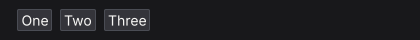
column / columnWith: stack children top to bottom
columnExample =
columnWith (gap 8) $
mapM_ (void . buttonWith fillW) ["One", "Two", "Three"]
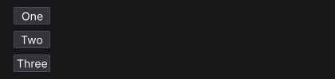
grid / gridWith: place children in equal-width columns
gridExample =
gridWith 3 (gap 8 . fillW) $
mapM_
(\i -> void (buttonWith fillW ("Cell " <> T.pack (show (i :: Int)))))
[1 .. 6]
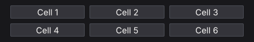
panel / panelWith: a container with a background and border
panelExample =
panelWith (fixedW 300 . padAll 12 . gap 6) $ do
heading "Deployments"
muted "3 services running"
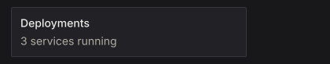
card: a full-width panel with a minimum width
cardExample =
card $ do
heading "Build #482"
muted "Passed in 1m 42s"
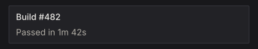
callout / calloutTone: a panel tinted with a semantic color
calloutExample = do
warnCol <- themeWarning <$> uiTheme
callout warnCol $ do
heading "Certificate expiring"
muted "TLS certificate expires in 3 days."
calloutTone Warning body resolves a theme Tone directly instead of taking an explicit Color.
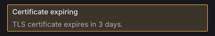
layers: stack children in one box, later children on top
layersExample =
layers $ do
let badgeRed = colorRGB 204 64 64
void (buttonWith (fixedWH 170 40) "Inbox")
styled (panelStyle (background badgeRed . borderColor badgeRed)) $
panelWith (alignEnd . alignTop . padXY 6 1) $
labelWith (fontColor colorWhite) "3"
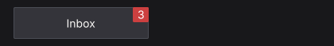
center: center content on both axes
centerExample =
panelWith (fillW . fillH) $
center (label "Centered on both axes")
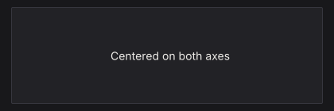
responsive / responsiveRowCol / container queries: switch layouts at a breakpoint
responsive breakpoint wide narrow body chooses between two containers based on window width; responsiveRowCol switches between a row and a column. For layouts inside split panes or sidebars that depend on the enclosing container’s own inner width rather than the window, use responsiveIn, responsiveRowColIn, withContainerQuery, withContainerWidth, or withContainerSize. withContainerQuery projects the inner Size to any Eq value and only schedules a follow-up frame when that projected value changes.
responsiveExample =
responsiveRowCol 640 (tight . gap 8 . fillW) $ do
panelWith (fillW . padAll 12) (label "Sidebar")
panelWith (fillW . padAll 12) (label "Content")
At 420 px wide:
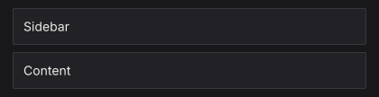
The same view at 760 px wide:
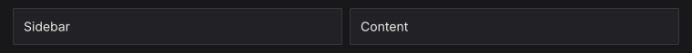
mouseArea: track hover and clicks across a whole region
mouseAreaExample = do
(_, area) <-
panelWith fillW $
mouseArea (fillW . padAll 10 . gap 4) $ do
label "build.log"
muted "Click anywhere in this card"
when (respClicked area) (muted "opening build.log")
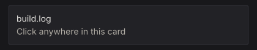
separator: draw a one-pixel divider rule
separatorExample =
columnWith (fillW . gap 8) $ do
label "Above the rule"
separator
label "Below the rule"
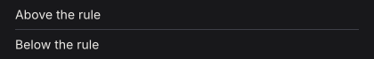
spacer: insert flexible space between siblings
spacerExample =
rowWith (fillW . alignMiddle) $ do
label "Left"
spacer (Grow 1) Fit
label "Right"
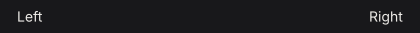
Modifiers
Modifiers are plain Layout -> Layout functions chained with (.). Because the leftmost function runs last in (f . g) x, it overrides anything to its right: tight . padAll 14 zeroes padding out, while padAll 14 . tight keeps the 14 px padding.
Sizing
fillW: take all remaining horizontal space
fillWExample =
rowWith (fillW . gap 8) $ do
void (buttonWith (fixedW 110) "fixedW 110")
void (buttonWith fillW "fillW")
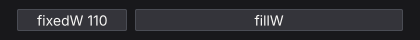
fillH: take all remaining vertical space
fillHExample =
rowWith (fillW . gap 8 . fixedH 96) $ do
panelWith (fixedW 120 . fillH) (label "fillH")
panelWith (fixedW 120) (label "natural")
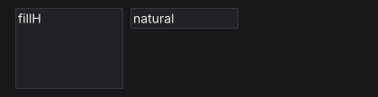
grow: fill both axes (fillW . fillH)
growExample =
rowWith (grow . gap 8) $ do
panelWith (fixedW 120) (label "fixedW 120")
panelWith grow (label "grow")
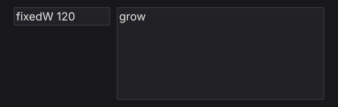
fixedW: set an exact width
fixedWExample =
rowWith (gap 8) $ do
void (buttonWith (fixedW 60) "60")
void (buttonWith (fixedW 110) "110")
void (buttonWith (fixedW 170) "170")
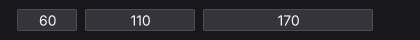
fixedH: set an exact height
fixedHExample =
rowWith (gap 8 . fillW) $ do
void (buttonWith (fixedH 30) "fixedH 30")
void (buttonWith (fixedH 56) "fixedH 56")
void (buttonWith (fixedH 82) "fixedH 82")
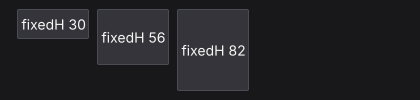
fixedWH: set an exact width and height
fixedWHExample =
rowWith (gap 8) $ do
void (buttonWith (fixedWH 120 36) "120 x 36")
void (buttonWith (fixedWH 200 72) "200 x 72")
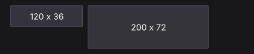
minW: set a minimum width
minWExample =
rowWith (fillW . gap 8) $ do
void (buttonWith (minW 200) "minW 200")
void (button "natural")
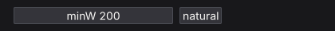
maxW: cap width at an upper bound
maxWExample =
rowWith (fillW . gap 8) $ do
void (buttonWith (fillW . maxW 160) "maxW 160")
void (buttonWith fillW "fillW")
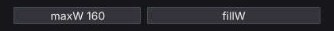
minH: set a minimum height
minHExample =
rowWith (fillW . gap 8) $ do
panelWith (minH 80 . fillW) (label "minH 80")
panelWith fillW (label "natural")
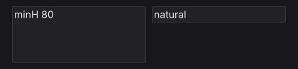
maxH: cap height at an upper bound
maxHExample =
rowWith (fillW . gap 8 . fixedH 100) $ do
panelWith (maxH 50 . fillW) (label "maxH 50")
panelWith (fillW . fillH) (label "fillH")
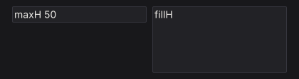
percent: take a percentage of the parent's width
percentExample =
rowWith (fillW . gap 8) $ do
panelWith (percent 30) (label "percent 30")
panelWith (percent 60) (label "percent 60")
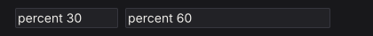
aspect: preserve a width-to-height ratio
aspectExample =
panelWith (fillW . aspect (16 / 9)) $
center (label "16 : 9")
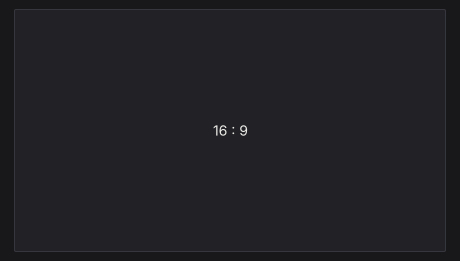
Spacing
padAll: equal padding on all four sides
padAllExample =
panelWith (fixedWH 260 120 . padAll 20) $
panelWith (fillW . fillH) (label "padAll 20")
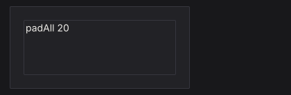
padXY: horizontal padding first, then vertical
padXYExample =
panelWith (fixedWH 280 100 . padXY 32 10) $
panelWith (fillW . fillH) (label "padXY 32 10")
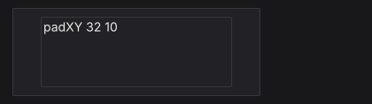
padLeft: left padding
padLeftExample =
panelWith (fixedWH 260 100 . padLeft 48) $
panelWith (fillW . fillH) (label "padLeft 48")
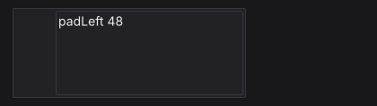
padRight: right padding
padRightExample =
panelWith (fixedWH 260 100 . padRight 48) $
panelWith (fillW . fillH) (label "padRight 48")
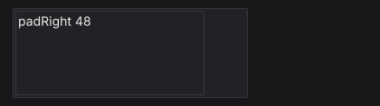
padTop: top padding
padTopExample =
panelWith (fixedWH 260 120 . padTop 40) $
panelWith (fillW . fillH) (label "padTop 40")
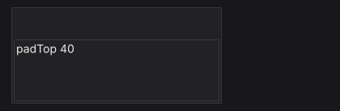
padBottom: bottom padding
padBottomExample =
panelWith (fixedWH 260 120 . padBottom 40) $
panelWith (fillW . fillH) (label "padBottom 40")
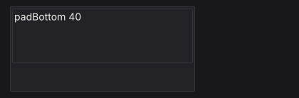
padLRTB: individual left, right, top, and bottom padding
padLRTBExample =
panelWith (fixedWH 280 120 . padLRTB 40 8 30 12) $
panelWith (fillW . fillH) (label "padLRTB 40 8 30 12")
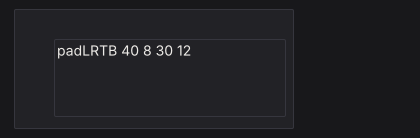
gap: spacing between adjacent children
gapExample =
columnWith (fillW . gap 12) $ do
rowWith (gap 4) $ mapM_ (void . button) ["gap 4", "B", "C"]
rowWith (gap 24) $ mapM_ (void . button) ["gap 24", "B", "C"]
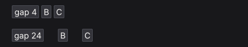
tight: zero container padding while keeping its gap
tightExample =
rowWith (gap 16 . fillW) $ do
panelWith (padAll 14 . gap 6 . fillW) $ do
muted "padAll 14"
label "default padding"
panelWith (tight . padAll 14 . gap 6 . fillW) $ do
muted "tight"
label "no padding"
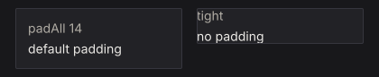
Alignment, distribution, and wrapping
alignStart, alignCenter, and alignEnd position a child horizontally inside a column. alignTop, alignMiddle, alignBottom, and alignBaseline position a child vertically inside a row.
Every align* modifier applies to the node it is placed on, not to that node’s children. Putting alignMiddle on a row centers the row inside its parent. To align the children inside a container across its cross axis, put itemsStart, itemsCenter, itemsEnd, itemsBaseline, or itemsStretch (or itemsAlign) on the container itself: rowWith (itemsCenter . gap 8) vertically centers every child that does not set its own vertical alignment, columnWith itemsCenter centers fit-width children horizontally without affecting left-aligned text inside fillW labels, and itemsStretch stretches fit-sized children across the cross axis. To distribute leftover space along a container’s main axis, use justifyStart, justifyCenter, justifyEnd, or justifyBetween (or justify). Any explicit align* modifier on a child (including alignTop or alignStart) overrides the container default, and itemsAlign never leaks into nested containers or pinned children.
Additional sizing and flow helpers include fitW / fitH, growW / growH, percentH, spacerW / spacerH, direction, and clipBox (clips children without painting a panel border or fill).
alignStart: align to the left edge
alignStartExample =
panelWith (fixedWH 300 110 . padAll 10) $
void (buttonWith (alignStart . fixedW 140) "alignStart")
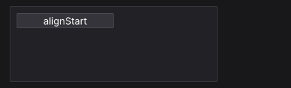
alignCenter: center horizontally
alignCenterExample =
panelWith (fixedWH 300 110 . padAll 10) $
void (buttonWith (alignCenter . fixedW 140) "alignCenter")
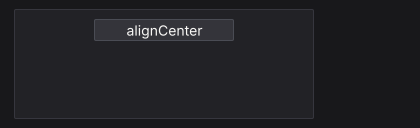
alignEnd: align to the right edge
alignEndExample =
panelWith (fixedWH 300 110 . padAll 10) $
void (buttonWith (alignEnd . fixedW 140) "alignEnd")
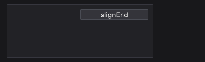
alignTop: align to the top edge
alignTopExample =
panelWith (fixedWH 300 110 . padAll 10) $
rowWith (fillW . fillH . gap 8) $
void (buttonWith (alignTop . fixedW 140) "alignTop")
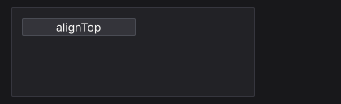
alignMiddle: center vertically
alignMidExample =
panelWith (fixedWH 300 110 . padAll 10) $
rowWith (fillW . fillH . gap 8) $
void (buttonWith (alignMiddle . fixedW 140) "alignMiddle")
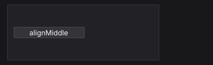
alignBottom: align to the bottom edge
alignBottomExample =
panelWith (fixedWH 300 110 . padAll 10) $
rowWith (fillW . fillH . gap 8) $
void (buttonWith (alignBottom . fixedW 140) "alignBottom")
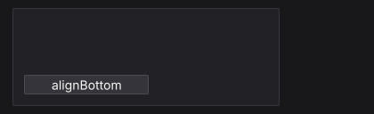
alignBaseline: line up on the first text baseline
alignBaselineExample =
rowWith (gap 12 . fixedW 340) $ do
labelWith (fontSize 24 . alignBaseline) "Title"
labelWith alignBaseline "baseline text"
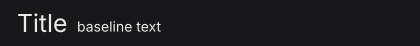
wrap: wrap overflowing children onto the next line
wrapExample =
rowWith (wrap . gap 6 . fixedW 280) $
mapM_ (void . button) ["haskell", "immediate", "mode", "layout", "sdl", "widgets"]
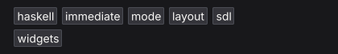
lineGap: spacing between wrapped lines
lineGapExample =
columnWith (fillW . gap 16) $ do
let labels = ["haskell", "immediate", "mode", "layout", "sdl", "widgets"]
muted "lineGap 2"
rowWith (wrap . lineGap 2 . gap 6 . fixedW 280) $ mapM_ (void . button) labels
muted "lineGap 18"
rowWith (wrap . lineGap 18 . gap 6 . fixedW 280) $ mapM_ (void . button) labels
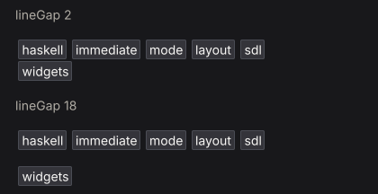
lineAlign: align wrapped lines across the container
lineAlignExample =
rowWith (wrap . lineAlign LinesCenter . gap 6 . fixedW 210) $
mapM_ (void . button) ["alpha", "beta", "gamma", "delta", "epsilon"]
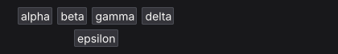
Positioning and pointer behavior
pinAt pulls a child out of normal flow and positions it at an offset from its alignment corner inside its parent. pointer controls whether an overlapping element intercepts clicks (PointerBlock) or lets them pass through to widgets underneath (PointerPass). In the pointer examples below, the cursor is parked directly over the overlay.
pinAt: position absolutely inside the parent
pinAtExample =
panelWith (fixedWH 280 110 . padAll 12) $ do
heading "Inbox"
muted "The badge is pinned, not stacked."
let badgeCol = colorRGB 204 64 64
styled (panelStyle (background badgeCol . borderColor badgeCol)) $
panelWith (pinAt 6 (-6) . alignEnd . alignTop . padXY 6 1) $
labelWith (fontColor colorWhite) "12"
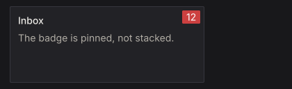
pointer PointerBlock: absorb pointer events over a region
pointerBlockExample =
layers $ do
void (buttonWith (fixedWH 200 44) "Open logs")
styled (panelStyle (background (colorRGBA 0 0 0 150) . borderWidth 0)) $
panelWith (pinAt 0 0 . grow . pointer PointerBlock . padAll 6) $
muted "scrim"
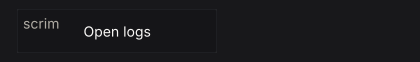
pointer PointerPass: let pointer events pass through
pointerPassExample =
layers $ do
void (buttonWith (fixedWH 200 44) "Open logs")
labelWith (pinAt 8 (-6) . pointer PointerPass) "decorative label"
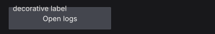
Scrolling
A scroll container must have a bounded viewport along its scroll axis:
itemList :: [Text] -> NanoUI ()
itemList items =
scrollWith (fixedH 300 . fillW) $
column $ for_ items label
If none of the scroller’s ancestors constrain its size, grow leaves it with nothing to measure against.
scrollWithscrolls vertically and returns its body’s result;scrollWith'also returns the scroller’sResponse(includingrespId).scroll2DWithandscroll2DWith'scroll both horizontally and vertically.scrollConfiguredandscrollConfigured'accept aScrollConfig: choose per-axisScrollPolicy(ScrollAuto,ScrollAlways,ScrollNone,ScrollHidden, orScrollOverlayfor a floating thumb without a reserved gutter), setscrollBare = Trueto omit the well background and border, or setscrollFocusable = Truefor keyboard-driven list views.- A full-viewport scroller (
scrollWith grow) drops its bordered input well and fills withpageBackground(themeWindowby default). Wrap the view instyled panelPageif you want the page background to match the panel surface instead.
Virtualization
For lists with tens of thousands of rows, build only the rows currently inside the viewport and pad above and below them with spacers. Grab the scroller’s ID first and read its previous-frame layout with getScrollMetrics:
virtualizedList :: [Item] -> NanoUI ()
virtualizedList items = do
sid <- currentId
scrollWith (fixedH 500 . fillW) $ do
metrics <- getScrollMetrics sid
let rowH = 28
total = length items
(offsetY, viewH) = case metrics of
Nothing -> (0, 0)
Just m -> (v2Y (scrollOffset m), rectH (scrollViewport m))
firstVisible = max 0 (floor (offsetY / rowH))
lastVisible = min total (firstVisible + ceiling (viewH / rowH) + 2)
topH = fromIntegral firstVisible * rowH
bottomH = fromIntegral (total - lastVisible) * rowH
visibleRows = take (lastVisible - firstVisible) (drop firstVisible items)
columnWith (tight . fillW) $ do
when (topH > 0) (spacer Fit (Fixed topH))
for_ visibleRows $ \item ->
withKey (itemId item) $
labelWith (fixedH rowH . fillW) (itemTitle item)
when (bottomH > 0) (spacer Fit (Fixed bottomH))
Use scrollViewport rather than the outer container rectangle for the visible height, since scrollViewport already subtracts padding and the scrollbar lane. scrollOffset gives the current scroll position. Calling getScrollMetrics registers a layout dependency, so resizing the window triggers a fresh frame automatically.
For complete examples, look at packages/nano-ui-demo/examples/LongList.hs (100,000 rows) and Logs.hs (auto-scrolling log tail).
Programmatic scrolling and mouse-wheel step
reveal :: WidgetId -> Float -> Int -> Bool -> NanoUI ()
reveal sid rowH index shouldReveal =
when shouldReveal $
scrollRectIntoView sid (Rect 0 (fromIntegral index * rowH) 1 rowH) ScrollNearest ScrollInstant
Inside a view, you can drive scrolling with scrollTo, scrollBy, scrollPages, scrollToStart, scrollToEnd, scrollIntoView, scrollRectIntoView, setScrollOffset, and setScrollStep.
For custom keyboard-driven lists without a full table or tree, set scrollFocusable = True in ScrollConfig so the scroller joins the Tab order and takes focus when passive content inside it is clicked. Pair its WidgetId with useListNav (uniform row height) or useListNavWith (custom per-row rectangles) and selectableRow to handle Up, Down, PageUp, PageDown, Home, End, Enter, and Space with automatic scrollRectIntoView.
By default, one mouse-wheel notch scrolls 60 logical pixels. For uniform lists, match the wheel step to your row height so one notch advances exactly one row:
oneRowPerNotch :: Float -> NanoUI ()
oneRowPerNotch rowHeight =
setScrollTuning defaultScrollTuning
{scrollWheelStep = rowHeight, scrollSmoothTime = 0}
You can also override the wheel step for a single scroller with setScrollStep sid px; passing 0 restores the context default.
Nesting and chrome
scrollArea, panel, and card each paint their own background, border, and corner radius. Nesting one inside a popup or modal produces an awkward box-within-a-box. Keep the frame at one level: either strip the inner surface with styled (inputStyle (background colorTransparent . borderWidth 0)), or set padAll 0 on the outer dialog and put the padding on the inner body instead.
See Styling Gotchas and Troubleshooting for more examples.
Widget Gallery
Every widget in nano-ui is an ordinary Haskell function exported from NanoUI.
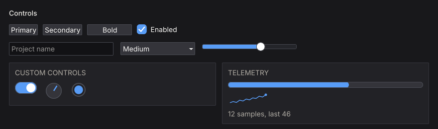
Finding the right widget
| What you need | Chapter |
|---|---|
| Buttons, menus, checkboxes, toggles, radio groups, selects, combo boxes, sliders, numeric fields, single-line text inputs, color pickers | Buttons, Menus & Inputs |
| Multi-line text editing, documents, undo history, IME composition | Text Editing |
| Tabs, sortable tables, tree views | Tabs, Tables & Trees |
| Modals, floating windows, popups, tooltips, context menus | Overlays & Windows |
| Drag-and-drop, list/tab reordering, dockable pane grids | Drag & Drop |
| Knobs, switches, progress bars, spinners, sparklines, custom 2D canvas drawing | Custom Drawing & Controls |
| Colors, themes, interaction states, fonts | Styling & Theming |
| Interactive previews of styling modifiers | Interactive Styling Lab |
| Subtle styling rules and edge cases | Styling Gotchas |
Layout containers (row, column, grid, panel, card, layers, and so on) and sizing modifiers are covered in Layout & Scrolling.
Widget naming conventions
Most widgets follow the same four-function naming pattern:
| Form | What it does |
|---|---|
button "Save" | Base form. Returns Bool (when activated) or (). |
button' | Primed form. Returns a full Response. |
buttonWith (fixedW 120) | Takes a Layout -> Layout modifier as its first argument. |
buttonConfigured cfg | Takes a configuration record (every config has a matching default...Config). |
A Response holds the widget’s identity, layout bounds, and interaction flags for the current frame:
| Field or helper | Meaning |
|---|---|
respId | The widget’s WidgetId (used for focus, menus, and scroll targets). |
respRect | The widget’s bounding rectangle from the previous frame. |
respHovered | True while the pointer is over the widget. |
respPressed | True while the mouse button is held down on the widget. |
respClicked | True on the frame the widget is activated (left click, Enter, or Space). |
respChanged | True on the frame the user edited the widget’s value. |
respSubmitted | True on the frame the user committed the field (for example, pressing Enter). |
respHeldWith / respClickedWith | Check which specific MouseButton is held or clicked. |
respRightPressed / respRightClicked | Shorthands for right-button interactions. |
Any widget that returns a Response can be wired to tooltip, contextMenu, and the focus helpers.
Buttons, Menus & Inputs
This chapter covers the everyday interactive controls: buttons, menus, choice widgets, sliders, numeric fields, single-line text inputs, and color pickers.
Buttons
button :: Text -> NanoUI Bool
button' :: Text -> NanoUI Response
buttonWith :: (Layout -> Layout) -> Text -> NanoUI Bool
buttonContent :: NanoUI () -> NanoUI Bool
iconButton :: Svg -> Text -> NanoUI Bool
button draws a clickable button and returns True on the single frame it is activated (either by a left click, or by pressing Enter or Space while focused):
saveButton = whenM (button "Save Document") (liftIO saveFile)
Reach for the primed variant (button') whenever you need the Response for hover checks, anchoring a popup, or attaching a tooltip:
refreshButton = do
resp <- button' "Refresh"
tooltip resp "Poll the remote server for updates"
when (respClicked resp) refresh
buttonContent wraps an arbitrary NanoUI () view inside a clickable button. The inner widgets are purely visual; clicking anywhere on the button activates it:
iconSaveButton =
whenM (buttonContent $ rowWith (gap 6 . alignMiddle) $ do
svgIcon 16 saveIcon
label "Save") $
saveDocument
iconButton draws an SVG icon next to a label. Passing an empty string "" produces a square icon-only button.
Wrap adjacent buttons (including iconButton, toggleButton, buttonContent, and select) in buttonGroup or buttonGroupWith to join them with zero gap, outer-only corner rounding, and shared 1-pixel internal borders.
For selectable list items and collapsible sections without a full table or tree:
selectableRow selected body(plusselectableRow',selectableRowWith,selectableRowWith') renders a full-width clickable row that tints on hover and highlights whenselectedisTrue, returningTruewhen clicked.collapsing title openVar body(andcollapsingWith) renders a toggle header with a disclosure arrow and runsbodyinsidescopewhileopenVarisTrue.
Menus
Menu rows are built from menuItem (returns True when clicked), menuItemShortcut (shows a shortcut label and activates on that chord while the menu is open), menuSeparator, and menuItemDisabled.
Build a menu bar by pairing menuButton' triggers with popup' overlays anchored to each button’s rectangle:
fileMenu = do
fileOpen <- useVar False
isOpen <- readVar fileOpen
btn <- menuButton' "File" isOpen
when (respClicked btn) (writeVar fileOpen (not isOpen))
let cfg = (defaultPopupConfig (AnchorRect (respRect btn)))
{popupPlacement = PlacementBelow, popupOffset = 0}
(popupResp, _) <- popup' (constVar isOpen) cfg $
columnWith (tight . gap 0) $ do
whenM (menuItemShortcut "New" (cmdOrCtrl <> key 'n')) newDocument
whenM (menuItem "Open...") openDocument
menuSeparator
whenM (menuItem "Exit") (writeVar fileOpen False >> quit)
when (respClicked popupResp) (writeVar fileOpen False)
Here constVar passes a read-only open flag derived from openMenu, and clicks on the popup update openMenu directly.
Important
Call overlays unconditionally on every frame. A closed
popup'renders nothing, whereas wrapping it inwhen isOpenshifts sibling widget IDs every time a menu opens or closes.
Because menuItemShortcut only listens while its menu is open, bind the same chord outside the menu with shortcut if you want it to work when the menu is closed:
saveBindings :: NanoUI ()
saveBindings = do
whenM (menuItemShortcut "Save" saveChord) saveDocument
whenM (shortcut saveChord) saveDocument
Only the first matching binding in a frame fires, so the open menu item naturally takes priority over the fallback shortcut. For a complete menu bar implementation, see Tutorial 2: Build a Notepad.
Attach a right-click menu to any widget with a Response using contextMenu:
rowMenu = do
(_, rowResp) <- mouseArea (fillW . gap 6) (label "Right-click for actions")
void $ contextMenu rowResp $ do
whenM (menuItem "Inspect") inspectRow
whenM (menuItem "Copy") copyRow
Input widgets
Input widgets display a Var and mutate it in place, keeping transient editing state (caret position, text selection, open dropdowns) under their own widget ID. Write to the Var directly to reset or overwrite a field, and use the primed variant’s Response when you need to react to edits.
| Widget | Signature | Purpose |
|---|---|---|
checkbox | Text -> Var Bool -> NanoUI () | Checkbox with a label |
toggleButton | Tone -> Text -> Var Bool -> NanoUI () | Two-state button filled with its tone color when active |
radio | Foldable f => f Text -> Var Int -> NanoUI () | Radio button group indexed by position |
enumRadio / enumRadioBy | (Bounded a, Enum a) => (a -> Text) -> Var a -> NanoUI () | Radio group covering every constructor of an enum (enumRadio uses Show) |
select | Foldable f => f Text -> Var Int -> NanoUI () | Dropdown selector indexed by position |
enumSelect / enumSelectBy | (Bounded a, Enum a) => (a -> Text) -> Var a -> NanoUI () | Dropdown selector over every constructor of an enum (enumSelect uses Show) |
comboBox | Foldable f => Text -> f Text -> Var Text -> NanoUI () | Free-text field with filterable autocomplete suggestions |
slider | Float -> Float -> Var Float -> NanoUI () | Continuous horizontal slider between min and max |
textInput | Var Text -> NanoUI () | Single-line text input |
searchInput | Text -> Var Text -> NanoUI () | Search field with placeholder, clear button, and debounced changes |
numericInput | Var Double -> NanoUI () | Numeric input with increment/decrement steppers |
colorPicker | Var Color -> NanoUI () | Saturation/value square and hue slider |
Every widget in this table provides a primed form (...') returning a Response. Simpler controls (checkbox, toggleButton, select, slider) add ...With for layout modifiers, while richer fields (textInput, searchInput, numericInput) add ...Configured taking a config record (whose *Layout field carries any layout modifier):
byteField = do
byte <- useVar (0 :: Double)
numericInputConfigured defaultNumericInputConfig
{nicMin = 0, nicMax = 255, nicHex = True} byte
Text and search fields
queryField = do
query <- useVar ""
resp <- textInput' query
when (respSubmitted resp) (search =<< readVar query)
when (respChanged resp) (preview =<< readVar query)
On textInput', respChanged is True on every edit and respSubmitted is True when the user presses Enter. When an edit triggers expensive work like filtering a database or calling an API, use searchInput' instead: its respChanged is debounced (300 ms by default) and fires immediately when the clear button is clicked:
packageSearch = do
query <- useVar ""
resp <- searchInput' "Find a package" query
when (respChanged resp) (refreshResults =<< readVar query)
Choices
data Pace = Walk | Jog | Sprint
deriving (Eq, Show, Enum, Bounded)
choices = do
enabled <- useVar True
checkbox "Enable notifications" enabled
isBold <- useVar False
toggleButton Accent "B" isBold
pace <- useEnumVar Jog
enumRadio pace
enumSelect pace
Use select when the options come from runtime data rather than a fixed enum:
sizeSelect = do
choice <- useVar 0
select ["Small", "Medium", "Large"] choice
comboBox accepts both suggested options and arbitrary text. Its respChanged flag fires only when the user commits a choice, not when your code updates the Var externally.
Sliders, numbers, and color
values :: Var Color -> NanoUI ()
values accent = do
volume <- useVar (40 :: Float)
slider 0 100 volume
count <- useVar (0 :: Double)
numericInput count
colorPicker accent -- accent <- newVar (colorHex "#38bdf8") in setup
numericInput accepts digits (plus a leading minus sign when negative numbers are allowed). Pressing Up or Down steps the value, and holding Shift multiplies the step by 10. Set nicDecimals to control both formatting and precision. For colors with transparency, use colorPickerRGBA, which adds an alpha bar.
Text Editing
nano-ui provides two multi-line text editors depending on how much text you are editing:
textAreaedits a plainVar Text. Use it for short fields like notes, comments, or commit messages.textAreaDocumentedits aVar TextDocument, which shares unchanged lines across edits. Use it for files, code buffers, and large documents.
Short text with textArea
notes = do
draft <- useVar ""
textArea draft
Each keystroke produces a new flat Text, which is fast and convenient for a few kilobytes of text.
Large documents with textAreaDocument
editorView :: Var WidgetId -> Var TextDocument -> NanoUI ()
editorView editorId docVar = do
resp <- textAreaDocumentWith' (grow . minW 320 . minH 200) docVar
when (respChanged resp) markDirty
writeVar editorId (respId resp)
TextDocument copies only the lines touched by an edit and shares everything else. Call documentText to flatten the document back into a single Text when saving or exporting, rather than on every edit:
save :: FilePath -> TextDocument -> NanoUI ()
save path doc = liftIO (BS.writeFile path (TE.encodeUtf8 (documentText doc)))
For status bars, documentLineCount runs without flattening the text.
Unified undo history
Keyboard typing, mouse selection, right-click context menu actions, and programmatic commands all run through TextCommand, so everything shares a single undo/redo stack:
-- | Editing, navigation, selection, history, and clipboard operations on a
-- text field. Mutating commands record an undo step and replace any active
-- selection.
data TextCommand
= -- | Replace the selection with text (typing, a snippet).
InsertText !Text
| -- | Delete the selection, or from the cursor to where the motion lands:
-- @Delete CharLeft@ is Backspace, @Delete WordRight@ Ctrl+Delete.
Delete !TextMotion
| -- | Move the cursor, extending the selection when the flag is set.
-- Without it, 'CharLeft' and 'CharRight' over a selection go to its start
-- and its end.
Move !TextMotion !Bool
| SelectAll
| -- | Select from the first position (the anchor) to the second (the
-- cursor), clamped into the document.
Select !Cursor !Cursor
| -- | Replace the text between two positions, leaving the cursor after it.
Replace !Cursor !Cursor !Text
| -- | Replace the whole document as one undoable edit.
ReplaceAll !Text
| Undo
| Redo
| Cut
| Copy
| Paste
deriving (Eq, Show)
Dispatch a command to any text field or editor by its WidgetId:
editMenu :: WidgetId -> Text -> NanoUI ()
editMenu editor today = do
whenM (menuItem "Undo") (runTextCommand editor Undo)
whenM (menuItem "Insert date") (runTextCommand editor (InsertText today))
Query undo/redo availability to enable or disable Edit menu entries:
undoState :: Var WidgetId -> NanoUI (Bool, Bool)
undoState editorId = do
editor <- readVar editorId
canUndo <- textCanUndo editor
canRedo <- textCanRedo editor
pure (canUndo, canRedo)
See Tutorial 2: Build a Notepad for a full Edit menu wired up this way.
Tip
Overwriting a
Var TextorVar TextDocumentdirectly from outside the widget clears its undo stack. If you want a programmatic edit to be undoable, dispatch aTextCommand(InsertText,ReplaceAll, and so on) instead.
When using primed variants (textArea', textAreaDocument'), respChanged is True after actual text edits and False after cursor movement or selection changes, making it safe to use for dirty-state tracking. Keep respId to target the editor with runTextCommand or requestFocus.
Rich text and hyperlinks
For read-only paragraphs mixing bold, italic, monospaced code runs, highlights, tooltips, and clickable links, use richText (or selectableRichText when users should be able to drag-select and copy):
releaseNote :: NanoUI ()
releaseNote = do
clicked <-
selectableRichText
[ "Build "
, strong "v0.2"
, " with "
, inlineTooltip "Uses -j1 to keep memory modest" (inlineCode "cabal build -j1 all")
, " or read the "
, hyperlink "https://goolord.github.io/nano-ui/book/" "documentation"
, "."
]
for_ clicked openLink
Plain string literals produce Inline pieces via OverloadedStrings. Combine them with strong, emphasis, inlineCode, inlineWith, restyle, inlineBackground, inlineTooltip, and hyperlink target label. Both richText and selectableRichText wrap to their container width and return Maybe Text holding the target of any link clicked on that frame. For full CommonMark documents, use nano-ui-markdown.
Tabs, Tables & Trees
For structured navigation and multi-item data, nano-ui includes tabs, sortable virtualized tables, and collapsible tree views.
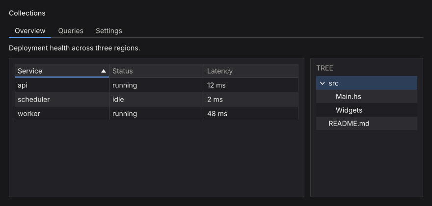
Tabs
A tab container stores the active tab’s key in a Var and runs only the selected tab’s body:
data Page = Overview | Logs | Settings
deriving (Eq, Show, Enum, Bounded)
pages = do
page <- useEnumVar Overview
enumTabsBy (T.pack . show) page $ \case
Overview -> overviewView
Logs -> logsView
Settings -> settingsView
Use tab for a standard tab, or closableTab to add a close button and middle-click dismissal. With tabs', closing a tab reports the key in tabClosed without mutating your tab list, leaving you in charge of removing it and picking the next active tab:
closableTabs = do
active <- useVar ("overview" :: Text)
resp <- tabs' active
[ closableTab "overview" "Overview" overviewView
, closableTab "logs" "Logs" logsView
]
for_ (tabClosed resp) closeTab
If the Var ever holds a key that does not match any current tab, tabs automatically selects the first tab and updates the Var.
If you want to render tab headers in one place and lay out the active body yourself, use tabBar or tabBar'. Both tabsConfigured and tabBarConfigured take a TabsConfig:
segmented :: Var Text -> [Tab Text (NanoUI ())] -> NanoUI ()
segmented active docTabs =
let cfg = defaultTabsConfig
{tabsStyle = TabSegmented, tabsOrientation = TabTop, tabsTrailing = newTabButton}
in tabsConfigured cfg active docTabs
Here are all four built-in TabStyle options, each with a different tab active:
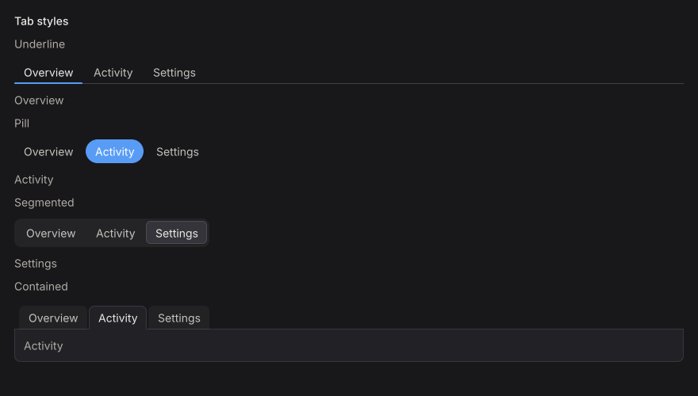
| Style | Visual appearance |
|---|---|
TabUnderline | Headers along a hairline rule, with an accent indicator under the active tab |
TabPill | Rounded pill headers, with the active tab filled in the accent color |
TabSegmented | Segmented control inside a rounded track, with the active segment raised |
TabContained | Classic folder tabs whose active header opens directly into a bordered body |
Set tabsOrientation to TabTop, TabBottom, TabLeft, or TabRight. For enum-backed tabs, enumTabs / enumTabsBy and enumTabBar / enumTabBarBy generate one tab per constructor automatically.
Tables
table renders structured columns built with Colonnade, with click-to-sort headers backed by a Var SortCol:
data Process = Process
{ pid :: Int
, name :: Text
, mem :: Int
}
processTable :: [Process] -> Var SortCol -> NanoUI ()
processTable procs sortVar =
table "procs" cols procs sortVar
where
cols = mconcat
[ headed "PID" (T.pack . show . pid)
, headed "Name" name
, headed "Memory (MB)" (T.pack . show . mem)
]
SortCol stores the active column index and sort direction. For quick text-only tables, simpleTable headers rows skips the Colonnade boilerplate. The primed table' returns a TableResponse with updated sort state, reordered columns, and hidden column indices; tableConfigured adds frozen rows/columns, fixed widths, tableSqueeze, tableBare (omit the outer border and well so an embedded table blends onto its pane), and column visibility options through TableConfig. Row rendering is virtualized internally. Users can drag column dividers down to a 40-pixel floor and double-click a divider to auto-fit the column to its content width (double-clicking again restores default fill sizing).
When building custom cells, use textCell, cellWidget, or attach typed sort keys with cellSort (text), cellSortNum (floating-point SortNum), cellSortInt (64-bit integer SortInt), or cellSortKey (SortKey) so numeric columns sort numerically instead of lexicographically. If a cell renders a custom widget, set cellWidthText (or cellText) so automatic column width measurement accounts for it.
Trees
items :: [TreeItem]
items =
[ TreeItem "src" [TreeItem "Main.hs" [], TreeItem "Widgets" []]
, TreeItem "README.md" []
]
fileTree :: [TreeItem] -> Var Int -> NanoUI ()
fileTree = tree "file-tree"
tree renders a list of TreeItem values (treeItemLabel and treeItemChildren) and tracks selection in a Var Int as a pre-order index. Walk your tree in the same pre-order traversal whenever you map that index back to a domain object. Collapsed branches preserve their sub-branch expansion state, and rows behave like focusable buttons with arrow-key navigation.
For very large trees, store the set of expanded nodes in a VarMap keyed by a stable path and build only the visible slice before passing it to tree.
To let users reorder tabs by dragging, see Drag & Drop.
Overlays & Windows
Modals, floating in-app windows, and popups are regular NanoUI actions controlled by a Var Bool that tracks whether they are open.
Always call overlays unconditionally
modal :: Var Bool -> Text -> NanoUI () -> NanoUI ()
floatingWindow :: Var Bool -> Text -> NanoUI () -> NanoUI ()
popup :: Var Bool -> PopupConfig -> NanoUI () -> NanoUI ()
Caution
Call every overlay on every frame, even when it is closed. Wrapping
modal,floatingWindow, orpopupinsidewhen isShownshifts the widget IDs of every sibling after it whenever it opens or closes, breaking focus, carets, and per-row state. Closed overlays draw nothing.
confirmDelete = do
showConfirm <- useVar False
whenM (button "Delete File...") (writeVar showConfirm True)
modal showConfirm "Confirm Deletion" $ do
label "Are you sure you want to permanently delete this file?"
row $ do
whenM (button "Cancel") (writeVar showConfirm False)
whenM (styled destructive (button "Delete")) $ do
deleteFile
writeVar showConfirm False
A modal draws above the page and blocks pointer and keyboard input behind it. Pressing Escape, clicking outside the dialog, or clicking its close button sets the Var Bool to False, closing the modal in the same frame.
Modals
modal draws a centered panel with a title bar and close button, clamped to fit inside the viewport. Its body does not scroll automatically: wrap long content in scrollWith, and give the modal an explicit size with modalWith when the body needs to fill it:
settingsDialog = do
open <- useVar False
modalWith (fixedWH 600 400) open "Settings" $
columnWith (fillW . fillH) settingsBody
modal' returns (Response, Maybe a) and reports dismissal attempts through respClicked. When your open state is derived from another value (rather than stored directly in a Var Bool), pass constVar and update your real state from the response:
notice = do
open <- useVar False
isOpen <- readVar open
(resp, _) <- modal' (constVar isOpen) "Important" $ do
label "This dialog is shown while `open` is True."
whenM (button "OK") (writeVar open False)
when (respClicked resp) (writeVar open False)
If you want a modal backdrop and panel without a title bar or close button, use modalPanel or modalPanel'. Pressing Escape or clicking outside still closes it.
Floating windows
floatingWindow creates a draggable, resizable floating panel with a scrollable body. Unlike a modal, the main UI and any other open floating windows remain interactive around it:
inspector = do
inspectorOpen <- useVar False
floatingWindow inspectorOpen "Inspector" $ do
inspectorBody
floatingWindow' returns both the body’s result and a Response. Use floatingWindow for inspectors, palettes, and tool panels that sit alongside the main view; use modal when the user needs to finish an interaction before returning to the page.
Popups
popup draws a floating panel positioned by a PopupConfig:
filterPopup = do
filterOpen <- useVar False
showFruit <- useVar True
showVeg <- useVar True
filterR <- button' "Filter"
when (respClicked filterR) (modifyVar filterOpen not)
popup filterOpen (defaultPopupConfig (AnchorRect (respRect filterR))) $ do
checkbox "Fruit" showFruit
checkbox "Vegetables" showVeg
Clicks on the anchor rectangle count as clicks inside the popup, so clicking the trigger button to dismiss a popup will not immediately pop it back open on the same press.
Key placement options:
AnchorRect (respRect r)anchors the popup to a widget;AnchorPoint posanchors it to a specific coordinate.popupPlacementchooses where the popup opens (PlacementAuto,PlacementBelow,PlacementAbove,PlacementAtCursor, and others).popupOffsetsets the pixel gap between the anchor and the popup.popupDismissable = Falseprevents automatic closing on Escape or outside clicks so you can handle dismissal explicitly viapopup'.
Because anchored popups read respRect (which comes from the previous frame), warm up one frame in headless tests before clicking to open them. For tall popup menus, cap the height with popupWith (maxH ...) and place a scroller inside.
Tooltips
Tooltips require no state Var and attach directly to any widget’s Response:
tooltips = do
save <- button' "Save"
tooltip save "Write the file to disk"
more <- button' "More"
tooltipConfigured defaultTooltipConfig
{tooltipPlacement = PlacementAtCursor} more "Follows the pointer"
By default, tooltips appear after hovering for 0.5 seconds. Pass a TooltipConfig to tooltipConfigured to change the delay or placement, or use tooltipWidget, tooltipWidgetConfigured, or withTooltip to render a custom widget subtree inside the tooltip instead of plain text. Tooltips pass pointer events through to widgets underneath and keep their bodies inert so inner controls cannot steal keyboard focus.
Keep in mind
- Modals stack in declaration order. Escape dismisses the innermost modal first; sibling modals close in declaration order.
- Keep the open
Varalive outside conditional branches. Allocate or read it in a scope that runs even while the overlay is hidden. - Check focus after overlay calls so focus queries see widgets declared inside open overlays.
- Avoid nested borders. Putting a
scrollArea,panel, orcardinside a modal or popup draws a box inside a box; strip the inner chrome (see Double borders).
For a complete example connecting a menu bar of popup' panels and a close-confirmation modal, see Tutorial 2: Build a Notepad.
Drag & Drop
Drag and drop in nano-ui falls into two categories: pointer drags inside the window (reordering rows, dragging tabs, docking panes) and external files or text dragged in from other apps. In every case, the hooks only report drag state and drop locations; updating your application data is up to you.
Reordering a list
Pass the current list of item IDs and each item’s drawn Response (in render order) to useReorder:
chips :: Var [Int] -> NanoUI ()
chips orderVar = rowWith (gap 6) $ do
order <- readVar orderVar -- orderVar <- newVar [0 .. 4] in setup
drawn <- forM order $ \i -> (i,) <$> chip i
r <- useReorder order drawn
writeVar orderVar (reorderOrder r)
reorderOrder returns the final order on the frame the user drops an item. Render from reorderPreview instead if you want surrounding rows to shift live during the drag. reorderDragging identifies the item currently held, and reorderMoved turns True once the cursor passes the drag threshold so you can suppress normal click handlers.
General gestures with useDrag
For custom drag interactions (like dragging tabs or moving items between containers), use useDrag. Allocate a drag handle once in setup with newDrag. In the example below, insertionIndex converts the pointer coordinates into a target slot along a tab bar (returning Nothing when outside):
tabStrip :: DragHandle Text -> Var Text -> [Tab Text ()] -> NanoUI ()
tabStrip dragHandle active documents = do
headers <- tabBar' active documents
gesture <- useDrag dragHandle (tabHeaders headers)
for_ gesture $ \d -> when (dragPhase d == DragReleased) $ do
let rest = filter ((/= dragPayload d) . fst) (tabHeaders headers)
for_ (insertionIndex DragAxisX (tabStripRect headers) (map (respRect . snd) rest) (dragAt d)) $
moveTab (dragPayload d)
dragPhase transitions through DragStarted, Dragging, and either DragReleased or DragCancelled (triggered by Escape, losing capture, or the dragged source disappearing). Both terminal phases last a single frame; commit changes only on DragReleased.
Files and text dropped from other apps
The SDL backend forwards OS drag-and-drop events (the RGFW backend does not). dropZone draws a panel that tracks hover state and reports dropped files or text:
fileDrop :: NanoUI ()
fileDrop = do
(_, _, target) <- dropZone (fillW . padAll 12) (label "Drop files here")
when (dropReceived target) (mapM_ openFile (dropFiles target))
dropHovered is True while an external drag hovers over the zone. If you want drop detection on a custom region without drawing a panel, call useDrop rect. Drop events respect layering, so a drop zone covered by an open modal receives nothing.
Dockable pane grids
paneGrid (imported from NanoUI.Widgets.PaneGrid) manages splittable, resizable, tab-groupable pane layouts. Its response includes pgrDropTarget, which reports where a dragged pane or tab would dock under the cursor and pairs with useDrag:
dockPanes :: PaneGridConfig -> Maybe (Drag Word64) -> NanoUI ()
dockPanes cfg gesture = do
panes <- paneGrid cfg
case (gesture, pgrDropTarget panes) of
(Just d, Just target) | dragPhase d == DragReleased -> void (commitPaneDrop target)
_ -> pure ()
pgdLocation is BesidePane paneId edge (on a pane edge), IntoTabs paneId (in a pane center when pgCenterDrop = CenterTab), or OutsideGrid edge (along the outer grid margin). pgdRect and pgdPane let you validate or highlight the target. Save pgrTree whenever pgrCommitted is True.
Custom Drawing & Controls
When the built-in widgets do not cover what you need, you can draw directly with the 2D canvas API. The six controls in NanoUI.Widgets.Custom are built on this same API and double as clean templates for your own widgets.
Built-in custom controls
NanoUI re-exports all six from NanoUI.Widgets.Custom:
| Control | Signature | Default size | Notes |
|---|---|---|---|
knob | Float -> Float -> Var Float -> NanoUI () | 36x36 | Min, max, value; drag vertically, scroll wheel, or use arrow keys |
toggleSwitch | Var Bool -> NanoUI () | 44x24 | Toggle with click, Space, or Enter |
circularProgress | Float -> NanoUI () | 32x32 | Progress fraction in [0, 1] |
progressBar | Float -> NanoUI () | full width, 12 high | Progress fraction in [0, 1] |
spinner | NanoUI () | 18x18 | Indeterminate spinner; wakes the loop at 60 Hz while visible |
sparkline | [Float] -> NanoUI () | 80x24 | Auto-scales vertically to the input range |
Every control provides a primed form (knob', toggleSwitch', and so on) returning a Response, plus a ...With variant accepting a layout modifier and custom dimensions:
controls :: Var Float -> Float -> [Float] -> NanoUI ()
controls volume progress samples = do
knobWith alignMiddle 48 0 100 volume
progressBarWith fillW 6 progress
sparklineWith (fixedWH 120 32) 120 32 samples
sparkline stretches the minimum value to the bottom of its plot box and the maximum to the top, so series of different scales remain readable in a tight strip. Here is a sparkline at its default size next to a wider sparklineWith:
sparklines :: [Float] -> NanoUI ()
sparklines samples = rowWith (gap 16 . alignMiddle) $ do
sparkline samples
sparklineWith (fixedWH 120 32) 120 32 samples

If you need axes, legends, or hover readouts, use plot from nano-ui-diagrams instead (see Charts and diagrams).
Here is a compact settings row combining a knob and a live readout:
settingsRow :: Var Bool -> Var Float -> NanoUI ()
settingsRow enabled volume = rowWith (gap 12 . alignMiddle) $ do
toggleSwitch enabled
labelWith (alignMiddle . fixedW 64) "Enabled"
knob 0 100 volume
v <- readVar volume
labelWith (alignMiddle . fontMono . fixedW 48) (T.pack (show (round v :: Int)))
Pinning the numeric label with fixedW prevents the row from jittering as digits change, and reading the Var below the knob keeps drags to a single pass.
spinner paces itself with wakeAfter (60 steps per second) only while it is visible on screen; once scrolled or clipped out of view, it stops requesting frames. Avoid calling a global keepAnimating, which would keep the event loop spinning even when no spinner is on screen.
How custom controls are structured
Each control in NanoUI.Widgets.Custom follows the same four steps:
- Claim an ID with
freshWidget. - Size and render it via
CustomWidgetSpecandrunCanvasFor. - Handle user input with
useDrag2DOn,useWheelDeltaOn, anduseKeyNav. - Commit edits back to the caller’s
VarwithbindVarorfinishInput.
Canvas drawing
canvas reserves a rectangle using a layout modifier and runs a CanvasM block inside it. The rectangle passed to your drawing callback is in window coordinates, so draw relative to its Rect x y w h:
import NanoUI.Path qualified as P
badge :: NanoUI ()
badge = void $ canvas (fixedWH 120 40) $ \r@(Rect x y _ h) -> do
drawRoundedRect r 8 blue
drawStrokePath (P.circle (V2 (x + 20) (y + h / 2)) 8) 2 colorWhite
drawText (V2 (x + 68) (y + h / 2)) AlignCenter AlignMiddle "Ready" colorWhite
canvas returns a Response; wrap it in void if your drawing is purely decorative. canvasConfigured adds content-key caching, custom cursor shapes, and pointer tracking. When you need full control over sizing, keyboard handling, or focus, drop down to customWidget with a CustomWidgetSpec:
dot :: Float -> Float -> NanoUI Response
dot angle volume = do
(resp, ()) <- customWidget defaultCustomWidgetSpec
{ widgetLayout = fixedWH 48 48
, widgetContent = contentKey [angle, volume]
, widgetDraw = \cdc (Rect x y w h) -> runCanvasFor cdc $ do
drawCircle (V2 (x + w / 2) (y + h / 2)) 16 (themeAccent (cdcTheme cdc))
, widgetCursor = Just (\_ _ _ -> UiCursorPointer)
}
pure resp
Inside widgetDraw, runCanvasFor adjusts curve tessellation automatically for the display’s DPI scale, and drawContext / cdcTheme give you the active Theme, font metrics, and hover/press state.
Reading the canvas examples
The visual reference below comes straight from CanvasExamples.hs, rendered directly to SVG by nano-ui-svg-glossary. Each list pairs a label with a drawing callback, sharing these colors and helper:
ink, blue, teal, amber, rose :: Color
ink = colorRGB 226 232 240
blue = colorRGB 59 130 246
teal = colorRGB 20 184 166
amber = colorRGB 245 158 11
rose = colorRGB 244 63 94
centre :: Rect -> V2
centre (Rect x y w h) = V2 (x + w / 2) (y + h / 2)
Thin gray guides, dots, dashed outlines, and red crosshairs in the images below are reference annotations overlaid by the generator, not part of the snippets themselves.
Rectangles, circles, and gradients
The basic drawing primitives take a rectangle or a center and radius, with no NanoUI.Path import required.

primitives :: [(Text, Rect -> CanvasM ())]
primitives =
[ ("drawRect", \r -> drawRect r blue)
, ("drawRoundedRect", \r -> drawRoundedRect r 14 teal)
, ("drawCircle", \r -> drawCircle (centre r) 28 amber)
, ("drawStrokeCircle", \r -> drawStrokeCircle (centre r) 28 4 rose)
, ("drawStrokeAA", \(Rect x y w h) -> drawStrokeAA (V2 x (y + h)) (V2 (x + w) y) 4 ink)
, ("drawLinearGradientH", \r -> drawLinearGradientH r blue teal)
, ("drawLinearGradientV", \r -> drawLinearGradientV r amber rose)
, ("drawQuadGradient", \r -> drawQuadGradient r blue teal amber rose)
]
drawStrokeCircle insets its stroke inside the radius. drawStrokeAA draws an anti-aliased segment with square ends, while drawStroke skips anti-aliasing for crisp horizontal or vertical rules. drawQuadGradient takes its four corner colors clockwise starting from the top-left.
Paths
A Path is a sequence of commands combined with <>. Start a subpath with moveTo, extend it with lineTo, quadTo, cubicTo, and arc, and connect back to the start with close. Below, each path is stroked with drawStrokePath (path r) 3 blue; solid dots mark path vertices, while hollow rings mark control points and arc centers.
segments :: [(Text, Rect -> P.Path)]
segments =
[ ("lineTo", \(Rect x y w h) ->
P.moveTo (V2 x (y + h)) <> P.lineTo (V2 (x + w / 2) y) <> P.lineTo (V2 (x + w) (y + h)))
, ("quadTo", \(Rect x y w h) ->
P.moveTo (V2 x (y + h)) <> P.quadTo (V2 (x + w / 2) (y - 12)) (V2 (x + w) (y + h)))
, ("cubicTo", \(Rect x y w h) ->
P.moveTo (V2 x (y + h)) <> P.cubicTo (V2 x y) (V2 (x + w) (y + h)) (V2 (x + w) y))
, ("arc", \r -> P.arc (centre r) 28 0 (3 * pi / 2))
, ("moveTo, arc, close", \r -> P.moveTo (centre r) <> P.arc (centre r) 28 0 (3 * pi / 2) <> P.close)
]
Angles are in radians. Because y increases downward, positive angles sweep clockwise: 0 points to 3 o’clock, so a positive sweep of 3 * pi / 2 runs three-quarters of the way around clockwise. Calling arc after moveTo draws a straight line from the current point to the start of the arc, which makes pie wedges trivial.
Shape constructors build complete standalone subpaths. They never connect to prior subpaths, so joining them with <> builds a single multi-subpath shape:
shapes :: [(Text, Rect -> CanvasM ())]
shapes =
[ ("rect", \r -> shape (P.rect r))
, ("roundedRect", \r -> shape (P.roundedRect r 12))
, ("roundedRectCorners", \r -> shape (P.roundedRectCorners r 24 4 24 4))
, ("circle", \r -> shape (P.circle (centre r) 28))
, ("ellipse", \r -> shape (P.ellipse (centre r) (V2 48 22)))
, ("polygon", \(Rect x y w h) -> shape (P.polygon [V2 (x + w / 2) y, V2 (x + w) (y + h), V2 x (y + h)]))
, ("polyline", \(Rect x y w h) ->
drawStrokePath (P.polyline [V2 x (y + h), V2 (x + w / 3) y, V2 (x + 2 * w / 3) (y + h), V2 (x + w) y]) 2 blue)
]
where
shape p = drawPath p (withAlpha blue 0.35) >> drawStrokePath p 2 blue
roundedRectCorners takes corner radii in CSS border-radius order: top-left, top-right, bottom-right, bottom-left. polygon closes the contour while polyline leaves it open (so the polyline is only stroked above). Filling a path implicitly closes every subpath.
Fill rules
drawPath fills using P.NonZero, while drawPathWith lets you choose both the fill rule and paint. All three cells below fill three concentric circles:

fillRules :: [(Text, Rect -> CanvasM ())]
fillRules =
[ ("NonZero", \r -> drawPathWith P.NonZero (rings r) (P.Solid teal))
, ("NonZero, middle reversed", \r -> drawPathWith P.NonZero (reversedMiddle r) (P.Solid teal))
, ("EvenOdd", \r -> drawPathWith P.EvenOdd (rings r) (P.Solid teal))
]
where
rings r = P.circle (centre r) 30 <> P.circle (centre r) 20 <> P.circle (centre r) 9
-- A negative sweep runs the middle circle anticlockwise.
reversedMiddle r@(Rect x y w h) =
P.circle (centre r) 30
<> P.moveTo (V2 (x + w / 2 + 20) (y + h / 2))
<> P.arc (centre r) 20 0 (-2 * pi)
<> P.close
<> P.circle (centre r) 9
Because P.circle always winds clockwise, all three circles add together under NonZero to produce a solid disc. Reversing the middle circle cancels out its interior and punches a hole. EvenOdd ignores winding direction and simply alternates filled and empty as subpaths nest. Note that self-intersecting or crossing subpaths are not resolved against each other, so keep cutouts strictly inside their enclosing contour.
Paints
P.Solid fills with a flat color. P.Linear from to stops interpolates color stops along the segment from from (offset 0) to to (offset 1):

paints :: [(Text, Rect -> CanvasM ())]
paints =
[ ("Solid", \r -> drawPathWith P.NonZero (P.roundedRect r 10) (P.Solid blue))
, ("Linear, two stops", \r@(Rect x y w _) ->
drawPathWith P.NonZero (P.roundedRect r 10) (P.Linear (V2 x y) (V2 (x + w) y) [(0, blue), (1, teal)]))
, ("Linear, short span", \r@(Rect x y w _) ->
drawPathWith P.NonZero (P.roundedRect r 10) (P.Linear (V2 (x + w / 3) y) (V2 (x + 2 * w / 3) y) [(0, blue), (1, teal)]))
, ("Linear, three stops", \r@(Rect x y w h) ->
drawPathWith P.NonZero (P.circle (centre r) 30) (P.Linear (V2 x y) (V2 (x + w) (y + h)) [(0, amber), (0.5, rose), (1, blue)]))
]
Outside the first and last stops, the gradient clamps to the endpoint colors (visible in the middle-third example). Strokes accept Paint values too, so outlines can use gradients just like fills.
Strokes
drawStrokePathWith accepts a P.Stroke record. Start with P.stroke width (butt caps, miter joins, solid line) and update the fields you need. Path strokes are always centered on the path geometry.
Line caps control how open path ends and individual dashes terminate. Compared against the thin path guide, ButtCap stops flush at the endpoints, while RoundCap and SquareCap extend past them by half the stroke width:

capLine :: Rect -> P.Path
capLine (Rect x y w h) = P.moveTo (V2 (x + 16) (y + h / 2)) <> P.lineTo (V2 (x + w - 16) (y + h / 2))
caps :: [(Text, Rect -> CanvasM ())]
caps =
[ (name, \r -> drawStrokePathWith (P.stroke 18) {P.strokeCap = cap} (capLine r) (P.Solid blue))
| (name, cap) <- [("ButtCap", P.ButtCap), ("RoundCap", P.RoundCap), ("SquareCap", P.SquareCap)]
]
Line joins control corners between consecutive segments. If a sharp miter point would stretch farther than strokeMiterLimit * width, it falls back to a flat bevel (demonstrated in the fourth cell with a miter limit of 1.5):
zigzag :: Rect -> P.Path
zigzag (Rect x y w h) = P.polyline [V2 (x + w / 4) (y + h - 4), V2 (x + w / 2) (y + 10), V2 (x + 3 * w / 4) (y + h - 4)]
joins :: [(Text, Rect -> CanvasM ())]
joins =
[ ("MiterJoin", withJoin (P.stroke 14) {P.strokeJoin = P.MiterJoin})
, ("RoundJoin", withJoin (P.stroke 14) {P.strokeJoin = P.RoundJoin})
, ("BevelJoin", withJoin (P.stroke 14) {P.strokeJoin = P.BevelJoin})
, ("strokeMiterLimit 1.5", withJoin (P.stroke 14) {P.strokeJoin = P.MiterJoin, P.strokeMiterLimit = 1.5})
]
where
withJoin st r = drawStrokePathWith st (zigzag r) (P.Solid teal)
strokeDash takes alternating dash and gap lengths that repeat along each subpath, and strokeDashOffset shifts where the pattern begins. Combining a zero-length dash with RoundCap produces round dots:

dashes :: [(Text, Rect -> CanvasM ())]
dashes =
[ ("[12, 6]", dashed (P.stroke 4) {P.strokeDash = [12, 6]})
, ("[12, 6], offset 9", dashed (P.stroke 4) {P.strokeDash = [12, 6], P.strokeDashOffset = 9})
, ("[18, 5, 3, 5]", dashed (P.stroke 4) {P.strokeDash = [18, 5, 3, 5]})
, ("[0, 10], RoundCap", dashed (P.stroke 6) {P.strokeDash = [0, 10], P.strokeCap = P.RoundCap})
]
where
dashed st r = drawStrokePathWith st (P.roundedRect r 12) (P.Solid amber)
Transforms
withTransform applies a P.Transform to everything drawn inside its block. Transforms compose with <> right-to-left (the right-hand transform runs first). The dashed outline below shows the arrow’s untransformed position:
arrowPath :: Rect -> P.Path
arrowPath r =
let V2 cx cy = centre r
in P.polygon [V2 (cx - 24) (cy - 6), V2 cx (cy - 6), V2 cx (cy - 16), V2 (cx + 24) cy, V2 cx (cy + 16), V2 cx (cy + 6), V2 (cx - 24) (cy + 6)]
arrow :: Rect -> CanvasM ()
arrow r = drawPath (arrowPath r) teal >> drawStrokePath (arrowPath r) 2 ink
-- | Scale about a point: move it to the origin, scale, move it back.
scaleAround :: V2 -> Float -> Float -> P.Transform
scaleAround (V2 cx cy) sx sy = P.translate cx cy <> P.scale sx sy <> P.translate (-cx) (-cy)
transforms :: [(Text, Rect -> CanvasM ())]
transforms =
[ ("translate 20 10", \r -> withTransform (P.translate 20 10) (arrow r))
, ("rotateAround c (pi / 4)", \r -> withTransform (P.rotateAround (centre r) (pi / 4)) (arrow r))
, ("scaleAround c 1.5 1.5", \r -> withTransform (scaleAround (centre r) 1.5 1.5) (arrow r))
, ("scaleAround c (-1) 1", \r -> withTransform (scaleAround (centre r) (-1) 1) (arrow r))
]
P.rotate and P.scale pivot around the window origin (0, 0). To pivot around a shape’s center instead, translate it to the origin first (P.rotateAround does this for rotation, and scaleAround above shows the equivalent for scaling). Stroke widths and dash patterns scale with the transform, which is why the scaled arrow has a thicker outline. Text positions and scales under transforms, though individual glyphs do not rotate.
Clipping
withClip rect restricts drawing inside its block to the intersection of rect and the active clip region. Every canvas starts clipped to its own widget bounds, so drawings can never accidentally spill outside their widget.
clipped :: Rect -> CanvasM ()
clipped r@(Rect x y _ h) = do
drawCircle (centre r) 34 rose
drawText (V2 (x - 6) (y + h / 2)) AlignStart AlignMiddle "text past the edge" ink
clipRect :: Rect -> Rect
clipRect (Rect x y w h) = Rect (x + 10) (y + 8) (w - 20) (h - 16)
clips :: [(Text, Rect -> CanvasM ())]
clips =
[ ("no clip", clipped)
, ("withClip box", \r -> withClip (clipRect r) (clipped r))
]
Text
drawText pos alignX alignY txt color places text relative to an anchor point (the red dot below). Alignment specifies which part of the text sits on that point: AlignStart anchors the left edge, AlignTop anchors the top of the line box, and AlignBaseline anchors the text baseline. Use drawTextWith with a TextFont to customize size, variant, weight, or slant, and drawTextClipped / drawTextClippedWith to clip a single text draw to a sub-rectangle without pushing a separate withClip scope.

textAnchors :: [(Text, Rect -> CanvasM ())]
textAnchors =
[ (name, \r -> drawText (centre r) ax AlignMiddle "Anchor" ink)
| (name, ax) <- [("AlignStart", AlignStart), ("AlignCenter", AlignCenter), ("AlignEnd", AlignEnd)]
]
<> [ (name, \r -> drawText (centre r) AlignCenter ay "Anchor" ink)
| (name, ay) <- [("AlignTop", AlignTop), ("AlignMiddle", AlignMiddle), ("AlignBaseline", AlignBaseline), ("AlignBottom", AlignBottom)]
]
<> [ ("drawTextWith", \r ->
drawTextWith defaultTextFont {textFontSize = 24, textFontWeight = WeightBold} (centre r) AlignCenter AlignMiddle "42" amber)
]
Measure strings inside the view using lineWidthUi and uiFontMetrics (or trim them to fit with truncateTextUi) and pass those measurements into your drawing callback. Both helpers load and shape the needed glyphs first. The pure lineWidth is only exact for text that has already been measured or drawn; otherwise it falls back to summing per-glyph advances, which drifts from HarfBuzz’s unrounded shaped runs over long strings.
Borders: inset vs. centered
drawStrokeRoundedRect draws its entire border inside the given rectangle. By contrast, drawStrokePath centers the stroke on the path edge, pushing half the border width outside the rectangle. The thin guide below shows the exact rectangle passed to each call:

borders :: [(Text, Rect -> CanvasM ())]
borders =
[ ("drawStrokeRoundedRect", \r -> drawStrokeRoundedRect r 12 8 (withAlpha blue 0.8))
, ("drawStrokePath", \r -> drawStrokePath (P.roundedRect r 12) 8 (withAlpha blue 0.8))
]
Always use drawStrokeRoundedRect (or inset your path by half the stroke width) when stroking a widget’s outer border so the edges do not get clipped by the widget bounds.
Content keys and caching
Without a widgetContent key, nano-ui rebuilds and diffs a custom widget’s draw ops on every frame. Adding a content key lets unchanged frames skip both rebuild and repaint, as long as the key includes every input the drawing reads:
gauge :: Float -> Float -> Float -> NanoUI Response
gauge angle volume scrollY = do
(resp, ()) <- customWidget defaultCustomWidgetSpec
{ widgetLayout = fixedWH 48 48
, widgetContent = contentKey [angle, volume, fromIntegral (round scrollY :: Int)]
, widgetDraw = \cdc rect -> runCanvasFor cdc (drawGauge rect)
}
pure resp
If you forget an input in the key, the canvas will freeze on stale pixels until something else forces a rebuild. See Stale cached drawings.
A drawing whose layout bounds never change (such as a drag ghost moved via pinAt under the pointer) receives no layout diff when it moves. Give it an explicit version hash covering whatever drives its movement:
-- ghostOps :: Rect -> SmallArray DrawOp
dragGhost :: Float -> Float -> NanoUI Response
dragGhost mx my = drawingVersioned (contentKey [mx, my]) (fixedWH 32 32) ghostOps
Without a version key, it stays frozen on the draw ops from its very first frame.
SVG icons
Parse inline SVG markup with parseSvg or load a file once at startup with loadSvg. Any stroke or fill using currentColor automatically inherits the active text color (so fontColor and semantic tones tint it directly), while hard-coded colors in the SVG stay untouched:
icons :: Svg -> Color -> NanoUI ()
icons star accent = do
svgIcon 24 star
svgIconWith (fixedWH 32 32 . fontColor accent) star
whenM (iconButton star "Star") starItem
svgIconConfigured takes an ImageConfig for CSS-style fitting (FitContain, FitCover, FitFill).
To paint an SVG inside a custom canvas, rasterize it with rasterizeSvg from NanoUI.Svg, upload it with useImageRgba, and draw the resulting ImageId. Make sure the lease key covers everything that changes the rasterized pixels (like the tint color):
starBadge :: ImageHandle Color -> Svg -> Color -> NanoUI Response
starBadge owner star tint = do
iid <- useImageRgba owner tint 32 32 (rasterizeSvg 32 32 tint star)
canvas (fixedWH 140 44) $ \(Rect x y _ _) ->
for_ iid $ \i -> drawImage (Rect (x + 8) (y + 6) 32 32) i colorWhite
For going in the other direction (exporting nano-ui draw ops or entire frames to SVG), see SVG export.
Styling & Theming
Styling in nano-ui is scoped rather than selector-based. A Theme holds a Style record for each surface kind, and styled or themed adjusts that theme for a subtree. There is no per-widget CSS and no global mutable stylesheet.
To experiment with modifiers live, open the Interactive Styling Lab. For subtle surface interactions, check Styling Gotchas.
The five theme surfaces
| Theme field | Widgets that read it |
|---|---|
themeButton | Buttons, toggles, dropdown triggers |
themeInput | Text fields, search boxes, numeric inputs, sliders |
themePanel | Panels, cards, containers, sidebars, toolbars |
themePopup | Dropdown menus, context menus, popups |
themeFloatingWindow | Modals, floating windows, inspectors |
Each Style sets styleBg, styleFg, styleBorder, styleBorderWidth, styleCornerRadius, styleHoverBg, styleActiveBg, and styleBorderSides. Beyond those five surfaces, a Theme defines shared semantic colors: themeAccent, themeOnAccent, themeMuted, themeSelection, themeFocusRing, themeWindow, themeSeparator, and the success, warning, and danger tones. Construct colors with colorRGB, colorRGBA, colorHex "#38bdf8", or colorHexA "#38bdf8cc".
The backdrop behind your view is pageBackground, which defaults to themeWindow unless the theme sets themePage (via pageColor). Calling styled panelPage puts a borderless view directly on the panel surface. The window color itself still peeks through gaps between panels:
-- An app with no panel of its own: the panel surface is the page.
panelPageOptions :: SdlOptions
panelPageOptions = defaultSdlOptions {sdlAppTheme = Just (panelPage defaultTheme)}
-- Or scope it to a page with no panels.
body :: NanoUI ()
body = styled panelPage (columnWith (padAll 12) (label "Body"))
A full-window scroller (scrollWith grow) paints using this page color instead of drawing a bordered well.
defaultTheme (dark) and defaultLightTheme live in NanoUI; extra presets (Tomorrow variants) and Base16 generators (themeFromBase16, themeFromBase16Dark, themeFromBase16Light) live in NanoUI.Themes. Set a theme at startup with sdlAppTheme = Just appTheme, change it dynamically per frame with setTheme, or match the OS appearance automatically with followSystemTheme or lightDark.
Scoped styling
themedViews = do
-- Replace the base theme for a subtree.
themed defaultLightTheme mainContent
-- Modify the active theme for a subtree.
whenM (styled (primary . rounded 999) (button "Continue")) continue
Style and theme modifiers compose with (.), and nested styled blocks build on top of outer overrides. Theme changes affect painting only and never alter layout sizes.
- Style modifiers (
Style -> Style):background,foreground,borderColor,borderWidth,borderSides,cornerRadius,hoverBackground,pressBackground, andfillColor. - Theme modifiers (
Theme -> Theme):buttonStyle,inputStyle,panelStyle,everyStyle,accentColor,textColor,rounded,subtle,tinted, andreadableOn. - Semantic shortcuts:
primary,destructive,success,warning,tone Danger,calloutTone Warning, andtoneColor Warning.
For example, here is a quiet, borderless button helper:
quiet :: Theme -> Theme
quiet t = (subtle . buttonStyle (foreground (themeMuted t))) t
quietSkip = whenM (styled quiet (button "Skip")) skip
When designing a custom visual identity, start with a palette record, construct one complete Theme from it, and build small scoped helpers on top. Keeping three clear surface levels (recessed wells, panel surfaces, and elevated controls) while reserving accent color for meaning keeps interfaces clean and readable.
Interaction states
Every interactive widget renders in one of four visual states:
| State | Visual treatment |
|---|---|
| Default | styleBg, styleFg, styleBorder |
| Hover | styleHoverBg |
| Pressed | styleActiveBg while the primary mouse button is held on the widget |
| Disabled | Dimmed colors with all pointer and keyboard input ignored |
Wrap any subtree in disabledWhen cond to dim it and disable interaction without changing layout or losing state:
savingButtons = do
isSaving <- useVar False
saving <- readVar isSaving
disabledWhen saving $ row $ do
whenM (button "Cancel") cancel
whenM (button "Confirm") confirm
Shortcuts and mouse events inside a disabled subtree are blocked automatically.
Compare all four states across dark and light themes:
Typography and fonts
Font modifiers compose right alongside layout modifiers on text and labeled widgets (labelWith, buttonWith, selectWith, textAreaWith, and ticLayout inside textInputConfigured):
- Size and face:
fontSize px,fontSizeScale factor,fontRegular,fontProportional,fontMono,fontTabular(tabular lining digits so numeric columns align without jumping) - Weight, slant, decoration:
fontBold(orfontWeight),fontItalic,fontUnderline,fontStrike - Color and tone:
fontTone Warning,fontColor color - Single-line truncation:
singleLinekeeps a label on one line even inside a column and truncates overflow with an ellipsis;ellipsisEnd(default),ellipsisMiddle(for file paths), orellipsisStartchooses where the ellipsis sits (textEllipsis).
warningLabel = labelWith (fontMono . fontSize 15 . fontTone Warning) "warning: low disk"
The SDL backend bundles Inter as its default font and can also search installed system fonts by family name:
fontOptions :: SdlOptions
fontOptions =
defaultSdlOptions
{ sdlAppFont = FontSearch ["Segoe UI", "SF Pro Text", "Helvetica Neue"]
, sdlAppMonoFont = FontSearch ["Cascadia Mono", "JetBrains Mono", "Consolas"]
, sdlAppFontSize = 14
}
Call setSdlUiFont to swap fonts mid-session, and set sdlAppUiScale = 0 on Windows to follow the OS display scale. Whenever you need exact string widths or line metrics, use lineWidthUi, fmLineHeight, and fmSnapScale instead of adding per-glyph advances by hand.
Preview the font modifiers side by side:
Interactive Styling Lab
Click any modifier chip below to see how themes and surface styles affect each widget family. Click Compare baseline to place the unstyled widget next to your customized version, and use Copy Code to grab the matching Haskell expression. For background and edge cases, see Styling & Theming and Styling Gotchas.
Buttons
Toggle buttons
Checkboxes
Checkboxes read three different surfaces: the unchecked box (themeInput), the checked fill (themeAccent), and the border and label (themeButton).
Radio buttons
Text inputs
Search and numeric inputs
Select and combo box
select draws its trigger using themeButton, while comboBox uses themeInput.
Text areas
Sliders
Custom controls
Switches, progress bars, knobs, and sparklines from NanoUI.Widgets.Custom.
Panels, cards, and callouts
Scroll areas
Tabs
Tables and trees
Overlays
Floating windows, popup menus, and tooltips.
Styling Gotchas
A few widgets route their theme slots in ways that catch newcomers off guard. Each card below shows the unexpected result, explains why it happens, and gives the idiomatic fix.
checkbox and radio span three surfaces
The unchecked interior comes from themeInput, the outline and label come from themeButton (or themePopup inside a modal), and the checked fill comes from themeAccent.
select and comboBox use different surfaces
Even though they look similar when closed, select reads themeButton while comboBox reads themeInput.
scrollWith changes surface depending on its size
A bounded scroller draws a bordered themeInput well. A grow scroller assumes it is a full-page container, drops the border, and fills with the page background instead.
callout tints nested panels
Because callout applies a tinted panelStyle to its subtree, any panel or card inside it inherits that tint unless you restore the base panel style.
toggleButton ignores buttonStyle when active
When turned on, toggleButton paints itself using its tone color (themeAccent for Accent) instead of buttonStyle.
borderWidth does not reserve layout padding
Borders are stroked inset inside a widget’s bounds and never push child content inward, so thick borders need matching padding.
Modifier order in (.) vs. nested styled
In a (.) chain, the leftmost modifier wins. When nesting styled calls, the innermost scope wins.
tabs read themePanel, not themeButton
Although tab headers behave like buttons, their colors come from themePanel and themeAccent.
Keyboard, Focus & IME
Views check keyboard input inline during each frame rather than registering key listeners. Whenever a widget holds focus, it claims the keys it handles, and higher-level shortcuts and key queries automatically ignore claimed keys.
Shortcuts
import NanoUI.Shortcut
saveChord :: Shortcut
saveChord = cmdOrCtrl <> key 's'
saveCommand :: NanoUI ()
saveCommand = whenM (shortcut saveChord) saveDocument
Combine modifiers and a key with <>. key accepts either a Key constructor or a Char (letters are case-insensitive, and ' ' maps to KeySpace):
chords :: [Shortcut]
chords =
[ ctrl <> key 's' -- Ctrl+S
, cmdOrCtrl <> shift <> key 'p' -- Cmd+Shift+P on macOS, Ctrl+Shift+P elsewhere
, alt <> key KeyEnter -- Alt+Enter
, key (KeyF 5) -- F5
]
Prefer cmdOrCtrl for cross-platform application commands (Command on macOS, Ctrl elsewhere). All four modifier combinators (ctrl, shift, alt, and super) match strictly: ctrl <> key 's' will not trigger on Ctrl+Shift+S.
shortcutfires on the initial press and on OS key repeats (useful for holding Ctrl+Z to repeat undo).shortcutOncefires only on the initial press and ignores repeats (useful for toggles and dialogs).
Only the first matching shortcut call in a frame fires. Once it matches, that key press is consumed for the rest of the frame, so duplicate bindings never both run. Priority follows declaration order in your view.
When shortcuts are suppressed
A shortcut will not fire:
- behind an open modal;
- inside a
disabledWhen Truesubtree; - when the focused widget claims the key (text fields claim typing, cursor movement, and editing chords like Ctrl+A/Ctrl+Z; buttons claim Enter and Space; sliders, selects, and lists claim arrows, Home, End, Page Up, and Page Down);
- on Escape when an open overlay already dismissed itself or an earlier
takeEscapeclaimed it.
Because focused widgets only claim unmodified and Shift-modified navigation keys (plus their own editing chords), application shortcuts like Ctrl+Enter, Alt+Left, or Ctrl+S still work while typing in a text field. The view-level key queries (keyPressed, keyPressedOnce, keyReleased, keyHeld) apply the exact same filtering. Only drop down to raw pressedIn when writing a custom widget.
Menus and shortcuts
menuItemShortcut prints the chord next to the menu item and activates it only while the menu is open. To make the shortcut available when the menu is closed too, declare a matching shortcut outside the menu:
saveBindings :: NanoUI ()
saveBindings = do
whenM (menuItemShortcut "Save" saveChord) saveDocument
whenM (shortcut saveChord) saveDocument
Because the menu row runs before the fallback binding, it handles the chord first whenever the menu is open.
Handling Escape
Text fields deliberately leave Escape unclaimed so Escape can close popups, clear filters, or exit a mode even while the cursor is inside a field. For the same reason, do not gate Escape behind an “a field is focused” guard that you use for Ctrl+A or Delete.
Use takeEscape to claim Escape for the current handler:
escapes :: Bool -> Var Bool -> NanoUI ()
escapes isEditing editing = do
when isEditing (whenM takeEscape (writeVar editing False))
whenM takeEscape clearFocus
The first call that runs takes the press. Open popups, dropdowns, and text context menus claim Escape before your view’s handlers see it.
User-configurable shortcuts
If your app reads keybindings from a config file or lets users customize shortcuts, parse chords from text with parseShortcut:
keymapEntry :: Text -> NanoUI ()
keymapEntry txt =
case parseShortcut txt of -- "C-S-s"
Right chord -> label (shortcutLabel chord)
Left err -> showError err
The format uses modifier prefixes followed by a key: C- (Ctrl), S- (Shift), A- (Alt/Option), s- (Super), and M- (Command on macOS, Ctrl elsewhere). Keys are written as an unshifted character or a named key in angle brackets: C-s, M-S-p, A-<Enter>, <F5>, C--, C-S-=. Always write symbols using their unshifted key (so Ctrl++ on a US keyboard is C-S-=).
Use shortcutLabel to format any parsed or constructed chord for menus and tooltips.
Focus
- Clicking a text field, select, slider, or focusable custom widget focuses it; clicking empty background removes focus.
- Tab advances to the next focusable widget, and Shift+Tab moves backward.
requestFocus (respId resp)moves focus programmatically,focusNextandfocusPreviousstep through the Tab order, andclearFocusclears focus at the end of the frame.holdFocus widkeeps focus locked onto a custom view (such as a code editor or terminal) and intercepts Tab so the widget can handle indentation itself.
Focus requests take effect at the end of the frame against that frame’s solved layout, so the new focus state becomes visible on the next frame:
findField :: Var Text -> NanoUI ()
findField query = do
resp <- searchInput' "Find" query
whenM (shortcut (cmdOrCtrl <> key 'f')) (requestFocus (respId resp))
-- next frame: the focus ring is drawn and isFocused answers True
You can call requestFocus for a widget declared later in the same pass (for instance, by reading currentId right before calling it), but not for a widget that does not appear at all on the current pass. When a state change reveals a new field, save a focusPending flag and request focus on the pass that actually renders the field:
editableName :: Var Text -> NanoUI ()
editableName draft = do
editing <- useVar False
focusPending <- useVar False
showField <- readVar editing
scope $
if showField
then do
fieldR <- textInput' draft
whenM (readVar focusPending) $ do
requestFocus (respId fieldR)
writeVar focusPending False
else label "Not editing"
whenM (button "Edit") $ do
writeVar editing True
writeVar focusPending True
Warning
Always check focus at the end of your view. The node arena resets before the view runs, so calling
isFocusedat the top always returnsFalse. Place focus-dependent keyboard shortcuts after the widgets have been declared.
Focus requests are ignored if the target widget is disabled, covered by an open modal, missing from the current pass, or not a Tab stop. Because inactive tab bodies do not run, widgets inside them lose focus when you switch away; call requestFocus again when switching back if needed.
disabledWhen dims a subtree and blocks focus and input without disturbing layout. Customize the focus outline color through themeFocusRing.
Input Method Editors (IME)
Built-in text inputs and text areas support IME composition directly, rendering pre-edit text at the caret and suppressing shortcuts until composition commits.
If you build a custom widget that reads typed characters from inputChars, opt into text input on every frame it can accept text:
-- Every frame the widget accepts text:
composition :: WidgetId -> Rect -> NanoUI ()
composition wid caretRect = do
preedit <- useInputMethod wid InputNormal caretRect
for_ preedit drawCompositionAtCaret
useInputMethod :: WidgetId -> InputPurpose -> Rect -> NanoUI (Maybe Composition) tells the OS where to place the candidate popup and returns any active composition string for you to render. Pass the caret rectangle rather than the entire widget rectangle. useInputMethod checks focus internally, so you do not need a separate isFocused guard.
For low-level custom widgets, Input exposes inputChars (committed text), inputKeys (pressed keys including repeats), inputKeysNew (initial presses only), inputKeysHeld, inputKeysReleased, and inputComposition. See packages/nano-ui-demo/examples/Terminal.hs for a full custom widget using IME.
Testing input headlessly
NanoUI.Testing.Sim scripts a view without opening a window. runSim settles the layout, then runs high-level user actions like clicking labels, typing strings, and pressing shortcuts across the exact frames real input would trigger:
renameTest :: IO ()
renameTest = do
ctx <- newContext
failed <- newIORef 0
runSim ctx failed (withInput 400 300) editorView $ do
Sim.click "Rename"
typeText "notes.txt"
pressKey KeyEnter
expect "notes.txt"
String targets match visible text labels. For unlabeled widgets or specific points, target with At p, Within rect, On response, or OnWidget wid. check and checkEq increment the failed counter on mismatches.
For lower-level frame tests, call runFrame ctx input view directly. Because layout geometry lags by one frame and focus updates apply at frame end, run warmup2 before clicking a widget by its respRect, and build keyboard inputs with keyInp and chordInp from NanoUI.Testing.Harness.
Async Work & Animation
Two rules keep a nano-ui application feeling snappy and quiet: never block inside the view, and never redraw when nothing is changing. Move slow I/O onto worker threads, schedule delayed updates with timers, and let the event loop sleep in between. Always compile executables with -threaded.
Task: one background job per key
Allocate Task and Stream handles once in IO during startup:
data App = App
{ appSearch :: Task Text [Text]
, appFile :: Task Text Text
, appProgress :: Stream () Int
}
newApp :: IO App
newApp = App <$> newTask <*> newTask <*> newStream
Inside the view, call useTaskStatus to run a job and inspect whether it is loading, finished, or failed:
results :: App -> Text -> NanoUI ()
results app queryKey = do
status <- useTaskStatus (appSearch app) queryKey (fetchSearchResults queryKey)
case status of
TaskRunning previous -> showPreviousOrSpinner previous
TaskDone found -> renderResults found
TaskFailed err _ -> danger (T.pack (displayException err))
If you only care about the most recent completed result, useTask is simpler:
fileView :: App -> Text -> NanoUI ()
fileView app path = do
contents <- useTask (appFile app) path (T.readFile (T.unpack path))
label (fromMaybe "Loading..." contents)
How task lifecycles work:
- Key changes restart the job. Whenever the key changes,
nano-uicancels the previous worker with an asynchronous exception and starts a new one. - Skipping the hook cancels the job. If a full frame runs without calling
useTask(for instance, because the user switched to another tab or hid a conditional panel), the running worker is canceled. CalluseTaskoutside the tab or branch if work should keep going while hidden. - Include a counter in the key to support retries. Pressing Retry on the same input only restarts the task if the key changes (for example,
(query, attempt)). - Clean up resources with
bracket. Because cancellation arrives as an asynchronous exception, acquire files, sockets, or database handles insidebracketorwithFile. - Force results on the worker thread.
useTaskevaluates the result to weak head normal form on the worker; if you return a lazy list, force its spine (length found \seq` pure found`) before returning so evaluation does not happen on the UI thread. - Keep old results visible while loading.
TaskRunning previouscarries the last completed result so search lists do not flash blank on every new query.
Stream: continuous pushed updates
Use Stream for background producers that emit values over time: download progress, sensor telemetry, log tails, or streamed model responses.
progress :: App -> NanoUI ()
progress app = do
pct <- useStream (appProgress app) () (0 :: Int) $ \update ->
forM_ [1 .. 100] $ \i -> do
threadDelay 50000
update (const i)
progressBar (fromIntegral pct / 100)
The producer receives update :: (s -> s) -> IO () and runs until it returns, throws, or gets canceled. Each call to update wakes the frame loop; multiple pushes between frames coalesce automatically into a single redraw.
- Stop by skipping the call. Guarding
useStreamwithwhen isRunningcancels the producer as soon asisRunningbecomesFalse. - Save state outside if you want pause/resume. Stopping a stream discards its internal accumulator and restarts from the initial value next time.
- Never touch the UI
Contextfrom a producer. Only callupdatefrom the producer thread (or threads it spawns).
Integrating your own threads
If you already manage worker threads outside Task and Stream, mutate shared Vars with the thread-safe IO functions and wake the loop with the callback from askWake:
refreshInBackground :: Var [Text] -> NanoUI ()
refreshInBackground queryResult = do
wake <- askWake -- in the view, once
void . liftIO . forkIO $ do
result <- expensiveQuery
writeVarIO queryResult result
wake -- schedule one frame
readVarIO, writeVarIO, and modifyVarIO are safe from any thread. Calling wake schedules a frame that repaints only the widgets whose text, value, or style changed. For high-frequency updates, prefer Stream.
Animation
animateTo smoothly transitions a float toward a target value across frames:
sidebar :: Float -> NanoUI ()
sidebar targetWidth = do
currentWidth <- animateTo (Tween EaseOutQuad 0.25 0) targetWidth
panelWith (fixedW currentWidth . fillH) (label "Sidebar")
A Transition is either:
Tween ease duration delay(durations in seconds), with easing curves includingEaseOutQuad,EaseInOutCubic,EaseOutBack, andEaseCubicBezier.Spring paramsfor damped spring physics, with presetspresetSmooth,presetBouncy, andpresetStiff.
follow :: Float -> Float -> NanoUI V2
follow targetX targetY = animateToA (Spring presetSmooth) (V2 targetX targetY)
Springs preserve velocity when retargeted mid-flight, so toggling a state back and forth never snaps abruptly. To animate any Animatable value channel by channel (Float, Double, V2, or Color), use animateToA. Once a tween or spring settles, it stops requesting frames and the loop goes back to sleep.
Continuous animations
pulse returns a value oscillating smoothly between 0 and 1 with a given period in seconds:
fading :: NanoUI Float
fading = pulse 1.2
Unlike animateTo, clock-based values like pulse do not wake the loop by themselves. Any widget that draws from a continuous animation must call keepAnimating with its own Response on every frame it is on screen:
breathingDot :: NanoUI ()
breathingDot = do
t <- pulse 1.2
(resp, ()) <- customWidget defaultCustomWidgetSpec
{ widgetLayout = fixedWH 24 24
, widgetContent = contentKey [t * 100]
, widgetDraw = \cdc (Rect x y w h) -> runCanvasFor cdc $
drawCircle (V2 (x + w / 2) (y + h / 2)) (6 + 3 * t) (themeAccent (cdcTheme cdc))
}
keepAnimating resp
As soon as a frame stops calling keepAnimating, the loop goes right back to sleep.
Caution
Never force animation frames by marking the context dirty every frame. That creates an unpaced busy loop and burns CPU even when nothing is moving.
Timers
Call wakeAfter to schedule a single future frame after a delay in seconds:
clock :: NanoUI ()
clock = do
label =<< currentTimeText
wakeAfter 1
Pending wakes clear after every frame, so keep calling wakeAfter on each frame while the timer is still active.
Picking the right primitive
| What you need | Primitive to use |
|---|---|
| Fetch or compute one result for a given input | Task with useTask or useTaskStatus |
| Receive a stream of updates over time | Stream with useStream |
| Push updates from an existing background thread | writeVarIO / modifyVarIO plus askWake |
| Keep work running when its tab or panel is hidden | Place useTask / useStream outside the tab or branch |
| Trigger periodic or delayed refreshes | wakeAfter |
| Animate values smoothly or continuously | animateTo / animateToA, or pulse with keepAnimating |
For runnable programs, see Tutorial 3: Live Data & Background Work along with Tasks.hs, LiveChart.hs, and Animation.hs.
Shaders
nano-ui supports typed, composable GPU fragment shaders on layout nodes across all three GPU backends: SDL 3.4+ (Vulkan/Metal via SPIR-V and MSL), RGFW (OpenGL 3.2 via GLSL 150), and the browser backend (WebGL2 via GLSL ES 300).
The core nano-ui package defines the shader types, std140 uniform packing (Uniforms), and the two widget entry points (shaderBox and withShader). The companion nano-ui-shader package adds a pure-Haskell typed fragment EDSL, compilers for all four GPU formats plus a CPU reference evaluator, algebraic pass fusion, and 21 standard effects.
Two tiers
Every shader has a type-level kind (ShaderKind) that separates leaf fills from subtree post-processing:
Surface(Tier 1): Draws a single layout leaf (shaderBox,shaderConfigured) in one draw call with zero offscreen render targets. Use this for gradients, procedural textures, SDF shapes, and color wheels.ColorEffect,DistortionEffect, andLayerEffect(Tier 2): Wrap any widget subtree (withShader) by rendering its children into a pooled 64px-bucketed offscreen texture and compositing the result through one or more shader passes. Controls inside the subtree remain interactive.
Passing a Surface shader to withShader is a compile-time type error (IsNodeEffect).
Leaf surface shaders
Call shaderBox for a quick leaf fill or shaderConfigured when you need a corner radius, tint, or fallback color for backends without GPU shaders (such as SDL’s software renderer):
heroBanner :: NanoUI ()
heroBanner =
shaderConfigured cfg meshGradient4 params
where
cfg =
defaultShaderConfig
{ scLayout = fixedH 140 . fillW
, scCornerRadius = 12
, scFallback = colorRGB 40 80 180
}
params =
MeshGradientParams
{ mgTopLeft = colorRGB 40 90 220
, mgTopRight = colorRGB 220 60 150
, mgBottomLeft = colorRGB 20 180 160
, mgBottomRight = colorRGB 245 190 50
}
Define shaders as top-level bindings so the EDSL compiles once per shader, not on every frame. Changing the uniform value re-packs only the uniform bytes and triggers a local damage repaint on that node. Leaving the uniform unchanged produces zero damage, so idle windows remain asleep.
Custom shaders and uniforms
Uniform records derive Uniforms via GHC.Generics. nano-ui packs fields to exact std140 alignment, zero-pads every block to a 16-byte multiple, and hashes the packed bytes for damage diffing:
data PulseParams = PulseParams
{ ppColor :: !Color
, ppPhase :: !Float
, ppRings :: !Float
}
deriving (Eq, Generic, Uniforms)
Supported field types are Float, Int32, Word32, Bool, V2, V3, V4, Color (unpacked to normalized RGBA vec4), Rect, Size, tuples, and nested Generic records.
With OverloadedRecordDot, both uniform fields (u.ppColor) and GLSL-style vector swizzles (u.ppColor.rgb, ctx.uv.xy) resolve at compile time with no Template Haskell:
pulseRing :: Shader 'Surface PulseParams
pulseRing = surfaceShader $ \u ctx ->
let centered = ctx.uv *^ 2.0 - vec2 1.0 1.0
dist = vLength centered
wave = 0.5 + 0.5 * sin (dist * u.ppRings - u.ppPhase)
half = ctx.size *^ 0.5
edge = sdRoundedBox (ctx.pos - half) half ctx.cornerRadius
aa = 0.75 / maxE ctx.scale 1.0
mask = 1.0 - smoothstep (negate aa) aa edge
in vec4_31 (u.ppColor.rgb *^ wave) (u.ppColor.a * mask)
Every fragment shader receives a FragCtx containing ctx.uv (normalized [0, 1] over the node rect), ctx.pos (logical pixels from the node’s top-left corner), ctx.size (logical width and height), ctx.origin (window-space logical origin), ctx.scale (device pixels per logical unit), ctx.cornerRadius, and ctx.color (vertex tint).
Subtree effects and pass fusion
Wrap any view with withShader to apply a post-processing effect to the whole rendered subtree:
blurredCard :: Float -> NanoUI () -> NanoUI ()
blurredCard sigma body =
withShader gaussianBlur sigma (panel body)
gaussianBlur runs two separable 1D passes (horizontal then vertical) by alternating between pooled offscreen targets. Its bleed margin (3 * sigma pixels on each side) expands the offscreen target, cull test, and partial-damage region automatically so soft halos never clip at the widget edge. Use withShader' when you need both the subtree’s return value and its Response.
Compatible effects fuse into a single GPU pass with zero extra offscreen targets:
composeColor :: Shader 'ColorEffect u1 -> Shader 'ColorEffect u2 -> Shader 'ColorEffect (u1, u2)composeDistort :: Shader 'DistortionEffect u1 -> Shader 'DistortionEffect u2 -> Shader 'DistortionEffect (u1, u2)distortThenColor :: Shader 'DistortionEffect u1 -> Shader 'ColorEffect u2 -> Shader 'LayerEffect (u1, u2)chainLayerchains arbitrary multi-pass effects explicitly.
disabledTint :: Shader 'ColorEffect (Float, TintParams)
disabledTint = composeColor grayscale tint
dimmedPanel :: NanoUI () -> NanoUI ()
dimmedPanel body =
withShader disabledTint (0.85, TintParams (colorRGB 30 60 110) 0.25) (panel body)
Bounded loops in FragM
Iterative kernels (blurs, shadows, multi-octave noise) use the FragM builder (surfaceShaderM, colorEffectM, distortionEffectM, layerEffectM) with explicit bind, branchless selection (selectE), and structured forRange loops:
boxAverage5 :: Shader 'LayerEffect Float
boxAverage5 =
layerEffectM (\step -> V2 (2 * abs step) (2 * abs step)) $ \u ctx layer -> do
step <- bind (maxE (uVal u) 0.0)
zero <- bind (vec4 0.0 0.0 0.0 0.0)
acc <- forRange (-2) 3 zero $ \iy rowAcc ->
forRange (-2) 3 rowAcc $ \ix colAcc -> do
let offset = vec2 (intToFloat ix * step) (intToFloat iy * step)
sample = sampleLayer layer (ctx.pos + offset)
pure (colAcc + sample)
pure (acc *^ (1.0 / 25.0))
The first argument to layerEffectM reports the maximum sample offset in logical pixels (V2 marginX marginY) for the current uniform value. If you want to supply hand-written GLSL, MSL, or SPIR-V sources directly without the EDSL, import NanoUI.Shader.Raw from nano-ui.
Built-in effects
NanoUI.Shader ships 21 ready-to-use shaders:
| Category | Shaders |
|---|---|
Surface | meshGradient4, radialGlow, sdfRoundedBox, colorWheelHsv, noiseGrain, checkerboard |
ColorEffect | groupOpacity, grayscale, tint, brightnessContrast, colorMatrix, vignette, scanlines |
DistortionEffect | waveDistort, rippleDistort, pixelate |
LayerEffect | boxBlur, gaussianBlur, dropShadow, outerGlow, chromaticAberration |
Capabilities, fallbacks, and SVG export
On SDL 3.4+, RenderDriverAuto selects SDL’s "gpu" render driver when available (falling back to standard drivers or software rendering when unavailable). Inspect live GPU support inside a view with askShaderCapabilities:
shaderStatus :: NanoUI ()
shaderStatus = do
caps <- askShaderCapabilities
if capSurfaceShaders caps
then label "GPU shaders active"
else label "Using flat fallback color"
When a backend lacks GPU shader support:
shaderBox/shaderConfigureddraws a flat rounded rectangle inscFallback(usingscCornerRadius).withShaderrenders its children directly without offscreen redirection.nano-ui-svgexportswithShader groupOpacity alphaas a native SVG<g opacity="...">group.
For a complete runnable program covering both tiers and animated uniforms, see packages/nano-ui-demo/examples/Shaders.hs (cabal run nano-ui-example-shaders).
Desktop Windows
This chapter covers configuring native windows, reacting to window events, opening secondary OS windows, building frameless custom title bars, and capturing screenshots.
Configuring and running a window
main :: IO ()
main = do
docName <- newVar ("untitled.txt" :: Text)
runSdlApp opts (editor docName)
opts :: SdlOptions
opts =
defaultSdlOptions
{ sdlWindowSettings =
defaultWindowSettings
{ wsTitle = "Main Window"
, wsSize = Size 1280 800
, wsMinSize = Just (Size 640 480)
, wsMode = Windowed -- Windowed | Fullscreen | Hidden
, wsTransparent = False
, wsResizable = True
}
}
editor :: Var Text -> NanoUI ()
editor docName = column $ do
textInput docName
name <- readVar docName
setWindowTitle (name <> " - My App") -- setter: every frame
whenM (button "Maximize") toggleMaximized -- command: on click only
whenM (button "Quit") quit
runSdlApp :: SdlOptions -> NanoUI () -> IO () opens a native window using opts and runs the event loop until the window closes. On each frame, it runs your view on the main display thread, solves layout, diffs the draw commands against the previous frame, and repaints only the changed rectangles. (If your view modifies a Var it already read earlier in the same pass, it runs a second pass before layout.)
Frames only run when an input event, window event, timer, animation, or background task wakes the loop. When a window sits idle, no frames run at all.
NanoUI wraps an effectful Eff stack carrying frame input, the layout tree, and window handles. Because only a backend runner (or NanoUI.Testing) executes it, allocate long-lived state like docName in IO before starting the loop and pass it into your view.
All window dimensions use logical layout units. Physical pixel dimensions are logical units multiplied by winScale, which the backend queries from the OS display. Leaving wsPosition at WindowPositionDefault lets the window manager choose the initial placement. On SDL, wsOpacity controls overall window translucency.
Controlling the window from a view
Because the OS window persists across the entire session while your view runs every frame, window actions fall into two groups: declarative setters and imperative commands.
Declarative setters
Setters remember the last value they sent to the OS and skip the backend call when nothing changed. You can call them unconditionally on every frame (as editor above does with setWindowTitle), and skipping a setter simply leaves the current value in place:
setWindowTitlesetWindowModesetWindowMinSize/setWindowMaxSizesetWindowOpacitysetWindowIcon
A repeated setter call costs only an Eq check. For setWindowIcon, build the RgbaPixels once at startup and reuse that same value every frame: ByteString equality returns immediately when both sides share the same buffer, whereas freshly decoded icons compare byte by byte.
Imperative commands
Commands forward directly to the OS on every call, because the user can also move, resize, or maximize the window independently and there is no single desired value to cache. Always guard commands behind one-shot events such as button:
moveWindow(takes desktop coordinates on SDL, physical pixels on RGFW)centerWindowresizeWindowminimizeWindow,maximizeWindow,restoreWindow,toggleMaximized
Keep in mind that SDL applies commands asynchronously and reports the updated geometry back through an OS event, so askWindow still sees the old size during the frame the command ran and updates on the following frame.
Call quit to close the window after the current frame finishes painting (runSdlApp then returns). Inside a secondary nativeWindow, quit closes only that child window.
Reading window state and updating from worker threads
Window operations read the active session from NanoUI, which is only live on the UI thread during a frame. To update a window from a background thread, write to a Var with writeVarIO, wake the loop with askWake, and let the view apply the setter on the next frame (see State & Var).
askWindow :: NanoUI WindowState returns the current window metrics captured at the start of the frame: logical size, display scale, focus, maximized/fullscreen flags, and winCloseRequested. Calling askWindow opts your view into redrawing whenever window metadata changes (focus, moves, maximize toggles). Views that never call askWindow skip those redraws completely.
Confirming before closing
By default, clicking the OS close button ends the session immediately. To show an “unsaved changes” prompt instead, set wsExitOnCloseRequest = False.
When the user requests a close, the backend keeps the window open, sets winCloseRequested to True for a single frame, and then clears it. Copy that signal into a Var so your confirmation modal stays open across subsequent frames:
confirmMain :: IO ()
confirmMain =
runSdlApp
defaultSdlOptions
{ sdlWindowSettings = defaultWindowSettings {wsExitOnCloseRequest = False} }
appView
appView :: NanoUI ()
appView = do
confirming <- useVar False
mainContent
-- True on one frame only: keep it in a Var so the modal stays open.
whenM (winCloseRequested <$> askWindow) (writeVar confirming True)
modal confirming "Quit?" $ do
label "Unsaved changes will be lost."
whenM (button "Quit") quit
whenM (button "Cancel") (writeVar confirming False)
For a full example that only prompts when the buffer is dirty, see Tutorial 2: Build a Notepad.
Multiple native windows
nativeWindow :: Var Bool -> WindowSettings -> NanoUI () -> NanoUI () opens a second OS window whenever its Var Bool is True and runs body as that window’s view. Just like modal, call nativeWindow unconditionally on every frame. The backend creates the OS window on the first frame the flag turns True and destroys it when the flag turns False (or if a frame skips calling it). Clicking the secondary window’s close button sets the Var back to False.
inspectorMain :: IO ()
inspectorMain = newVar False >>= runSdlApp defaultSdlOptions . editorView
editorView :: Var Bool -> NanoUI ()
editorView showInspector = do
checkbox "Inspector" showInspector
nativeWindow showInspector
defaultWindowSettings {wsTitle = "Inspector", wsSize = Size 360 480}
inspectorView
A few important details about secondary windows:
- Independent focus and IDs. Each native window owns its own keyboard focus, text carets, scroll positions, and hover state.
useVarcalls insidebodycount from zero independently of the parent window. - Initial settings apply once.
nativeWindowreadsWindowSettingsonly when opening the window. To update the title or mode afterward, call setters likesetWindowTitleinsidebody. - Closures stay fresh. Every frame of the parent view also re-evaluates each open child
body, so any local values captured from the parent stay up to date. - Watch parent animation rates. Because child views re-evaluate when the parent renders, a parent animating at 60 fps also lays out open child windows at 60 fps (though a child only repaints pixels when its draw list actually changes).
- Nesting and shared state. Child windows can open further windows of their own, and all windows share state directly through
Vars (a write in one window shows up in the others on their next frame). - Elm-style usage. With
NanoUIE(Elm-Style State), child windows emit to the same reducer. To store the open flag in your model, passconstVar model.inspectorOpen, setwsExitOnCloseRequest = False, and emit a close message whenwinCloseRequestedfires. - Platform notes. Both SDL and RGFW support
nativeWindow, while headlessNanoUI.Testingignores it without runningbody. On Windows, Win32 blocks the message pump during a window resize drag, so sibling windows pause redrawing until the drag ends.
Run cabal run nano-ui-example-windows to try a three-window example with shared state.
Custom title bars
On SDL, sdlWindowDecorations hides the default OS title bar so you can draw your own. Pair it with windowCaption :: [Rect] -> NanoUI Bool (exported from nano-ui-sdl), which renders minimize, maximize, and close buttons and returns True when the close button is clicked (minimize and maximize are handled automatically):
framelessOpts :: SdlOptions
framelessOpts = defaultSdlOptions
{ sdlWindowDecorations = DecorationsNone
, sdlWindowSettings = defaultWindowSettings {wsSize = Size 1000 720}
}
framelessView :: NanoUI ()
framelessView = columnWith (fillW . fillH) $ do
titleBar
mainContent
titleBar :: NanoUI ()
titleBar = rowWith (fixedH 32 . fillW . alignMiddle) $ do
menuResp <- button' "File" -- interactive: exclude from dragging
label "My Application"
spacer (Grow 1) Fit
closeClicked <- windowCaption [respRect menuResp]
when closeClicked quit
Any remaining strip across the top of the window acts as a native drag handle. Specifically, windowCaption starts with the full width of the caption row, subtracts the caption buttons, any open floating panels (menus or modals), and the interactive exclusion rectangles you pass in ([respRect menuResp] above), and registers the leftover spans with SDL’s hit-test callback. When the user drags one of those spans, the OS moves the window natively without sending a press to the view.
Pass the respRect of every clickable control sitting in your custom title bar. windowCaption scales those logical rectangles by winScale automatically. Note that because respRect reflects the previous frame’s layout, exclusion zones trail a moving widget by one frame, and any frame that omits windowCaption clears the drag spans.
Choose between two decoration modes:
DecorationsFramehides the title bar while preserving the native OS resize border.DecorationsNoneremoves both the title bar and OS border (on resizable windows, the outer edges still act as resize borders).
Use windowCaptionWith to customize button appearance or resize border thickness. windowFrame (from NanoUI.Chrome) wraps your view in a full-window panel with a rounded border frameWidth thick and insets the view by frameWidth:
framedView :: NanoUI ()
framedView = windowFrame (defaultWindowFrame (colorRGBA 70 70 80 255)) $ do
mainContent
Screenshots
nano-ui gives you three ways to capture rendered frames, depending on where you handle the pixels.
Fire-and-forget callback (requestScreenshot)
requestScreenshot :: (Maybe Screenshot -> IO ()) -> NanoUI () schedules a pixel readback for the frame currently being built. Right after presenting the frame to the screen, the backend copies the pixels and invokes your callback (passing Nothing on headless or unsupported backends):
screenshotButton :: NanoUI ()
screenshotButton =
whenM (button "Screenshot") $
requestScreenshot $ \maybeScreenshot -> for_ maybeScreenshot saveShot
Reading back a full GPU frame copies 4 bytes per physical pixel (around 16 MB for a 1280x800 window at 2x scale). Because the callback runs on the display thread before the next frame begins, keep it brief: stash the pixels in an IORef or forkIO the image encoding.
Background capture (askScreenshot)
askScreenshot :: NanoUI (IO (Maybe Screenshot)) returns a blocking IO action bound to the current window. Call that action from a background thread: it wakes the loop and waits until the next frame is presented. Never invoke it on the display thread, or the loop will deadlock waiting for itself.
Declarative capture (useScreenshot)
useScreenshot :: Eq k => Task k (Maybe Screenshot) -> k -> NanoUI (Maybe Screenshot) captures one screenshot per key and hands the result back inside your view, using a Task allocated during setup. When the key changes, it kicks off a capture and returns the previous screenshot until the new one finishes a frame or two later:
data App = App
{ appShots :: Task Int (Maybe Screenshot)
, appCount :: Var Int
}
screenshotMain :: IO ()
screenshotMain = newApp >>= runSdlApp defaultSdlOptions . view
newApp :: IO App
newApp = App <$> newTask <*> newVar 0
view :: App -> NanoUI ()
view app = do
whenM (button "Screenshot") (modifyVar (appCount app) (+ 1))
shotKey <- readVar (appCount app)
shot <- if shotKey == 0 then pure Nothing else useScreenshot (appShots app) shotKey
for_ shot showShot
If you are working directly with SdlEnv (from askSdlEnv), nano-ui-sdl also exposes saveScreenshot env path (writes a BMP file) and captureScreenshot env (returns raw pixels) for the last presented frame. Call both on the display thread, and encode formats like PNG with JuicyPixels on a worker thread.
Testing views that use window APIs
Window setters and commands become no-ops when no OS window is attached, so views that call them still run under headless NanoUI.Testing. Testing screenshots or custom title bars requires a real SDL window (see the hidden-window tests in nano-ui-demo).
Ecosystem Packages
The nano-ui workspace splits optional backends and domain widgets into focused companion packages. Pin whichever ones you need in cabal.project alongside nano-ui, as shown in the Quick Start.
| Package | What it adds |
|---|---|
nano-ui-sdl | Desktop SDL3 backend with TrueType fonts, native file dialogs, and custom title bars |
nano-ui-rgfw | Lightweight RGFW + OpenGL 3.2 backend with a bundled bitmap font |
nano-ui-sdl-web | Browser backend for GHC’s WebAssembly target using SDL_ttf and WebGL2 |
nano-ui-emit | Statically typed emitting views and Elm-style reducers (NanoUIE) |
nano-ui-diagrams | Line, bar, scatter, area, and step charts plus diagrams-lib widgets |
nano-ui-form | Validated applicative forms built on ditto |
nano-ui-markdown | CommonMark rendering with incremental appends for streaming |
nano-ui-shader | Pure-Haskell typed fragment shader EDSL, multi-target GPU compiler, and 21 built-in effects |
nano-ui-svg | DrawOp-to-SVG and full-frame SVG export |
Backends
nano-ui-sdl is the main desktop backend:
sdlMain :: IO ()
sdlMain = Sdl.runSdlApp
Sdl.defaultSdlOptions
{ Sdl.sdlWindowSettings = defaultWindowSettings {wsTitle = "My App", wsSize = Size 1024 768}
, Sdl.sdlAppFont = Sdl.FontSearch ["Segoe UI", "SF Pro Text", "Inter"]
, Sdl.sdlAppFontSize = 14
, Sdl.sdlAppTheme = Just defaultTheme
}
appView
It provides HarfBuzz text shaping, system font discovery, high-DPI scaling, non-blocking native file dialogs (useFileDialog), custom title bars (windowCaption), and screenshot capture (saveScreenshot, captureScreenshot). See Desktop Windows for window management details.
nano-ui-rgfw is a lightweight alternative with no SDL dependencies:
rgfwMain :: IO ()
rgfwMain = Rgfw.runRgfwApp Rgfw.defaultRgfwOptions appView
It compiles RGFW statically and ships with a bundled bitmap font, producing small standalone binaries whenever SDL3 is unavailable or unwanted.
Charts and diagrams
nano-ui-diagrams provides both the NanoUI.Plot charting library and a widget for embedding diagrams-lib graphics (import NanoUI.Diagrams exports both). Build a plain Chart value and draw it with plot:
cpuChart :: PlotCache -> [(Double, Double)] -> NanoUI ()
cpuChart cache samples =
void $ plot cache (fillW . fixedH 220) $
withGrid GridBoth
. withXAxis "time (s)"
. withYAxis "CPU %"
. withLegend LegendNone
$ chart [line "cpu" samples]
Create a PlotCache once in IO with newPlotCache and keep it in your app record. The cache only rebuilds vector geometry when the chart data or active theme changes, so constructing Chart values inside the view is cheap.
Charts preserve their aspect ratio automatically. With fillW, the outer frame expands to fill available width and centers the chart inside; with only fixedH, the chart takes the width implied by its proportions. If axis labels would collide at the requested size, the chart scales up (up to 2x) to keep labels legible.
The examples below come from ChartExamples.hs, rendered to SVG by nano-ui-svg-glossary. They share this sample dataset:
wave :: [(Double, Double)]
wave = [(x, 3 + sin x + 0.5 * sin (2.3 * x)) | x <- [0, 0.3 .. 2 * pi]]
counts :: [(Double, Double)]
counts = zip [0 ..] [2, 4, 3, 6, 5, 7, 4, 5]
quarters :: [(Text, Double)]
quarters = [("Q1", 3), ("Q2", 5), ("Q3", 4), ("Q4", 7)]
Series
Each series constructor takes a label and a list of (x, y) points (or (category, value) pairs for bar). Every cell below renders withLegend LegendNone (chart [s]):
seriesKinds :: [(Text, Series)]
seriesKinds =
[ ("line", line "line" wave)
, ("scatter", scatter "scatter" wave)
, ("area", area "area" wave)
, ("step", step "step" counts)
, ("bar", bar "bar" quarters)
]
line and step connect points in list order, so sort by x beforehand if your input is unordered. area fills down to y = 0 by default, and bar places categories in order, with each bar occupying 72% of its slot. For quick single-series plots with a grid and no legend, use lineChart, barChart, scatterChart, or areaChart.
Series automatically pull colors in order from the active theme’s series palette unless you override them with modifiers:
seriesStyles :: [(Text, Series)]
seriesStyles =
[ ("withColor", withColor (colorRGB 20 184 166) (line "s" wave))
, ("withStrokeWidth 4", withStrokeWidth 4 (line "s" wave))
, ("withMarker MarkCircle", withMarker MarkCircle (line "s" counts))
, ("withBaseline 3", withBaseline 3 (area "s" wave))
]
withStrokeWidth sets line thickness for line and step, marker diameter for scatter, and slot width fraction for bar. withBaseline changes the horizontal baseline an area fills toward (in data coordinates), so points below the baseline fill downward. On a line, markers default to twice the stroke width; on a scatter, they match the stroke width (3 px by default):
markers :: [(Text, Series)]
markers =
[ (name, withStrokeWidth 6 (withMarker shape (scatter name counts)))
| (name, shape) <-
[ ("MarkCircle", MarkCircle)
, ("MarkSquare", MarkSquare)
, ("MarkDiamond", MarkDiamond)
, ("MarkTriangle", MarkTriangle)
, ("MarkCross", MarkCross)
]
]
Grid, titles, and legends
withGrid chooses which grid lines appear behind the plot area while keeping ticks and tick labels visible:
grids :: [(Text, Chart)]
grids =
[ (name, withGrid mode . withLegend LegendNone $ chart [line "s" wave])
| (name, mode) <-
[("GridBoth", GridBoth), ("GridHorizontal", GridHorizontal), ("GridVertical", GridVertical), ("GridNone", GridNone)]
]
Add titles with withTitle, withXAxis, and withYAxis, and position the legend with withLegend (it sits on the right by default). In the preview below, the bottom and inside-top-left variants expand automatically so their legends do not collide with tick labels:
latency :: Chart
latency =
withTitle "Latency" $
chart [line "p50" [(x, 20 + 4 * sin x) | x <- [0, 0.5 .. 6]], line "p99" [(x, 42 + 9 * sin (x + 1)) | x <- [0, 0.5 .. 6]]]
legends :: [(Text, Chart)]
legends =
[ (name, withLegend pos latency)
| (name, pos) <-
[ ("LegendRight", LegendRight)
, ("LegendTop", LegendTop)
, ("LegendNone", LegendNone)
, ("LegendBottom", LegendBottom)
, ("LegendInside", LegendInside)
]
]
Hover inspection
plot returns a PlotResponse whose plotHover field reports the data point closest to the cursor (in data coordinates) whenever the pointer is over the plot box:
requests :: [(Double, Double)]
requests = zip [0 ..] [120, 180, 150, 260, 210, 300, 240, 280]
hoverReadout :: PlotCache -> NanoUI ()
hoverReadout cache = columnWith (gap 8) $ do
resp <- plot cache (fixedWH 240 200) (withLegend LegendNone (chart [line "requests" requests]))
case plotHover resp of
Nothing -> muted "Hover a point"
Just h -> kv "value" (T.pack (show (round (hoverDataY h) :: Int)))
Here the pointer hovers near the seventh point, so the readout shows 240. hoverSeriesIdx and hoverPointIdx identify the exact series and point index. Wrap the chart in withCursorShape UiCursorCrosshair to show a crosshair while hovering.
Embedding diagrams-lib graphics
diagram renders any diagrams-lib Diagram B inside a layout container, scaling proportionally to fit your layout modifier. Pull colors from the active Theme using colourOf, or reuse chart palette colors from uiPlotStyle:
-- | Three labelled boxes joined by arrows, coloured from the theme.
stages :: Theme -> Diagram B
stages t = (mconcat (zipWith stage [0 ..] ["view", "layout", "paint"]) <> arrows) # frame 0.25
where
ink = colourOf (styleFg (themePanel t))
stage i name =
(text name # fontSizeL 0.3 # fc ink <> roundedRect 1.6 0.8 0.15 # fc (colourOf (themeAccent t)) # lw none)
# translate (D.r2 (2.4 * i, 0))
arrows =
mconcat
[ arrowBetween' (with & headLength .~ local 0.2) (p2 (2.4 * i + 0.9, 0)) (p2 (2.4 * i + 1.5, 0)) # lc ink # lwO 1.5
| i <- [0, 1]
]
pipelineDiagram :: NanoUI ()
pipelineDiagram = void $ diagram (fixedWH 360 72) . stages =<< uiTheme
Text inside a Diagram is measured with the active UI font so labels fit accurately. By default, diagram caches only by theme and size; if your diagram’s content changes dynamically, use diagramWithKeyAndEnvelope with an explicit key. For an example feeding a chart from a live background stream, see Tutorial 3: Live Data & Background Work.
Validated forms
nano-ui-form builds type-safe applicative forms on top of ditto. A Form Text a collects Text validation errors and yields a parsed value of type a:
data Signup = Signup Text Text
signup :: Form Text Signup
signup =
Signup
<$> withFieldErrors (inputText "Name" "" `prove` notEmpty "Name is required")
<*> withFieldErrors (inputText "Email" "" `prove` validEmail (const "Not an email address"))
Allocate owner <- newFormState once during setup, then render the form under a stable key:
signupView :: FormState -> NanoUI ()
signupView owner = do -- owner <- newFormState in setup
submitted <- nanoFormSubmit owner "signup" "Sign up" signup
case submitted of
Just (Signup name _) -> label ("Welcome, " <> name)
Nothing -> pure ()
nanoFormLive returns Just a continuously whenever the form is valid, nanoFormEx accepts a FormConfig, and runNanoForm separates the rendered view from its result. Built-in inputs cover inputText, inputPassword, inputTextArea, inputCheckbox, inputSlider, inputSelect, inputEnumSelect, inputRadio, inputEnumRadio, and inputColor, alongside formLabel and formSeparator, paired with validators such as notEmpty, minLength, maxLength, inRange, validEmail, matches, and customProof. Wrap any custom Var a -> NanoUI Response widget with inputWidget, choosing when edits publish (OnChange, OnChangeOr, or OnlyWhen).
Markdown
nano-ui-markdown parses CommonMark (with GitHub tables, task lists, strikethrough, and autolinks) and renders it as selectable rich text:
doc :: MarkdownDoc
doc = parseMarkdown "# Hello\n\nSome *emphasis* and `code`."
view :: MarkdownCache -> NanoUI ()
view cache = do -- cache <- newMarkdownCache in setup
clicked <- markdown cache doc
for_ clicked $ \url -> liftIO (void (Sdl.openUrl url))
Allocate cache <- newMarkdownCache once during setup. markdown returns the URL of any link clicked on the current frame, and markdownWith applies a layout modifier to the document column. For streaming chat replies or live logs, append chunks incrementally without reparsing the whole document:
reply :: Stream Int MarkdownDoc -> MarkdownCache -> Int -> NanoUI ()
reply stream cache replyId = do
answer <- useStream stream replyId emptyMarkdown $ \update ->
onToken (\token -> update (appendMarkdown token))
void (markdown cache answer)
If tokens arrive on the UI thread, concatenate each frame’s batch into a single appendMarkdown call. The incremental parser only reparses the trailing block (except when a chunk completes an unsplittable block or adds a link-reference definition). To customize rendering for specific elements (such as adding syntax highlighting to fenced code blocks), override MarkdownConfig.mdBlock.
Shaders
nano-ui-shader provides a pure-Haskell typed fragment shader EDSL, algebraic pass fusion (composeColor, composeDistort, distortThenColor, chainLayer), compilers for GLSL 150, GLSL ES 300, SPIR-V, MSL, and a CPU reference evaluator, plus 21 built-in surface fills and subtree effects (meshGradient4, gaussianBlur, dropShadow, groupOpacity, and more). See the Shaders chapter for full examples and backend fallback rules.
SVG export
nano-ui-svg exports graphics at two levels:
NanoUI.Draw.Svgexports rawDrawOplists viadrawOpsToSvg bounds opsorrenderDrawOpsSvg config.NanoUI.Draw.FrameSvgexports an entire rendered UI frame viaframeToSvg config ctx input drawData.
exportViewToSvg :: NanoUI () -> IO Text
exportViewToSvg v = do
ctx <- newPixelContext
let inp = withInputOff 1280 800
enableSvgExport ctx
(_, drawData, _) <- runFrame ctx inp v
frameToSvg defaultFrameSvgConfig ctx inp drawData
Call enableSvgExport on your context beforehand so paint passes record vector shapes and text spans (frameToSvg fails without it). Generated clip and gradient IDs are prefixed from a hash of the SVG document, so multiple exported SVGs can live safely on the same HTML page. A headless newPixelContext measures text on a 16 px monospace grid; run your frames inside withSdl if you want real TrueType font metrics (which is how all the illustrations in this book are generated).
Recurring Bugs & Fixes
These issues showed up repeatedly while building real applications with nano-ui (ned, stronghead, and winget-gui). Scan the symptom table to jump straight to what you are seeing.
Symptom index
| Symptom | Section |
|---|---|
| Buttons and labels jitter sideways every frame | Layout shifting & jitter |
| A list starts scrolling sideways when one row is wide | Layout shifting & jitter |
| A dropdown cuts off its longest option | Layout shifting & jitter |
| A box appears inside another box in a dialog | Double borders & box in a box |
| Text shimmers while scrolling at 125% DPI scaling | Text metrics & the pixel grid |
| A custom canvas stops updating | Stale cached drawings |
| A drag ghost freezes where it first appeared | Stale cached drawings |
| List content slides underneath the scrollbar | Scroll details |
| Ctrl+A selects everything while typing in a search box | Focus and input ordering |
| Escape stops working while a text field is focused | Focus and input ordering |
| Typed characters never reach a custom widget | Focus and input ordering |
| Dragging slowly leftward only selects one character | Focus and input ordering |
| SVG clip paths collide on the same page | SVG export |
1. Layout shifting & jitter
A changing label pushes its siblings around
Counters (9 -> 10 -> 100), timers, and byte totals change width as their text grows or shrinks, causing the whole row to reflow on every tick.
Fix: reserve enough width for the widest value you expect:
count :: Int -> NanoUI ()
count n = labelWith (fixedW 48 . alignEnd) (T.pack (show n))
stronghead ran into this repeatedly on live marker counters until they were pinned with fixedW.
One long row makes a scrolling list scroll horizontally
A single wide label stretches its column’s natural width, causing a horizontal scrollbar to pop in and out as wide rows scroll through the viewport.
Fix: give the cell fillW so it fits within the column instead of widening it, letting label truncate overflow with ...:
-- In a row, a label too narrow for its text cuts it off rather than wrapping.
nameLine :: (Layout -> Layout) -> Text -> NanoUI ()
nameLine f = rowWith (fillW . tight) . labelWith (fillW . f)
A dropdown clips its longest option
Hardcoding a guessed width for select breaks as soon as an option is longer than expected (such as "Unknown disk · 113 apps · 9.24 GB").
Fix: measure the options with the active font and add room for padding and the dropdown arrow:
diskSelect :: [Text] -> Var Int -> NanoUI ()
diskSelect options selectedVar = do
fm <- uiFontMetrics
widths <- mapM (lineWidthUi fm) options
let w = maximum (0 : widths) + 56
selectWith (fixedW w) options selectedVar
Content-driven column widths jitter as rows change
Deriving tree column widths, row heights, or pane splits from the currently visible rows makes the layout jump whenever the visible set changes.
Fix: keep structural geometry stable. Use constant row heights, and store user-adjusted column widths or pane splits in state (as ned does for its locked grid layout).
Using flex where fillW belongs
When only one child in a row should grow (such as a filter box), give that widget fillW directly instead of pairing fixedW with a flex spacer. Doing so in stronghead both simplified the row and removed awkward dead space.
2. Double borders & box in a box
Padded containers paint the panel surface, and scrollArea, panel, and card each draw their own background, border, and corner radius. Nesting them inside popups, modals, or panes quickly creates nested boxes.
Common signs:
- A
scrollAreainside a popup renders a recessed bordered box inside the popup frame. - A dialog shows two concentric borders.
- A
panelinside acardlooks double-framed.
Fix: let only one layer own the chrome.
-
Set
padAll 0on the outer dialog and put the padding on an innercolumnWith (fillW . padAll 12 ...). -
Or strip the inner surface’s background and border:
flatList :: NanoUI () -> NanoUI () flatList = styled (inputStyle (background colorTransparent . borderWidth 0))
- Match `themeFloatingWindow` and `themePopup` to your panel surface so padded content blends into the dialog.
- Between adjacent chrome regions, place a single `separator` in the parent instead of drawing touching borders on both sides.
Both `stronghead` and `winget-gui` adopted these patterns to eliminate duplicate popover and dialog borders.
## 3. Text metrics & the pixel grid
### Character positions drift over long lines
Multiplying a single glyph's `fmAdvance` by the character count does not match a shaped run's true width. HarfBuzz lays runs out with fractional advances (for example, 8.25 px vs. 8 px at size 15), so per-glyph math drifts by a full cell every ~32 characters and causes text to overlap whatever follows.
**Fix:** measure the entire run in the view so the font backend shapes and caches the glyphs first:
```haskell
runWidth :: FontMetrics -> Text -> NanoUI Float
runWidth fm run = lineWidthUi fm run
Text shimmers while scrolling at fractional DPI scales
At 125% Windows display scaling, rows of 22.4 logical pixels round unevenly to 22, 23, 22, 23 physical pixels, making glyphs shimmer as the list scrolls. Row heights and positions need to land on whole device pixels.
Fix: snap coordinates with fmSnapScale (the pattern winget-gui uses in rowButton):
snap :: FontMetrics -> Float -> Float
snap f v = let k = max 1 (fmSnapScale f) in fromIntegral (round (v * k) :: Int) / k
Geometric centering looks slightly high
Stacking a large label over a smaller label and centering by line boxes leaves extra empty space beneath the smaller line’s baseline, making the pair look roughly 4 px too high. Either nudge it with padTop, or compute optical centering from the ink bounds and cap/x-height midpoints exposed by FontMetrics.
alignMiddle on a row aligns the row itself, not its children
Applying alignMiddle to a row centers the row inside its parent. To vertically center items inside the row, put itemsCenter on the row (or alignMiddle on individual children). The same holds for itemsEnd and itemsBaseline.
4. Stale cached drawings
Unkeyed custom widgets rebuild and diff their draw ops every frame. Adding a content key avoids that work on unchanged frames, which means anything missing from the key will never trigger a redraw.
A keyed canvas freezes when an input changes
In winget-gui, a custom sort arrow stayed stuck on the previous column until its key included every value read during painting.
Fix: include every dynamic input in the key: values, colors, strings, theme, scroll viewport width, and animation state. Hash floats with contentKey, and fold in colors or text with mix64 from NanoUI.Backend:
sortArrow :: Int -> Bool -> Float -> NanoUI Response
sortArrow col ascending scrollY =
drawingVersioned (contentKey [fromIntegral col, if ascending then 1 else 0, scrollY]) (fixedWH 12 12) arrowOps
A pinned overlay freezes on its first frame
An overlay positioned with pinAt (such as a drag ghost following the cursor) keeps the same layout rectangle even as it moves, so an unversioned drawing stays stuck on its first frame’s draw ops.
Fix: wrap it in drawingVersioned keyed by the coordinates or state that move it:
-- ghostOps :: Rect -> SmallArray DrawOp
dragGhost :: Float -> Float -> NanoUI Response
dragGhost mx my = drawingVersioned (contentKey [mx, my]) (fixedWH 32 32) ghostOps
Scroll viewport width belongs in the key too
If a custom drawing clamps rows to rectW (scrollViewport metrics), include that width in its content key so rows re-render properly when a scrollbar appears or disappears (as ned does in its finder).
5. Scroll details
Rows draw underneath the scrollbar
The scrollbar reserves a vertical lane out of the scroll viewport. If you paint custom rows across the widget’s full width, content and click targets extend behind the scrollbar. Clamp row content and hit targets to scrollViewport, while letting background highlights span the full width so no vertical gap appears along the scrollbar edge.
Mouse-wheel scrolling feels misaligned with row height
The default wheel notch scrolls 60 logical pixels, which can feel awkward over 54 px rows or dense lists. Match the step to your row height:
oneRowPerNotch :: Float -> NanoUI ()
oneRowPerNotch rowHeight =
setScrollTuning defaultScrollTuning
{scrollWheelStep = rowHeight, scrollSmoothTime = 0}
You can also override one scroller at a time with setScrollStep; pass 0 to revert to the context default.
6. Focus and input ordering
Focus checks at the top of the view always return False
The layout arena clears before your view runs, so calling isFocused at the top of appView always reports False.
Symptom: pressing Ctrl+A selects all rows even while typing in a search input, or pressing Delete triggers an item-delete dialog instead of deleting a character.
Fix: run focus queries and focus-dependent shortcuts at the end of your view, after all widgets have been declared:
appView :: Var Text -> NanoUI ()
appView query = do
searchResp <- searchInput' "Search" query
-- ... all widgets ...
searching <- isFocused (respId searchResp)
unless searching $ whenM (shortcut (key KeyDelete)) deleteSelected
Escape shares the same guard as Ctrl+A or Delete
Built-in text inputs intentionally leave Escape unclaimed. If you disable Escape whenever “a field is focused” (using the same guard as Ctrl+A or Delete), Escape stops clearing selections or closing panels while typing.
Fix: handle Escape with its own condition instead of tying it to text-field focus.
Typed characters never reach a custom widget
Backends only enable OS text input on frames where useInputMethod is called. Even if a custom widget is not a traditional text box (like ned’s file tree accepting j/k vim keys as characters), it must call useInputMethod on every focused frame to receive inputChars.
Fix:
-- Every frame the widget accepts text:
composition :: WidgetId -> Rect -> NanoUI ()
composition wid caretRect = do
preedit <- useInputMethod wid InputNormal caretRect
for_ preedit drawCompositionAtCaret
Dragging slowly leftward only selects one character
If you re-derive a text drag’s anchor from the current selection on every frame, a one-character selection anchors at its left edge and drags that anchor along with the cursor as you move left.
Fix: store the original anchor from the initial mouse press and hold it constant for the rest of the drag.
Focusing a widget that has not appeared yet fails
requestFocus only resolves widgets declared during the current pass. When clicking a button reveals a new text input on the next pass, store a focusPending flag and call requestFocus on the frame that actually declares the input. See Keyboard, Focus & IME.
Conditional widgets scramble sibling state
Any branch that runs different widget calls than its alternative shifts sibling IDs for everything after it, making unrelated fields swap carets or focus. Wrap conditional subtrees in scope and call overlays unconditionally. See Widget Identity & Keys.
7. SVG export
- Exporting several canvas drawings onto one HTML page can create colliding
clip_andgrad_IDs unless each SVG uses a unique prefix (handled automatically byframeToSvg’s document hash, or by passingsvgIdPrefix/ prefixing each<g><defs>block with an index asstrongheaddoes). - Right-aligned numerals can lose their anchor depending on browser font rendering:
text-anchorandtextLengthmay need post-processing, andfont-variant-numeric: tabular-numsat the document root keeps numeric columns aligned.
Quick debugging checklist
-
liftIO (newVar ...)inside the view allocates a freshVarevery pass; move it to setup. - Unguarded side effects run every frame; wrap them in
whenM (button ...)or an explicit event check. - Conditional widgets or
useVarcalls needscope; dynamic lists needwithKeywith stable IDs (never indices). - Call
modal,floatingWindow, andpopupunconditionally every frame with aVar Bool. - Putting
useTaskinside a tab or conditional cancels the worker as soon as it is hidden. - Calling
keepAnimatingunconditionally at the top level creates a busy loop; call it inside the animating widget, and usewakeAfterfor timers. - Writing a computed
NaNto aVar Floatredraws endlessly (NaN /= NaN); guard float math. - Missing an input from a custom widget’s content key produces stale or frozen pixels.
- Changing labels without
fixedWshift their siblings; wide list cells withoutfillWtrigger horizontal scrolling. - Nesting
scrollArea,panel, orcardinside a popup creates double borders; let one layer own the chrome. - Check
isFocusedand focus-sensitive shortcuts at the end of the view, not the top. - Give Escape its own guard instead of sharing the text-editing guard used for Ctrl+A or Delete.
- Custom widgets reading
inputCharsmust calluseInputMethodon every focused frame. - Measure long text runs with
lineWidthUiinstead of multiplying single-glyph advance by length. - Parse documents and compute expensive data outside the view, updating only when inputs change.
- Place
readVarbelow the widget that edits it to avoid an extra pass per change. - Compile executables with
-threaded. - Never touch
Contextfrom a worker thread; usewriteVarIOandaskWakeinstead.
Development Setup
This page covers building, testing, and profiling nano-ui itself. If you are building an application with the library, start at the Quick Start.
Setup
The repository’s nix develop shell provides GHC 9.14, Cabal, SDL3, SDL3_ttf, pkg-config, mdbook (used by nano-ui-book-test), and Python 3 (used by scripts/). Outside Nix, install the same dependencies listed under Quick Start prerequisites.
Building and testing
cabal build -j1 all
cabal test -j1 all
Warning
Always pass
-j1when building the whole workspace. Parallel optimizing GHC jobs can quickly exhaust system RAM. If you want a hard memory ceiling, prefix the command withGHCRTS=-M4G.
Test suites
| Suite | What it tests |
|---|---|
nano-ui-test | Headless frame-by-frame tests for widgets, layout, input, focus, damage, and draw lists, plus seeded QuickCheck properties over random layout trees, damage diffs, and input streams. |
text-buffer-spec | Text buffers and documents: lines, grapheme clusters, carets, undo history, and QuickCheck random edit sessions compared against plain Text. |
style-bits-spec | Verifies that the packed bit fields each node type stores in NanoUI.Internal.StyleBits never overlap and fit within 64 bits. |
nano-ui-inspection | Checks with inspection-testing that hot paths (quad writers, store and focus lookups, canvas helpers) compile without unexpected dictionaries or allocations. |
nano-ui-emit-test | Typed emitting views, widget adapters, and message reducers. |
nano-ui-svg-test | DrawOp-to-SVG export (clips, gradients, XML escaping, rasterization) and full-frame comparisons against golden SVGs in test/golden. |
nano-ui-diagrams-test | Chart rendering and diagrams-lib conversion. |
nano-ui-form-test | Form validation, submission lifecycles, and resets. |
nano-ui-markdown-test | CommonMark parsing, layout, and QuickCheck equivalence between incremental appends and full parses. |
nano-ui-shader-test | Typed fragment shader EDSL compilation, algebraic fusion, std140 uniform packing, SPIR-V, GLSL, MSL, and CPU evaluator parity. |
nano-ui-rgfw-test, nano-ui-rgfw-bindings-test | RGFW input translation, bitmap font metrics, and frame delivery. |
nano-ui-sdl-web-test | Browser backend input decoding, draw batching, font loading, file dialogs, and debug snapshots (run natively against a scripted host). |
nano-ui-font-search-test, nano-ui-font-effects-test | SDL font discovery, text shaping, line caches, and handle lifetimes. |
nano-ui-render-test | Native SDL readback checks for partial damage, clipping, and screenshots. |
nano-ui-demo-test, nano-ui-terminal-test | End-to-end tests of the demo apps and terminal emulator in hidden SDL windows. |
nano-ui-book-test | Validates this book: rejects inline Haskell, checks #include anchors and specimen tags, and runs mdbook build. |
CI (.github/workflows/ci.yml) runs every headless suite (HEADLESS_SUITES) on Linux with GHC 9.10 and 9.14, and on Windows with GHC 9.14. On Linux 9.14 it also runs the native window suites (nano-ui-render-test, nano-ui-font-effects-test, nano-ui-demo-test, nano-ui-terminal-test, nano-ui-rgfw-test, and nano-ui-rgfw-bindings-test) under Xvfb with Mesa’s software GL. Those steps currently use continue-on-error so failures are visible without blocking PRs while runner stability is verified. Whenever you change rendering, fonts, file dialogs, or DPI scaling, run the native suites locally.
To run a single suite and see failure details immediately:
cabal test nano-ui-test --test-show-details=failures
nano-ui-test, nano-ui-rgfw-test, nano-ui-sdl-web-test, and nano-ui-font-effects-test all use NanoUI.Testing.Runner, which lets you filter specs by name or prefix. Passing --list shows what your filters match without running anything:
cabal run -v0 nano-ui:test:nano-ui-test -- --list scroll-
cabal run -v0 nano-ui:test:nano-ui-test -- scroll- page-backdrop
Failed assertions are tallied while the suite finishes, so a single run surfaces every failure at once. In packages/nano-ui/test/integration/Main.hs, keep the Cases.* imports and the tests list sorted alphabetically.
When an intentional change alters SVG output, regenerate the golden files from packages/nano-ui-svg:
NANO_UI_UPDATE_GOLDEN=1 cabal test nano-ui-svg-test
Profiling
Profiling helpers live in scripts/profile/, with a one-line summary of each in scripts/README.md.
Allocation gate
Each scene in nano-ui-profile runs a fixed number of frames, making total bytes allocated deterministic for a given GHC version. alloc-gate.py runs every scene recorded in scripts/profile/alloc-baseline.json and fails if any scene allocates more than 5% above baseline:
python scripts/profile/alloc-gate.py # verify against baseline
python scripts/profile/alloc-gate.py --update # update baseline totals
python scripts/profile/alloc-gate.py --exe path/to/nano-ui-profile # test a specific binary
The baseline is recorded on Windows with GHC 9.14.1, matching the CI gate. If a change intentionally increases allocation, rerun the script with --update and commit the updated JSON file.
Comparing two builds
compare-builds.py benchmarks two already-compiled build trees by alternating runs between them (--runs 7 by default) and reporting median times and percentage deltas. Compile your candidate branch into a separate --builddir, then run:
python scripts/profile/compare-builds.py dist-newstyle ../candidate/dist-newstyle --suite core --output core.json
Use --suite to select the benchmark binary: core runs nano-ui-profile (time and allocations), sdl runs nano-ui-sdl-profile, render and atlas run benchmarks inside nano-ui-render-test, and events runs nano-ui-rgfw-bindings-test --bench. Pass --executables if you want to give binary paths directly instead of build directories. Every individual measurement is saved to the JSON output file.
Cost-center profiles
On Windows (with MSYS2 UCRT64), run-profile.ps1 builds nano-ui-profile with profiling at -O1, and run-sdl-profile.ps1 builds nano-ui-sdl-profile with profiling at -O2. Both write a text profile and a JSON profile for speedscope into scripts/profile/, then invoke summarize_prof.py to list the top 40 cost centers by time ticks alongside their megabytes allocated:
pwsh scripts/profile/run-profile.ps1
python scripts/profile/summarize_prof.py profile-json.prof
cabal.project sets profiling-detail: late, placing cost centers on top-level functions after optimization so profiling does not distort GHC’s inlining decisions.
Continuous frame rate on Linux
continuous-meter.c is an LD_PRELOAD helper for timing SDL_RenderPresent calls in the SDL demo’s --continuous mode. It skips 1,000 warm-up frames, times the next 10,000, prints wall time, CPU time, FPS, and p50/p95/p99 frame times to stderr, and exits. Build and run commands are documented at the top of the C file. For fair comparisons, alternate runs using the same renderer, window size, DPI, and RTS flags.
Source line budget
source-budget.py <git-rev> reports the net lines of library code changed since a given commit (packages/*/lib and cbits, excluding nano-ui-demo). It counts both raw lines and lines after formatting each modified Haskell file through fourmolu on stdin, so pure reformatting does not masquerade as code reduction. It requires fourmolu on PATH and never modifies files on disk.
Haddocks and Hoogle
Released packages have Haddock documentation on Hackage. To generate docs for the whole checkout locally:
cabal haddock-project --output=haddocks --hoogle
Open haddocks/index.html in a browser; --hoogle also writes Hoogle database files into the same directory. To build documentation for just one package with less memory:
cabal haddock nano-ui --haddock-hoogle
That writes HTML under dist-newstyle/.../doc/html/nano-ui/. To build a local Hoogle index from the generated .txt files, run hoogle generate --local=... (see Installing Hoogle locally).
Book code
Every Haskell snippet in this book comes from an anchored region of a compiled module: either packages/nano-ui-demo/book/Book/*.hs for regular chapters, or packages/nano-ui-svg/app/*Examples.hs for snippets paired with rendered diagrams. Include them with an anchored #include directive; nano-ui-book-test fails if any Haskell is written inline in a Markdown file.
Module conventions
See Ecosystem Packages for the companion packages. In packages/nano-ui/lib, NanoUI (packages/nano-ui/lib/NanoUI.hs) re-exports the core view API, while specialized public modules cover focused subsystems: NanoUI.Themes, NanoUI.Chrome, NanoUI.Path, NanoUI.Shortcut, NanoUI.Svg, NanoUI.Shader.Raw, NanoUI.Effectful, NanoUI.Widgets.PaneGrid, NanoUI.Widgets.TextDocument, NanoUI.Widgets.Custom, NanoUI.Testing / NanoUI.Testing.Sim, and NanoUI.Backend / NanoUI.Runner. Modules under NanoUI.Internal.* are exposed for companion packages and tests and may change without notice between minor releases.
Architecture & Internals
You do not need to memorize internals to build apps with nano-ui, but knowing how a frame executes explains why readVar placement, focus ordering, and damage tracking behave the way they do.
The frame lifecycle
Every frame runs through six steps:
- Run the view. Your
NanoUI ()action executes top to bottom, declaring layout nodes, reading input events, and reading or updatingVars. - Optional second pass. If the view wrote to a
Varthat it had already read earlier in the same pass,nano-uiruns the view one more time (with one-shot clicks and key presses cleared) so earlier widgets pick up the new value. - Solve layout. The layout solver computes exact rectangles for every node from sizing rules, flex weights, gaps, and padding.
- Resolve input and focus. Pointer hit-testing, hover/press states, keyboard shortcuts, and Tab focus order are resolved against the newly solved geometry.
- Compute damage. Geometry, widget state, theme, and draw commands are diffed against the previous frame to find the minimal rectangles that actually changed.
- Paint and present. The backend rasterizes only the damaged region into vertex and index buffers and presents it to the window.
Because layout runs after your view executes, respRect always reflects the previous frame’s rectangle. Likewise, focus requests resolve at the end of the frame and appear focused on the next frame.
Practical consequences
- Views can run twice in one frame. Always guard side effects behind events (
whenM (button ...)), and never allocate persistent state or handles inside the view. readVarplacement affects pass count. PuttingreadVarbelow the widget that edits it resolves edits in a single pass; reading above it triggers a second pass. Either way, damage tracking only repaints the widgets whose visual output changed.- Geometry lags by one frame. On the very first frame a widget appears,
respRectis empty. Headless tests warm up a frame before clicking computed rectangles. - Widget IDs come from sibling order. Conditional widgets, reordered lists, and conditional overlays shift subsequent IDs unless stabilized with
scope,withKey, and unconditional overlay calls. See Widget Identity & Keys. - Idle windows use zero CPU and GPU. When no animation, timer, task, or input event is active, the loop blocks in the OS event queue. Never dirty the context every frame to force redraws.
Application architecture patterns
Real nano-ui applications (ned, stronghead, and winget-gui) all follow the same entry rule (allocate once in IO, then run), while choosing different structures for durable state.
main :: IO ()
main = do
env <- newEnv
runSdlApp defaultSdlOptions (appView env)
Pattern A: single domain IORef plus a wake channel
winget-gui stores package-manager state in one IORef and snapshots it at the top of each frame:
data Env = Env
{ envState :: IORef AppState
, envWake :: IORef (IO ())
}
appView :: Env -> NanoUI ()
appView env = do
wake <- askWake
liftIO $ writeIORef env.envWake wake
state <- liftIO $ readIORef env.envState
mainLayout state
-- On a worker thread:
publish :: Env -> [Text] -> IO ()
publish env results = do
atomicModifyIORef' env.envState (\s -> (s {packages = results}, ()))
wake <- readIORef env.envWake
wake
Snapshot everything into a plain Frame record before drawing, cache expensive derived lists in IORef (Maybe (rev, value)) keyed by a revision counter, and handle keyboard shortcuts at the bottom of the view. This pattern works especially well when domain state is shared across worker threads, subprocesses, or network clients.
Pattern B: an app record of Vars
stronghead organizes many independent panels by storing their view state in a top-level record of Vars:
data App = App
{ filterText :: Var Text
, activeTab :: Var TabId
, zoomLevel :: Var Float
, isInspecting :: Var Bool
}
newApp :: IO App
newApp = App <$> newVar "" <*> newVar TabOverview <*> newVar 1.0 <*> newVar False
Each panel module receives only the slice of Vars it owns. Choose this when your application is mostly interactive UI state with lightweight external I/O.
Pattern C: application-owned state
ned keeps its entire editor state inside an IORef App that nano-ui knows nothing about. The view reads slices as needed and checks after input whether the view needs another frame:
editorView :: Editor -> NanoUI ()
editorView (Editor ref) = do
app <- liftIO (readIORef ref)
renderEditor app
app' <- liftIO (readIORef ref)
when (viewChanged app app') requestFrame
Calling requestFrame schedules one immediate follow-up frame whenever an action invalidated what was just drawn. This fits text editors, terminals, emulators, and apps wrapping an existing headless library.
Choosing a pattern
| If your application… | Good fit |
|---|---|
| Has one central domain state updated by workers or CLI commands | Pattern A (IORef + askWake) |
| Consists of many interactive tool panes and inspectors | Pattern B (record of Vars) |
| Wraps an existing domain model or library | Pattern C (app-owned IORef + requestFrame) |
Fits pure Msg -> Model -> Model state transitions | Elm-style (nano-ui-emit) |
| Is a small utility or prototype | Keep it simple: a few useVar calls are plenty |
These patterns mix freely. Combining an IORef for domain data with useVar for view-local flags is standard, and an Elm-style reducer can happily run a single pane inside a larger Var-based app.
View-writing discipline
Across every pattern, six habits keep views clean and fast:
- Read state once at the top, or right before the section that needs it.
- Build layout top to bottom (remembering that layout solves after the view returns).
- Place
readVarbelow the widgets that edit it when possible. - Run focus queries and focus-dependent keyboard shortcuts last.
- Guard every side effect behind an event check.
- Derive computed values fresh each frame, caching only genuinely expensive derivations by revision counter.